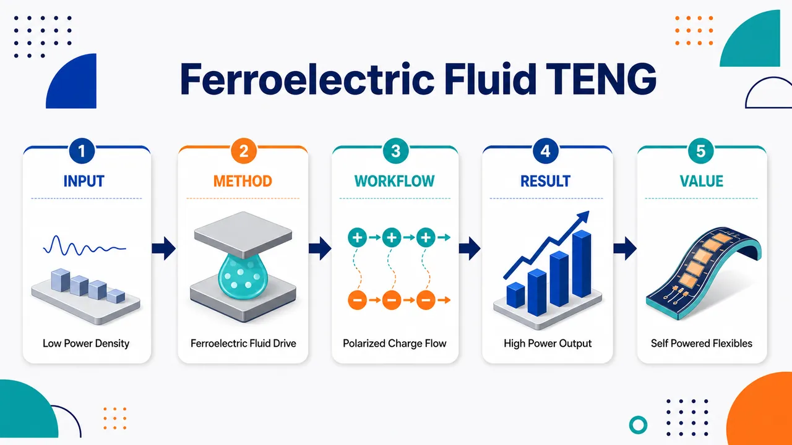
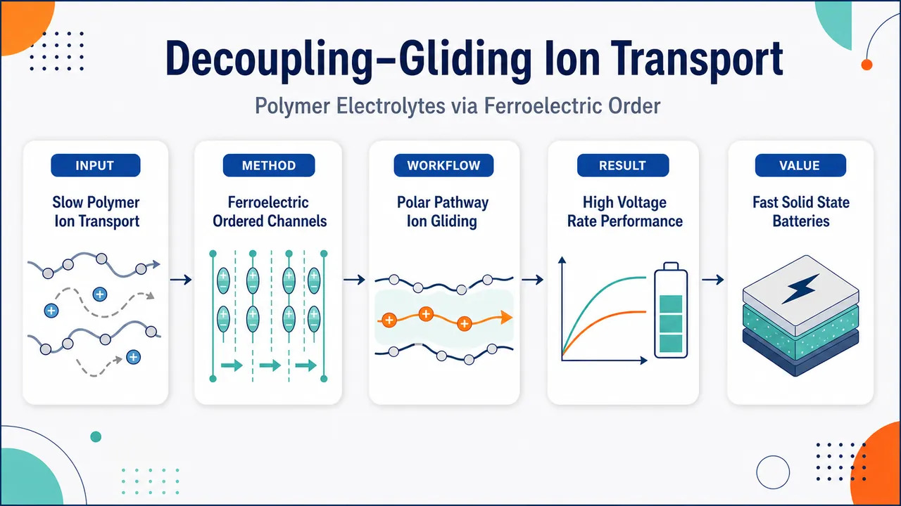

AI × Science 文献日报 2026/06/05
聚焦 AI × 物理 / 化学 / 材料交叉方向，自动过滤明显偏题的医学、教育与社会科学内容，并按主题重新排版，便于快速深读。
AI | 物理 | 化学 | 材料 | 交叉学科 | arXiv | 预印本追踪
原始候选 200 篇中，已剔除 0 篇明显偏离主线的内容，并从剩余 200 篇主线相关文献中精选 60 篇进入日报页，优先保留 AI × 物理 / 化学 / 材料交叉与关键计算方法工作。
核心关注（ML × ferro / 凝聚态）
8 篇今日实质进展集中在“可微分物理求解器+神经网络表征”：神经网络时变变分蒙特卡洛处理相互作用电子实时动力学，自动微分有限元从全场形变反演神经网络本构，比传统均匀应力-应变标定更贴近复杂凝聚态材料。Fe-TiC-H/TiC-Fe 界面工作把机器学习原子间势推向氢偏聚和扩散的缺陷尺度预测，可与 MACE、NEP、equivariant GNN 势函数路线直接对接。WSe2/铁电杂化钙钛矿、合成反铁磁斯格明子、d 波交错磁体和交错磁拓扑绝缘体分别把界面极化、层间反铁磁耦合、零净磁矩自旋劈裂和光场 Floquet 调控推到可计算响应层面，后续可结合 DFT+U、微磁本征值求解与数据驱动有效哈密顿量建模。
-
01神经网络时变变分蒙特卡洛电子动力学Towards stable and accurate electron dynamics via neural network based time-dependent variational Monte Carlo
📄 摘要：面向相互作用电子实时动力学，发展神经网络时变变分蒙特卡洛框架，目标是在分子和纳米材料超快过程模拟中提高演化稳定性与精度。
💡 亮点：神经网络变分蒙特卡洛用于稳定电子实时演化。
📐 方法要点：神经网络量子态结合时变变分蒙特卡洛，求解电子实时演化。
🔗 相关工作关联：呼应神经量子态、TDVP、实时VMC、强关联电子非平衡动力学。
💡 对你方向的启示：可用于光激发铁电/磁性关联体系，重点评估采样噪声与长时稳定性。
-
02自动微分有限元材料学习Finite Element-Based Material Learning via Automatic Differentiation: Learning constitutive neural network models from full-field deformation data
📄 摘要：用自动微分有限元从非均匀全场形变数据识别神经网络本构模型，替代均匀应力-应变标定，适合高维复杂材料响应反演。
💡 亮点：全场形变数据可直接学习神经网络本构关系。
📐 方法要点：自动微分有限元端到端反演神经网络本构，直接吃全场形变。
🔗 相关工作关联：对应可微分力学、逆有限元、PINN本构学习、数字图像相关反演。
💡 对你方向的启示：适合铁电畴壁、磁弹耦合和软材料非均匀响应的本构识别。
-
03Fe-TiC-H 机器学习原子间势Fe-TiC-H machine learning interatomic potential for predicting hydrogen segregation and diffusion in TiC/Fe
📄 摘要：构建 Fe-TiC-H 机器学习原子间势，用于预测 TiC/Fe 中氢在碳化物及界面原子位点的偏聚、结合能与扩散行为，服务钢中氢脆陷获机制分析。
💡 亮点：Fe-TiC-H 势可解析 TiC/Fe 界面氢陷获。
📐 方法要点：构建Fe-TiC-H机器学习原子间势，预测界面氢陷获与扩散。
🔗 相关工作关联：呼应MACE、NEP、GAP、主动学习势函数和钢中氢脆模拟。
💡 对你方向的启示：给多相界面缺陷扩散建模范式，可迁移到铁电氧空位与磁性合金氢扩散。
-
04合成反铁磁斯格明子的本征模Eigenmodes of synthetic antiferromagnetic skyrmions
📄 摘要：采用微磁本征值和环降模拟研究受限合成反铁磁斯格明子激发模，并与单层铁磁斯格明子的低频回旋等模式对比，揭示层间耦合改变动力学谱。
💡 亮点：层间反铁磁耦合重塑斯格明子本征激发。
📐 方法要点：微磁本征值分析与环降模拟解析合成反铁磁斯格明子本征模。
🔗 相关工作关联：关联Thiele方程、铁磁斯格明子回旋模、反铁磁自旋波和层间交换耦合。
💡 对你方向的启示：可把本征谱作为机器学习降阶模型标签，预测器件频率窗口。
-
05d 波交错磁体的全光自旋极化激发All optical excitation of spin polarization in d-wave altermagnets
📄 摘要：针对 d 波交错磁体的零净磁矩共线磁序和自旋极化能带，研究全光方式激发自旋极化，展示无需铁磁净磁化的超快自旋操控路径。
💡 亮点：d 波交错磁体可被光激发出自旋极化。
📐 方法要点：利用光场激发d波交错磁体自旋极化，无需净铁磁磁化。
🔗 相关工作关联：呼应交错磁体、自旋光伏效应、超快自旋电子学和非线性光响应。
💡 对你方向的启示：ML可筛选零净磁矩材料的光致自旋极化张量和脉冲参数。
-
06铁电增强 WSe2 异质结暗激子发光Ferroelectric brightening of spin forbidden dark excitons in a WSe2/hybrid perovskite heterostructure
📄 摘要：在单层 WSe2/铁电杂化钙钛矿异质结中，利用铁电环境使自旋禁戒暗激子变亮；原本需强外磁场的暗激子光学访问与自旋操控可由界面极化辅助实现。
💡 亮点：铁电异质结使 WSe2 自旋禁戒暗激子可见。
📐 方法要点：用铁电杂化钙钛矿界面极化增强单层WSe2自旋禁戒暗激子发光。
🔗 相关工作关联：对应TMD暗激子、铁电近邻效应、Rashba场、范德华异质结光谱。
💡 对你方向的启示：提示用极化态作为可学习控制量，优化二维半导体激子自旋读出。
-
07铁电向列液晶的几何极化控制Geometry-Driven Polarization Control in Ferroelectric Nematic Liquid Crystals
📄 摘要：研究铁电向列液晶中几何结构对自发极化的调控，显示机械几何设计可增强力电转换，结合流动性和极化有序实现柔性机电响应。
💡 亮点：几何约束可放大铁电向列液晶力电转换。
📐 方法要点：通过几何边界和形变设计调控铁电向列液晶自发极化分布。
🔗 相关工作关联：关联铁电向列相、软物质拓扑缺陷、液晶弹性和柔性机电转换。
💡 对你方向的启示：适合建立几何参数到极化/应变响应的代理模型与反向设计流程。
-
08交错磁拓扑绝缘体的光致霍尔效应Linearly Polarized Light-Induced Anomalous Hall Effect and Topological Phase Transitions in an Altermagnetic Topological Insulator
📄 摘要：理论研究线偏振光诱导交错磁拓扑绝缘体反常霍尔效应和拓扑相变，利用光场调控零净磁矩体系中的非常规自旋劈裂与拓扑响应。
💡 亮点：线偏振光可驱动交错磁拓扑相变和霍尔响应。
📐 方法要点：理论计算线偏振光诱导交错磁拓扑绝缘体反常霍尔与相变。
🔗 相关工作关联：呼应Floquet拓扑、交错磁自旋劈裂、反常霍尔效应和光控拓扑相。
💡 对你方向的启示：可用数据驱动有效哈密顿量快速扫描偏振、频率与拓扑不变量。
今日摘要
总览：今日文献横跨神经网络时变变分蒙特卡洛、自动微分有限元反演本构、铁—碳化钛—氢机器学习原子间势、强关联系统自能算符学习等计算方法，同时把氢在碳化钛/铁界面偏聚扩散、全场形变数据本构识别、电子实时动力学稳定性作为可验证场景。材料物理主线集中在交替磁体与拓扑磁电响应、莫尔二硒化钨和菱方石墨烯的关联拓扑相、二硒化钨/杂化钙钛矿暗激子铁电增亮、二氧化钌非磁—磁转变、二碲化铀三重点超导以及铜氧化物小费米口袋诱导的跨越行为。功能材料方向还覆盖铁电向列液晶几何极化控制、铁电流体摩擦纳米发电机、铁电有序聚合物电解质、近准同型相界钛酸铋钠—钛酸钡纳米晶、磁弹性体运动监测和锗碲基导电桥存储器。
热点：热点一：交替磁体与磁拓扑输运 → 利用线偏振光、磁场和自旋轨道矩测量操控反常霍尔效应、自旋光电流、磁光克尔响应与拓扑相变 → 典型工作包括波型交替磁体的全光自旋极化、交替磁拓扑绝缘体的光诱导反常霍尔效应、三氧化二铬共振自旋光电流、二氧化钌非磁—磁转变以及磁性外尔半金属综述。热点二：莫尔与菱方石墨烯中的关联拓扑和非常规超导 → 通过扭转二硒化钨、菱方多层石墨烯、魔角双层石墨烯和量子点约瑟夫森结解析莫特量子自旋霍尔相、三分之一分数量子反常霍尔态、量子几何光电流、手征超导候选态与超导三极管效应 → 典型工作为扭转二硒化钨观测莫特量子自旋霍尔相、菱方石墨烯分数量子反常霍尔态、圆偏振光电流探测魔角双层石墨烯量子几何。热点三：机器学习进入可微物理与材料势能面 → 神经网络波函数、可微有限元、算符学习和机器学习原子间势把电子动力学、连续介质本构、强关联系统自能与界面扩散纳入端到端训练 → 典型工作包括神经网络时变变分蒙特卡洛、自动微分有限元本构网络、铁—碳化钛—氢势能面预测氢偏聚扩散、强关联系统自能的变换器算符学习。热点四：铁电耦合功能化 → 用铁电极化调控激子辐射、离子迁移、液晶取向和摩擦起电界面电荷 → 典型体系包括二硒化钨/杂化钙钛矿异质结暗激子增亮、铁电向列液晶几何极化控制、铁电流体驱动摩擦纳米发电机、铁电有序聚合物电解质和钛酸铋钠—钛酸钡纳米晶能量转换。
今日文献
60 篇 · 15 含图深析-
01
💡 亮点：磁序与 Weyl 拓扑共同决定异常电磁响应。
📖 展开分析 + 配图
 研究问题磁性外尔半金属中，动量空间的外尔点、贝里曲率和手性拓扑电荷如何与铁磁、反铁磁、非中心对称磁序相互作用，并进一步产生异常霍尔效应、手性磁效应、磁畴壁输运、自旋力矩等电磁响应。创新方法以“能带拓扑—磁性耦合”为主线，将外尔费米子拓扑结构、磁性材料类型、磁织构动力学和磁输运统一到同一图景：磁序打破时间反演对称性，使狄拉克点分裂成一对相反手性的外尔点；非均匀磁化可作为手性规范场驱动电子与自旋的相互转换。工作流程从狄拉克/外尔哈密顿量出发，构建晶格外尔模型；加入交换耦合磁化项，使能带中出现成对外尔点；计算贝里曲率、拓扑电荷和费米弧；对应到真实磁性材料体系；进一步分析磁畴壁、螺旋、自旋纹理、无序和有限尺寸下的电荷输运与自旋输运响应。关键结果磁性外尔半金属表现出由贝里曲率主导的强本征异常霍尔效应、表面费米弧、手性异常和手性磁效应；磁畴壁与非均匀磁织构可诱导自旋电动势、畴壁磁阻和电流驱动自旋力矩；这些拓扑响应在一定无序下具有鲁棒性，并已在 Mn3Sn、Co3Sn2S2、SrRuO3、Heusler 合金等材料中得到理论和实验支持。应用价值为低耗散电子学和自旋电子学器件提供材料与机制基础：利用外尔电子的拓扑稳定性和自旋—动量锁定，可实现电流/电压控制磁化、低功耗磁存储、拓扑霍尔器件、自旋流生成与高效磁畴壁操控。
研究问题磁性外尔半金属中，动量空间的外尔点、贝里曲率和手性拓扑电荷如何与铁磁、反铁磁、非中心对称磁序相互作用，并进一步产生异常霍尔效应、手性磁效应、磁畴壁输运、自旋力矩等电磁响应。创新方法以“能带拓扑—磁性耦合”为主线，将外尔费米子拓扑结构、磁性材料类型、磁织构动力学和磁输运统一到同一图景：磁序打破时间反演对称性，使狄拉克点分裂成一对相反手性的外尔点；非均匀磁化可作为手性规范场驱动电子与自旋的相互转换。工作流程从狄拉克/外尔哈密顿量出发，构建晶格外尔模型；加入交换耦合磁化项，使能带中出现成对外尔点；计算贝里曲率、拓扑电荷和费米弧；对应到真实磁性材料体系；进一步分析磁畴壁、螺旋、自旋纹理、无序和有限尺寸下的电荷输运与自旋输运响应。关键结果磁性外尔半金属表现出由贝里曲率主导的强本征异常霍尔效应、表面费米弧、手性异常和手性磁效应；磁畴壁与非均匀磁织构可诱导自旋电动势、畴壁磁阻和电流驱动自旋力矩；这些拓扑响应在一定无序下具有鲁棒性，并已在 Mn3Sn、Co3Sn2S2、SrRuO3、Heusler 合金等材料中得到理论和实验支持。应用价值为低耗散电子学和自旋电子学器件提供材料与机制基础：利用外尔电子的拓扑稳定性和自旋—动量锁定，可实现电流/电压控制磁化、低功耗磁存储、拓扑霍尔器件、自旋流生成与高效磁畴壁操控。第一部分：核心概览
磁性 Weyl 半金属通过时间反演对称性破缺把磁有序与Weyl 节点的能带拓扑直接耦合，产生异常霍尔效应、手征磁效应、手征异常、Fermi arc、磁纹理诱导响应、自旋力矩与自旋输运等现象。该综述系统整合理论模型、材料体系和输运效应，定位于连接拓扑凝聚态物理与低耗散自旋电子学的关键参考框架。
---
第二部分：结构化快速回顾
《Magnetic Weyl semimetals: Interplay of band topology and magnetism》（None，）
背景
Weyl 半金属是具有动量空间点状能带接触的拓扑相，磁性 Weyl 半金属进一步通过磁序破坏时间反演对称性，使电子拓扑与磁自由度发生交叉耦合。核心背景包括 Weyl 费米子、Berry 曲率、异常霍尔效应、手征异常以及磁性材料中的 Weyl 节点实现。
方法
采用综述式理论—实验整合：从 Dirac/Weyl 哈密顿量、Bloch 能带、Wilson–Dirac 晶格模型、Berry 曲率与拓扑荷出发，串联材料实例、磁性机制、磁纹理动力学、磁输运和自旋输运研究。
结果
磁性 Weyl 半金属已在铁磁、反铁磁、非中心对称体系中被提出或验证，包括 SrRuO3、Co 基 Heusler 合金、Co3Sn2S2、Mn3Sn、Ti2MnAl 等。最典型可观测结果是强异常霍尔效应，其内禀来源是 Berry 曲率。
讨论
磁性 Weyl 半金属的关键物理在于能带拓扑与磁性之间的双向作用：磁序可生成 Weyl 节点，Weyl 电子也可影响磁相互作用、磁各向异性、磁纹理动力学和自旋力矩。
局限
理想 Weyl 半金属要求费米能级接近 Weyl 点，但真实材料常具有有限 Fermi 面和显著态密度，更接近 Weyl metal。此外，真实材料中的“自旋—动量锁定”不一定由真实自旋承担，可能混合轨道、亚晶格等自由度。
结论
磁性 Weyl 半金属为研究拓扑电磁响应、磁纹理操控、自旋输运与低功耗器件提供统一平台，其拓扑性质兼具基础物理价值和自旋电子学应用潜力。
---
第三部分：逐章节冷凝解析
I. OVERVIEW
Topological phases establish the conceptual foundation
拓扑电子相被定位为量子相的新类别，Weyl 半金属是其中的重要代表，其定义性特征是动量空间中的点状能带接触。关键表述为 *"Topological phases in electronic systems have been extensively investigated as a new class of quantum phases"*，并进一步指出 Weyl 半金属 *"are significant case of such topological phases, characterized by the pointlike band touching in momentum space"*。这一点状接触不是普通简并，而是携带拓扑荷的 Weyl 节点。
Magnetic Weyl semimetals enable cross-correlated magnetoelectric effects
磁性 Weyl 半金属的核心价值在于其能带拓扑导致电与磁自由度之间的交叉响应。相关现象包括电场、电流与磁场、磁化、自旋纹理之间的耦合。关键原句为 *"Weyl semimetals exhibit various magnetoelectric properties, yielding cross correlation between the electric (e.g., electric field, current) and the magnetic (e.g., magnetic field, magnetization, spin textures) degrees of freedom"*。磁性版本尤其重要，因为磁序天然破坏时间反演对称性。
Weyl fermion history begins in high-energy physics
Weyl 费米子最初来自相对论量子理论。1929 年 Weyl 在高能物理语境中提出无质量手征费米子；Dirac 费米子允许质量项混合左右手征，而 Weyl 费米子无质量、手征彼此隔离。关键原句为 *"Weyl introduced the relativistic description of the massless chiral fermion in the context of high-energy physics"*，以及 *"Whereas the Dirac fermion allows a mass term mixing right- and left-handed chiralities, the Weyl fermion is massless so that each chirality is kept isolated"*。
Chirality is the defining quantum number of Weyl fermions
手征性 chirality描述自旋相对于动量的平行或反平行关系。右手征为 +1，左手征为 −1。关键原句为 *"The Weyl fermion is labeled by the quantum number called the chirality, which characterizes its spin being either parallel (right-handed, +1) or antiparallel (left-handed, −1) to its momentum"*。这一概念后来在凝聚态中转化为 Weyl 节点的拓扑荷。
Condensed-matter realizations convert relativistic particles into quasiparticles
凝聚态体系中的 Weyl/Dirac 费米子并非基本粒子，而是晶体中低能准粒子激发。1947 年 Wallace 预言蜂窝晶格单层具有二维 Dirac 费米子，成为石墨烯研究源头。关键原句为 *"As an analog of elementary particles in condensed matter, the quest for relativistic fermions, including Weyl fermions, also has a long history"*，以及 *"a single layer of honeycomb lattice extracted from graphite hosts two-dimensional (2D) relativistic Dirac fermions"*。
Three-dimensional Weyl-type excitations preceded modern Weyl semimetals
三维 Weyl 激发的思想早于现代 Weyl 半金属命名。Volovik 于 1987 年指出超流 3He A 相中存在 Weyl 型准粒子；Murakami 于 2007 年提出无反演对称晶体在拓扑相变临界点可出现无能隙线性色散。关键原句为 *"Volovik pointed out in 1987 the existence of the Weyl-type quasiparticle excitation in the A-phase of the superfluid 3He"*，以及 *"Murakami proposed in 2007 the emergence of gapless linear dispersion in the band structure"*。
Magnetic Weyl semimetal proposals emerged before nonmagnetic material dominance
磁性材料中的 Weyl 激发研究始于 2000 年代早期。2001 年 Shindou 和 Nagaosa 提出三重 Q 反铁磁有序晶格模型中的 Weyl 费米子激发；2003 年 Fang 等在铁磁 SrRuO3 中观察到 Weyl 费米子对异常霍尔效应的影响。关键原句为 *"In 2001, Shindou and Nagaosa theoretically proposed the Weyl fermion excitations on a lattice model with a triple-Q antiferromagnetic ordering"*，以及 *"experimental observations by Fang et al. on the ferromagnetic SrRuO3 confirmed the effect of Weyl fermions on the anomalous Hall effect"*。
The term Weyl semimetal entered literature in 2011 through magnetic systems
2011 年“Weyl semimetal”术语出现在两项标志性理论工作中：Wan 等研究反铁磁 pyrochlore 晶格，Burkov 和 Balents 研究拓扑绝缘体磁性超晶格。关键原句为 *"the terminology ‘Weyl semimetal’ appeared in two theoretical studies, one on the antiferromagnetic pyrochlore lattice by Wan et al., and the other on a magnetic superlattice of topological insulator by Burkov and Balents"*。这表明磁性体系在 Weyl 半金属概念形成中并非边缘路线，而是源头之一。
Early experimental focus shifted from nonmagnetic TaAs to magnetic materials
早期实验主要集中于破坏反演对称性的非磁性 Weyl 半金属，如 TaAs。随后，为实现时间反演对称性破缺的磁性 Weyl 半金属，研究重心扩展至磁性材料。关键原句为 *"At the early stage, the studies on Weyl semimetals were mostly focused on nonmagnetic materials with broken inversion symmetry, such as TaAs"*，以及 *"To realize the magnetic Weyl semimetal phase with time-reversal symmetry broken, a great deal of effort was devoted"*。
Mn3Sn provided the first experimental identification of Weyl fermions in a magnetic material
2017 年，Mn3Sn 中通过 ARPES 首次实验识别磁性材料中的 Weyl 费米子。关键原句为 *"The first experimental identification of Weyl fermions in magnetic material was in the chiral antiferromagnet Mn3Sn using the angle-resolved photoemission spectroscopy (ARPES) in 2017"*。这在磁性 Weyl 半金属实验证据链中具有里程碑意义。
Anomalous Hall effect is the most typical observable phenomenon
磁性 Weyl 半金属中最典型实验现象是异常霍尔效应，其内禀来源是 Berry 曲率。关键原句为 *"The most typically observed phenomenon in magnetic Weyl semimetals is the anomalous Hall effect"*，并说明其 *"arises as the intrinsic effect from the band topology known as the Berry curvature"*。某些材料中的异常霍尔效应强度远超传统磁性材料，原句为 *"An extremely strong anomalous Hall effect has been reported in some species of magnetic Weyl semimetal materials"*。
Magnetoelectric responses motivate low-power electronics and spintronics
除异常霍尔效应外，磁性 Weyl 半金属还被期待实现多种磁电效应，例如通过电流或电压控制自旋。关键原句为 *"one may achieve a control of spin by electric current or voltage"*。应用前景指向低功耗电子学与自旋电子学器件，原句为 *"these effects are expected to be applied to the development of future electronics and spintronics devices with high functionalities and low power consumption"*。
Review scope spans theory, materials, magnetism, textures, transport, and spin transport
整体知识框架包括：Weyl 费米子的基本理论、磁性材料体系、磁有序机制、非均匀磁纹理、无序下磁输运、自旋输运。关键原句为 *"the interplay between band topology and magnetism becomes significant"*，并覆盖 *"nonuniform magnetic textures, such as magnetic domain walls, spirals, and skyrmions"*、*"transport properties in magnetic Weyl semimetals under a disorder effect"* 与 *"spin transport properties in magnetic Weyl semimetals"*。
---
II. TOPOLOGICAL PROPERTIES OF MAGNETIC WEYL SEMIMETALS
Theoretical foundation links relativistic fermions, Bloch bands, topology, and electromagnetic responses
该章建立磁性 Weyl 半金属理论基础：先回顾 Dirac/Weyl 费米子，再引入晶体 Bloch 能带，随后用具体模型展示磁序、拓扑性质、对称性、输运与表面态，最后连接手征规范场和手征异常。关键原句为 *"we review the fundamentals of the theory of magnetic Weyl semimetals"*，以及 *"we explain the electronic responses to electromagnetic fields, in connection with the chiral gauge fields and the chiral anomaly characteristic to Weyl fermions"*。
---
A. Relativistic quantum mechanics: Dirac and Weyl Hamiltonian
Dirac equation linearizes relativistic fermion dynamics
Dirac 方程通过四分量旋量和 Clifford 代数矩阵实现自旋 1/2 费米子的相对论线性波动方程。方程为
[
ihbar fracpartialpartial tΨ(r,t)=H_D(p)Ψ(r,t)
]
哈密顿量为
[
H_D(p)=cpₓα₁₊cp_yα₂₊cp_zα₃₊ₘc²α₄
]
关键原句为 *"Dirac proposed a linearized wave equation for the fermions with spin 1/2 satisfying the Lorentz symmetry, by introducing the multi-component spinor representation of the fermion"*。
Clifford algebra guarantees relativistic dispersion
矩阵 (α_μ) 满足反对易关系 (α_μ,α_ν=2δμν)，保证相对论能量—动量关系。关键原句为 *"The matrices αµ=1,2,3,4 in Eq. (2) are defined to satisfy the Clifford algebra"*，并满足 *"the relativistic relationship between energy and momentum, E2 = c2|p|2 + (mc)4"*。Dirac 能谱为
[
E(p)=± csqrt|p|²⁺⁽mc)²
]
非零质量 (m≠ 0) 时零能附近开隙。
Dirac and Weyl representations are unitarily related
Clifford 代数矩阵表示并不唯一。Dirac 表示中，上两分量对应正能电子，下两分量对应负能；Weyl 表示通过幺正变换得到。关键原句为 *"The matrix representation of the Clifford algebra is not uniquely the Dirac representation"*，以及 *"Another typical form related by a unitary transformation is the Weyl representation"*。
Massless limit decomposes Dirac fermion into two Weyl fermions
当 (m=0) 时，Dirac 哈密顿量在 Weyl 表示中块对角化，分解为两个二维 Weyl 哈密顿量：
[
Hη₌±(p)=η cσḑot p
]
关键原句为 *"In case m = 0, Eq. (6) becomes block diagonal"*。这产生两个手征分支，(η=+) 为右手征，(η=-) 为左手征。
Weyl Hamiltonian describes massless chiral fermions
Weyl 哈密顿量为
[
H_η(p)=η c
beginpmatrix
p_z & pₓ₋ᵢₚ_y
pₓ₊ᵢₚ_y & -p_z
endpmatrix
]
关键原句为 *"is now called the Weyl Hamiltonian, which governs the massless relativistic fermion in terms of the 2-component spinor"*。能谱为
[
E_±(p)=± c|p|
]
即线性且无能隙，原句为 *"The energy eigenvalues of the Weyl fermions become E±(p) = ±c|p|, which is linear and gapless"*。
Chirality operator distinguishes right- and left-handed states
四分量旋量中，右手态与左手态是手征算符
[
Γ₅₌₋ᵢα₁α₂α₃
]
的本征态，本征值为 (± 1)。关键原句为 *"called the chirality operator, with the eigenvalues ±1"*。手征性在凝聚态中对应 Weyl 节点的拓扑符号。
---
B. Electronic bands in solid states: insulator, metal, and semimetal
Relativistic quasiparticles emerge from nonrelativistic crystals
晶体电子原本由非相对论动力学描述，但特定能带结构的低能准粒子可由 Dirac/Weyl 方程刻画。关键原句为 *"such relativistic descriptions are applicable to quasiparticle excitations in solid states in some cases, even though the dynamics of electrons in solid states themselves are originally described nonrelativistically"*。这解释了为什么固体可模拟高能 Weyl 费米子。
Bloch theorem defines crystal momentum and band eigenstates
周期晶体满足 (hat H(r)=hat H(r+T))，Bloch 波函数形式为
[
φ(r)=uₖ₍ᵣ₎ₑⁱkḑot r
]
其中 (uₖ₍ᵣ₊T)=uₖ₍ᵣ₎)。关键原句为 *"The Bloch’s theorem demands that the eigenfunction of this Hamiltonian should satisfy ϕ(r) = uk(r)e+ik·r"*。能带本征方程写为
[
H(k)|uₙₖångle=Eₙₖ|uₙₖångle
]。
Band structure near the Fermi level controls metallicity
费米能级 (E_F) 附近的态密度决定金属性。金属有非零态密度
[
h̊o(E_F)=frac1Vsumₙ,ₖδ(Eₙₖ-E_F)
]
关键原句为 *"The band structure around the Fermi level EF, up to which electrons are filled, determines the metallicity of materials"*。金属中电子容易被激发参与导电，但也容易受杂质散射产生焦耳热。
Insulators and semimetals differ by band gap and overlap
绝缘体在价带与导带之间具有宽带隙，需要较大激发能导电；半金属则价带和导带有小能量重叠，具有小 Fermi 面和低载流子密度。关键原句为 *"insulator shows a wide band gap between the valence (lower) and conduction (upper) bands"*，以及 *"semimetal is characterized with the valence and conduction bands having a small overlap in energy, to exhibit relatively small Fermi surfaces and low carrier density"*。元素铋被列为典型半金属，原句为 *"One typical example for semimetal is elemental bismuth"*。
---
C. Electronic bands of Weyl semimetal
Weyl semimetal is the extreme limit of semimetal band overlap
Weyl 半金属可理解为半金属中价带与导带能量重叠不断缩小后，在动量空间某些点相接的极限情形。关键原句为 *"Weyl semimetal is identified as the extreme case of semimetals"*，以及 *"one ultimately reaches the situation where these bands touch at some points in the momentum space"*。
Linear band touching defines the Weyl point
当能带接触点附近的能量—动量色散为线性时，低能激发由 Weyl 哈密顿量描述：
[
H_η(k)=ηhbar v_F kḑotσ
]
其中光速 (c) 被材料依赖的 Fermi 速度 (v_F) 替代。关键原句为 *"the low-momentum excitations around this point are necessarily described by the Weyl Hamiltonian"*，以及 *"This linear band touching is the definition of the Weyl semimetal, and the band touching point is called the Weyl point"*。
Pauli matrices may represent spin, orbital, or sublattice degrees of freedom
凝聚态 Weyl 哈密顿量中的 (σ) 不一定是真实自旋，也可能对应轨道、亚晶格等两个内部自由度。关键原句为 *"σ does not necessarily correspond to the spin degrees of freedom appearing in the relativistic Weyl fermions, but may involve other degrees of freedom, such as atomic orbital, sublattice, etc."*。这一点对理解真实材料中的自旋输运和自旋—动量锁定尤为关键。
Weyl points are robust against perturbations
Weyl 哈密顿量已经使用三个 Pauli 矩阵，普通质量项无法开隙。例如加入 (Δσ_z) 只会使 Weyl 点沿 (k_z) 方向移动，而不会打开能隙。关键原句为 *"this Hamiltonian uses all three Pauli matrices, and hence we cannot open a gap in the spectrum"*，以及 *"Even if we add a mass term, such as ∆σz, this induces a shift of the Weyl point in the kz-direction and cannot open a gap"*。这就是 Weyl 节点的拓扑稳定性。
Weyl points must appear in pairs
晶体中的 Weyl 点必须成对出现，且实现 Weyl 点需要破坏时间反演或空间反演对称性。关键原句为 *"the Weyl points in crystals should always appear in pair(s)"*，以及 *"To realize the Weyl point structure in the electronic bands, the time-reversal or spatial inversion symmetry needs to be broken"*。磁性材料天然满足时间反演对称性破缺，原句为 *"The breaking of time-reversal symmetry is necessarily satisfied in magnetic materials"*。
Ideal Weyl semimetal and realistic Weyl metal are not identical
理想 Weyl 半金属要求费米能级 (E_F) 足够靠近 Weyl 点，使态密度被抑制、导电几乎可忽略。现实材料中 (E_F) 常偏离 Weyl 点，产生有限 Fermi 面和可观态密度，更像 Weyl 金属。关键原句为 *"Ideally, the terminology ‘Weyl semimetal’ applies to the case where EF is located close enough to the energy of the Weyl point"*，以及 *"Such a system is sometimes called ‘Weyl metal’ instead of semimetal"*。
Spin-momentum locking depends on the meaning of sigma
若 (σ) 是真实自旋，Weyl 哈密顿量给出自旋—动量锁定：(η=+) 时 (σparallel k)，(η=-) 时 (-σparallel k)。关键原句为 *"If σ corresponds to the spin degrees of freedom, the correlation between k and σ is called the ‘spin-momentum locking’ in Weyl semimetal"*。但真实磁性 Weyl 材料中此结构不一定存在，原句为 *"this spin-momentum locking structure is not necessarily present in realistic magnetic Weyl materials where σ is not real spin"*。
---
D. Early-stage proposals of magnetic Weyl semimetals
Early Weyl semimetal proposals relied on magnetic time-reversal breaking
最早的 Weyl 半金属构想基于自发磁序破坏时间反演对称性。关键原句为 *"The earliest proposals of Weyl semimetals were based on the breaking of time-reversal symmetry by the spontaneous magnetic ordering"*。这与后来 TaAs 等非磁性反演破缺材料路线形成互补。
Wan et al. identified Weyl points in all-in-all-out pyrochlore iridates
Wan 等研究 Y2Ir2O7 等 pyrochlore iridates，通过第一性原理计算考察自发磁序与能带结构。结果显示，非共线 all-in-all-out 自旋排列产生 Weyl 点。关键原句为 *"focusing on the iridates such as Y2Ir2O7 having the pyrochlore lattice structure"*，以及 *"the so-called ‘all-in-all-out’ ordering, where the spins are aligned noncollinear in each unit cell, gives rise to the Weyl point structure"*。
Fermi arc surface states were identified as a defining Weyl signature
Wan 等通过 downfolding 到紧束缚模型发现 Weyl 半金属特征表面态 Fermi arcs。关键原句为 *"they also found the existence of the surface states characteristic to Weyl semimetals, called Fermi arcs"*。该工作被定位为里程碑，原句为 *"this paper is recognized as a milestone paper as the earliest proposal of Weyl semimetal phase and the corresponding Fermi arc surface states"*。
Burkov and Balents proposed magnetic topological-insulator superlattices
Burkov 和 Balents 考虑磁性拓扑绝缘体多层超晶格，其中每层表面的二维 Dirac 费米子可隧穿到相邻层并形成三维能带。关键原句为 *"They considered the multilayer superlattice of magnetic topological insulators, where the 2D Dirac fermions on the surface of each layer can tunnel to its adjacent layers and become 3D"*。随着层间跃迁强度改变，三维能带中出现 Weyl 费米子。
Semi-quantized anomalous Hall conductivity emerged as a key prediction
Burkov 和 Balents 的重要发现是半量子化异常霍尔电导，成为磁性 Weyl 半金属的重要特征。关键原句为 *"The important finding in this work is the semi-quantized anomalous Hall conductivity"*。这一预测直接连接 Weyl 节点间距与霍尔响应。
---
E. Lattice model of Weyl fermions
Lattice Hamiltonians are necessary for crystalline Weyl fermions
晶体 Weyl 费米子的理论必须尊重空间周期性，因此需要晶格哈密顿量。即使真实晶格结构因材料而异，假想立方晶格上的模型也可重现 Dirac/Weyl 费米子。关键原句为 *"one needs a Hamiltonian defined on a lattice respecting the spetial periodicity"*，以及 *"the Hamiltonian formulated on a hypothetical cubic lattice can also reproduce the Weyl (or Dirac) fermions"*。
Wilson–Dirac model provides a standard tight-binding formulation
Wilson–Dirac 模型最初用于格点 QCD 中夸克和胶子相互作用数值模拟，后来成为描述固体 Dirac/Weyl 费米子的常用晶格模型。关键原句为 *"one of the tight-binding formulations of Weyl (and Dirac) fermions, called the Wilson–Dirac model"*，以及 *"Such lattice fermion formulations were invented originally for the numerical simulations, especially for the interactions of quarks and gluons in the context of lattice QCD"*。
---
1. Dirac semimetal
Wilson–Dirac Hamiltonian reproduces low-energy Dirac fermions
Wilson–Dirac 模型为
[
HWD(k)=tsumᵢ₌ₓ,y,zsin(kᵢ a)αᵢ₊ₘ₍ₖ₎α₄
]
[
m(k)=m₀₊ₘ₂sumᵢ₌ₓ,y,z[1-o̧s(kᵢ a)]
]
其中 (a) 是立方晶格常数，(t) 和 (m₂>0) 是近邻跃迁参数。关键原句为 *"one of the commonly used models is the Wilson–Dirac model"*。在 (k=0) 附近线性展开得到
[
HWD(k)=tasumᵢ kᵢαᵢ₊ₘ₀α₄₊O(k²⁾
]
对应 Dirac 哈密顿量，Fermi 速度 (c=ta/hbar)，质量 (m=m₀/c²)。
Massless Wilson–Dirac model yields a Dirac point
Wilson–Dirac 能谱为
[
EWD(k)=±sqrtsumᵢ t²sin²⁽kᵢ a)+m²⁽k)
]
正负能态均二重简并。质量极限 (m₀₌₀) 时，(k=0) 处能谱无隙且线性。关键原句为 *"In the massless limit m0 = 0, the energy spectrum becomes gapless and linear at k = 0"*。若这种无隙二重简并色散在固体中实现，即为 Dirac 半金属，原句为 *"this state is called the ‘Dirac semimetal’, and the gapless point is called the ‘Dirac point’ or ‘Dirac node’"*。
Time-reversal and inversion symmetry protect Dirac degeneracy
Dirac 半金属中每个 (k) 点的 Bloch 态简并由时间反演和空间反演对称性保证。关键原句为 *"the Bloch state for each k-point is degenerate, which is guaranteed by the time-reversal and spatial inversion symmetry"*。这也解释了磁序引入后 Dirac 点为何可裂分为 Weyl 点。
Wilson term removes fermion doubling
若 (m₂₌ₘ₀₌₀)，动量依赖质量项在 8 个时间反演不变动量处为零，包括
[
ak=(0,0,0),(0,0,π),(0,π,0),(0,π,π),(π,0,0),(π,0,π),(π,π,0),(π,π,π)
]
会产生 8 个 Dirac 费米子 flavor。关键原句为 *"the energy spectrum shows eight gapless nodes at these k-points"*。设置 (m₂>0) 可使不需要的节点开隙，原句为 *"To get a single species of Dirac fermion in the lattice model, we need to gap out the seven unwanted k-points, which is achieved by setting m2 > 0"*。
Wilson term corresponds to band inversion in solids
Wilson 项在固体中对应由自旋—轨道耦合等导致的能带反转，对描述 Dirac 半金属和拓扑绝缘体至关重要。关键原句为 *"In solid states, the Wilson term corresponds to the effect of band inversion, e.g., by spin-orbit coupling"*，以及 *"which is essential in describing the Dirac semimetals and topological insulators as well"*。
Topological Dirac semimetals host symmetry-protected multiple Dirac points
除单 Dirac 点模型外，拓扑 Dirac 半金属可存在多个由晶体对称性保护的 Dirac 点，实验材料包括 Na3Bi 和 Cd3As2。关键原句为 *"Multiple Dirac points can also emerge in so-called topological Dirac semimetals, where they are protected by the crystalline symmetries of the material"*，以及 *"Such Dirac points have been experimentally observed in materials like Na3Bi and Cd3As2"*。
---
2. Magnetic Weyl semimetal on lattice
Exchange coupling breaks time-reversal symmetry and splits Dirac nodes
在 Wilson–Dirac 模型中加入磁化 (mathbf M) 与传导电子自旋 (mathbfΣ) 的交换耦合：
[
Hₑₓc=Jmathbf MḑotmathbfΣ
]
关键原句为 *"By introducing the effect of magnetic ordering that breaks the time-reversal symmetry, the magnetic Weyl semimetal state can also be straightforwardly obtained from the Wilson–Dirac model"*。自旋算符定义为
[
Σₓ₌₋ᵢα_yα_z,quad Σ_y=-iα_zαₓ,quad Σ_z=-iαₓα_y
]
在 Weyl 表示中化为 (Σ=diag(σ,σ))。
Magnetization generates a pair of Weyl points with opposite chirality
时间反演破缺使 Dirac 点二重简并裂分为一对 Weyl 点。磁化沿 (z) 方向时，Weyl 点位于
[
K_±=(0,0,± K)
]
分别具有正、负手征性。关键原句为 *"the exchange coupling term splits the double degeneracy of the Dirac point, leading to a pair of Weyl points"*，以及 *"The Dirac point is split into two Weyl points with positive and negative chiralities, K± = (0, 0, ±K)"*。
Weyl node separation is controlled by magnetization
Weyl 点间距 (2K) 由磁化强度 (|M|) 决定。在 (J|M|łl t) 下
[
KapproxfracJ|M|hbar v_F
]
且 (v_F=at/hbar)。关键原句为 *"The distance 2K between the Weyl points depends on the magnitude of the magnetization |M|"*，以及 *"This relation clearly exhibits that the Dirac point at k = 0 is split into two Weyl points K± once the magnetization M is switched on"*。
Linearization around each Weyl point recovers Weyl Hamiltonian
在 (K_±) 附近，哈密顿量线性化为
[
Hη₌±(k)=ηhbar v_F(k-K_η)ḑotσ
]
关键原句为 *"Around each Weyl point K±, the Hamiltonian can be linearized"*，并且该形式 *"corresponds to the Weyl Hamiltonian given in Eq. (10)"*。与相对论无质量 Dirac 哈密顿量不同之处在于动量偏移 (K_±)。
Real-space representation enables textures, interfaces, and disorder
动量空间适合平移对称系统，但界面、非均匀磁纹理和无序需要实空间表示。关键原句为 *"to consider the systems without translational symmetry, such as interfaces, non-uniform magnetic textures (magnetic domain walls, spirals, etc.), or disorder, we need to switch from momentum to the real-space representation"*。实空间 Hamiltonian 包含近邻跃迁项与局域交换项，非均匀磁纹理下 (mathbf M=mathbf M(r))。
---
F. Topology of Weyl semimetal
Berry curvature and topological charge characterize Weyl band topology
Weyl 半金属的拓扑本质由动量空间中的 Berry 曲率与 Weyl 点拓扑荷刻画。关键原句为 *"the topological nature of Weyl semimetals, characterized by the Berry curvature and topological charge defined in momentum space"*。这些量是异常霍尔效应等磁电效应的起源，原句为 *"which are now understood as the origin of various magnetoelectric effects in Weyl semimetals"*。
---
1. Berry curvature
Weyl eigenstates contain unavoidable gauge singularities
Weyl 哈密顿量
[
H_η(k)=ηhbar v_F
beginpmatrix
k_z & kₓ₋ᵢₖ_y
kₓ₊ᵢₖ_y & -k_z
endpmatrix
]
本征能量为 (E±,ₖ=± v_F k)。本征态可选取特定规范，但沿半条 (k_z) 轴出现奇异性。关键原句为 *"Eq. (23) becomes singular along half of the kz-axis"*。该奇异线可通过规范变换移动，但不可消除，原句为 *"While the position of such a singularity line can be arbitrarily shifted by a gauge transformation, its existence starting from the Weyl point k = 0 is inevitable"*。
Dirac string reflects Weyl point topology
从 Weyl 点出发的规范奇异线被称为 Dirac string，是 Weyl 点结构的拓扑对象。关键原句为 *"this singularity line can be seen as a topological object arising from the Weyl point structure, which is called the Dirac string"*。它不是物理可观测线缺陷，而是 Berry 连接规范结构中的拓扑痕迹。
Berry connection is gauge dependent
Berry 连接定义为
[
a_±(k)=iłangle u±,ₖ|nablaₖ|u±,ₖångle
]
关键原句为 *"The Berry connection a±(k) for each band (±) is defined with the momentum-spce gradient"*。Berry 连接沿 Dirac string 奇异，且依赖本征态相位规范选择，原句为 *"the Berry connection becomes singular along the Dirac string, and is gauge dependent"*。
Berry curvature is gauge independent and analogous to magnetic field
Berry 曲率定义为
[
b_±(k)=nablaₖ× a_±(k)
]
也可写为
[
b_±(k)=iłanglenablaₖ u±,ₖ|×|nablaₖ u±,ₖångle
]
关键原句为 *"the Berry curvature b±(k), defined as the curl of the Berry connection"*，并且是 *"a gauge-independent quantity"*。它与实空间中的磁场 (B(r)=nablaᵣ× A(r)) 类比，原句为 *"Such a correspondence between a±(k) and b±(k) in momentum space is analogous to the vector potential A(r) and the magnetic field B(r)"*。
Weyl point acts as source or sink of Berry curvature
Weyl 哈密顿量的 Berry 曲率为
[
b_±(k)=mpηfrack2k³
]
这意味着 Weyl 点 (k=0) 是 Berry 曲率矢量场通量的源或汇。关键原句为 *"This configuration implies that the Weyl point k = 0 behaves as the source or sink of the flux of the vector field b±(k)"*。这为“动量空间磁单极子”图像奠定基础。
---
2. Topological charge of Weyl points
Weyl points are Berry-curvature monopoles in momentum space
Weyl 点可被视为动量空间中的 magnetic monopole，尽管真实空间磁单极子不存在。关键原句为 *"the Weyl point is sometimes referred to as a ‘magnetic monopole’ in momentum space"*，以及 *"While real magnetic monopoles do not exist, the monopoles of the Berry curvature are allowed"*。其物理来源是动量空间能带交叉。
Topological charge is quantized by Berry flux
包围 Weyl 点的闭合曲面 (partialΓ) 上 Berry 曲率通量给出拓扑荷：
[
ν_±=frac12πintₚₐᵣₜᵢₐₗΓb_±ḑot dS
=frac12πint_Γ(nablaₖḑot b_±)dV
=mpη
]
关键原句为 *"the monopole charge ν± is quantized"*，并称其为 *"the topological charge of the Weyl point"*。对占据带而言，拓扑荷对应 Weyl 点手征性，原句为 *"For the occupied band below E = 0 ... the topological charge ν− corresponds to the chirality η of each Weyl point"*。
Multi-Weyl points carry higher topological charge
除 (±1) 外，还可存在 (|ν|ge 2) 的高拓扑荷能带接触点，称为 multi-Weyl point；(|ν|=2) 时为 double Weyl point。关键原句为 *"one can also consider a band-touching point with a higher topological charge |ν| ≥ 2"*，以及 *"a band-touching point with a topological charge |ν| = 2 is called a double Weyl point"*。这类节点不再由简单线性色散 Weyl 哈密顿量描述。
Berry curvature produces observable intrinsic responses
Berry 曲率虽看似数学对象，但直接贡献磁性 Weyl 半金属的物理现象，尤其是异常霍尔效应。关键原句为 *"Although the Berry curvature seems to be just a mathematical object here, it contributes to physical phenomena intrinsic to magnetic Weyl semimetals, such as the anomalous Hall effect"*。
---
3. Number of Weyl point
Available evidence ends at the section title
可用内容仅保留章节标题 “3. Number of Weyl point”，未给出该小节正文。依据前文已确定的事实是：晶体中 Weyl 点必须成对出现，关键原句为 *"the Weyl points in crystals should always appear in pair(s)"*。这一陈述通常对应 Nielsen–Ninomiya 类型的总拓扑荷抵消约束：整个 Brillouin 区中 Berry 曲率总通量为零，因此正负手征 Weyl 节点总数必须平衡。
---
III. MAGNETIC WEYL SEMIMETAL MATERIALS
Material classes include ferromagnetic, antiferromagnetic, and noncentrosymmetric systems
章节目录显示材料部分覆盖三类体系：铁磁系统、反铁磁系统、非中心对称磁性 Weyl 半金属。摘要中的总括性证据为 *"The materials exhibiting the magnetic Weyl semimetal state, including ferromagnetic, antiferromagnetic, and noncentrosymmetric systems, are reviewed"*。
Representative ferromagnetic systems include SrRuO3, Co-based Heusler alloys, Co3Sn2S2, and topological-insulator-based ferromagnets
目录列出的铁磁候选包括 Ferromagnetic Perovskite SrRuO3、Co-based Heusler alloys、Stacked Kagome lattice shandite Co3Sn2S2、Topological insulator-based ferromagnet，以及强迫铁磁态中的 Weyl 费米子。Overview 中对 SrRuO3 的证据为 *"experimental observations by Fang et al. on the ferromagnetic SrRuO3 confirmed the effect of Weyl fermions on the anomalous Hall effect"*。
Mn3Sn is the highlighted antiferromagnetic material
反铁磁体系中重点材料为手征反铁磁 Mn3Sn。直接证据为 *"The first experimental identification of Weyl fermions in magnetic material was in the chiral antiferromagnet Mn3Sn using the angle-resolved photoemission spectroscopy (ARPES) in 2017"*。这说明 Mn3Sn 在磁性 Weyl 材料实验史中占据基础地位。
Noncentrosymmetric magnetic systems include rare-earth compounds and Ti2MnAl
目录列出非中心对称磁性 Weyl 半金属包括 Rare-earth based compounds 与 inverse Heusler alloy Ti2MnAl。摘要提供总括性证据：*"including ferromagnetic, antiferromagnetic, and noncentrosymmetric systems"*。具体能带参数、Weyl 点数目、实验数值未在可用正文中出现。
---
IV. MAGNETISM AND MAGNETIC PROPERTIES OF WEYL SEMIMETALS
Magnetism mechanisms are discussed in connection with Weyl electrons
该部分关注磁性 Weyl 半金属中的磁性形成机制，尤其关注 Weyl 电子对磁性本身的贡献。摘要证据为 *"The possible mechanisms for their magnetism are discussed in connection with the Weyl electrons"*。Overview 中进一步强调 *"the mechanism for forming the magnetic orderings in magnetic Weyl semimetal materials"*，并指出关注 *"the cases where the topological nature of electrons also contributes to the magnetism"*。
Two limiting magnetic mechanisms are itinerant low-spin and localized high-spin magnetism
目录显示磁性机制分为 Itinerant magnetism in low-spin state 与 Localized magnetism in high-spin state。这对应两种典型磁性图像：低自旋巡游电子磁性与高自旋局域磁矩磁性。可用文本未给出具体材料参数、交换常数或磁矩数值。
Magnetic anisotropy, spin-spin interactions, textures, and spin waves form the magnetic-property framework
目录列出 Magnetic anisotropy、Spin-spin interaction and magnetic textures、Spin waves in magnetic Weyl semimetals。这些主题说明磁性 Weyl 半金属的研究不只停留在静态磁序，还涉及各向异性、有效自旋相互作用、磁纹理稳定性和集体激发。
---
V. MAGNETIC TEXTURES AND DYNAMICS
Nonuniform magnetic textures are expected to couple topologically to Weyl electrons
摘要明确指出，非均匀磁纹理与磁化动力学会通过拓扑机制与 Weyl 电子耦合，表现为自旋动生电动势和自旋力矩。关键原句为 *"Non-uniform magnetic textures and magnetization dynamics are expected to exhibit a topological interplay with the Weyl electrons, manifesting as spinmotive force and spin torques"*。
Domain walls, spirals, and skyrmions are central texture examples
Overview 明确列出磁畴壁、螺旋和斯格明子等非均匀磁纹理。关键原句为 *"nonuniform magnetic textures, such as magnetic domain walls, spirals, and skyrmions, which commonly appear in magnetic materials"*。这些纹理是磁性 Weyl 半金属中磁电响应和器件操控的核心对象。
Texture-related magnetoelectric effects are relevant to spintronics manipulation
磁纹理上的磁电效应对操控磁序至关重要，关联未来自旋电子学功能。关键原句为 *"The magnetoelectric effects on such textures play the indispensable roles in manipulating the magnetic orderings, leading to future spintronics functionalities"*。
Topics include chiral electromagnetic fields, localized states, spinmotive force, and spin torques
目录显示该部分覆盖 Magnetic textures and chiral electromagnetic fields、Localized states at magnetic textures、Electric responses to magnetization dynamics、Electrically induced spin torques。这些主题共同指向：空间变化的磁化可作为 Weyl 费米子的有效规范场，时间变化的磁化可产生电响应，电流可反过来施加自旋力矩。
---
VI. MAGNETO-TRANSPORT AND HALL TRANSPORT IN WEYL SEMIMETALS
Disorder robustness is a central transport issue
Overview 表明该部分研究无序影响下磁性 Weyl 半金属的输运性质，并强调稳健性。关键原句为 *"we review the transport properties in magnetic Weyl semimetals under a disorder effect"*，以及 *"discuss their robustness against disorder"*。目录中的 Robustness of Dirac/Weyl semimetals against disorder 对应该主题。
Magnetotransport connects electrical conduction to magnetism
该部分聚焦磁输运，即与磁性有关的电输运。关键原句为 *"We focus on the magnetotransport properties, i.e., the electric transport related to the magnetism"*。目录列出 anisotropic magnetoresistance、magnetoresistance through domain walls、domain wall resistance in finite sized MWSMs。
Domain wall magnetoresistance is studied by mesoscopic calculations
摘要指出，畴壁磁阻等磁输运现象通过介观尺度计算研究。关键原句为 *"We also review magnetotransport phenomena such as domain wall magnetoresistance, studied by mesoscopic scale calculations"*。这说明理论方法不仅包括连续低能模型，也包括有限尺寸实空间/介观输运模拟。
Extrinsic Hall effect suppression is treated as a separate issue
目录单列 Suppression of extrinsic Hall effect。结合前文异常霍尔效应内禀来源于 Berry 曲率的表述，关键对比在于：磁性 Weyl 半金属中拓扑 Berry 曲率贡献可能压制或区分传统杂质散射导致的外禀霍尔机制。可用正文未给出具体散射模型或数值结果。
---
VII. SPIN TRANSPORT IN DIRAC/WEYL ELECTRON SYSTEMS
Spin transport is important for electrical manipulation of spins
自旋输运部分服务于自旋电子学应用，尤其是用电方式操控自旋。Overview 证据为 *"spin transport properties in magnetic Weyl semimetals, which will be important in the electric manipulation of spins for spintronics applications"*。
Spin Hall effect provides the conceptual entry point
目录显示自旋输运部分先给出 Overview of spin Hall effect，再进入 Spin transport in magnetic Dirac/Weyl semimetals。这说明讨论路径从一般自旋霍尔效应出发，再转向磁性 Dirac/Weyl 体系中的特殊拓扑自旋输运。
Spin transport links topology, magnetism, and device functionality
摘要指出自旋输运性质已在磁性 Weyl 半金属中被研究，关键原句为 *"Finally, we discuss the spin transport properties studied in magnetic Weyl semimetals"*。结合应用陈述 *"potential application in low-dissipative electronics and spintronics devices"*，自旋输运是从基础拓扑响应走向器件功能的关键桥梁。
---
VIII. SUMMARY AND PERSPECTIVE
Topological Weyl electrons matter for both fundamental physics and applications
结论性定位为：Weyl 电子拓扑性质不仅服务基础物理，也服务低耗散电子学和自旋电子学应用。摘要直接表述为 *"The topological nature of Weyl electrons reviewed here is important not only for fundamental physics, but also for potential application in low-dissipative electronics and spintronics devices"*。
Future directions concentrate on topology–magnetism interplay
总结与展望的核心轴线是能带拓扑与磁性之间的相互作用。Overview 的总括句为 *"the interplay between band topology and magnetism becomes significant"*。未来关键问题包括：真实材料中 Weyl 点与费米能级的调控、磁纹理动力学中的手征规范场验证、拓扑自旋力矩的高效利用、无序环境下拓扑输运鲁棒性以及器件化。
---
第四部分：深度理解与语言支持
1. 术语解析
Chirality
Chirality 在 Weyl 费米子语境中不是普通“手性结构”的泛称，而是量子数，表示自旋与动量的相对取向。右手征 (+1)：自旋平行动量；左手征 (-1)：自旋反平行动量。原文定义为 *"characterizes its spin being either parallel (right-handed, +1) or antiparallel (left-handed, −1) to its momentum"*。在凝聚态中，chirality 还等价于占据带 Weyl 点的拓扑荷符号。
Pointlike band touching
Pointlike band touching 指价带和导带不是沿线或面接触，而是在三维动量空间中的孤立点接触。其微妙之处在于：只要接触点附近线性色散且携带 Berry 曲率单极子，它就不是偶然简并，而是拓扑稳定的 Weyl 节点。
Spin-momentum locking
Spin-momentum locking 字面上是“自旋—动量锁定”，但在 Weyl 半金属中必须谨慎理解。只有当哈密顿量中的 (σ) 对应真实自旋时，才能直接称为真实自旋与动量锁定。若 (σ) 是轨道或亚晶格伪自旋，则只能说是内部自由度与动量锁定，不能直接推出强自旋流或自旋力矩。
Berry curvature
Berry curvature 是动量空间中的几何曲率，可类比实空间磁场。它不是外加磁场，而是 Bloch 波函数随动量变化产生的量子几何量。其物理意义在于可导致反常速度，从而产生内禀异常霍尔效应。
Chiral anomaly
Chiral anomaly 指经典理论中左右手征粒子数分别守恒，但在量子理论和电磁场作用下手征数不再守恒。虽然可用正文未展开该节，目录列出 Chiral anomaly，摘要与 Overview 将其归入 Weyl 费米子的特征电磁响应框架。凝聚态中通常表现为平行电场和磁场下左右 Weyl 节点间的电荷泵浦。
---
2. 疑难查证
为什么 Weyl 点不能被普通扰动轻易开隙？
二维 Dirac 点常可被质量项开隙，因为二维线性哈密顿量只用到两个 Pauli 矩阵，例如 (kₓσₓ₊ₖ_yσ_y)，剩下 (σ_z) 可作为反对易质量项打开能隙。
三维 Weyl 哈密顿量
[
H=hbar v_F(kₓσₓ₊ₖ_yσ_y+k_zσ_z)
]
已经用完三个 Pauli 矩阵。任意再加 (Δσ_z)，并不是新质量项，而是
[
hbar v_F k_zσ_z+Δσ_z
=hbar v_F(k_z+Δ/hbar v_F)σ_z
]
只移动 Weyl 点位置，不开隙。这就是原文中 *"we cannot open a gap in the spectrum"* 的核心原因。真正开隙需要让相反手征 Weyl 点在动量空间相遇并湮灭。
为什么 Weyl 点必须成对出现？
单个 Weyl 点像 Berry 曲率的磁单极子，具有非零拓扑荷。整个 Brillouin 区是周期性紧致空间，不能有净 Berry 通量源。正拓扑荷和负拓扑荷必须相互抵消。因此晶体中 Weyl 点总是成对或成组出现，且总手征数为零。原文短句 *"the Weyl points in crystals should always appear in pair(s)"* 背后就是这一拓扑约束。
为什么磁性特别适合产生 Weyl 半金属？
Dirac 点通常由时间反演和空间反演共同保护，存在二重简并。磁序破坏时间反演对称性后，这种简并被解除，一个 Dirac 点可裂分为两个相反手征 Weyl 点。Wilson–Dirac 模型中交换耦合
[
Hₑₓc=Jmathbf MḑotmathbfΣ
]
正是这种机制的最小表达。磁化越强，Weyl 点分离越大，近似关系为
[
KapproxfracJ|M|hbar v_F
]。
---
第五部分：创新评估与关联
1. 创新性判断
Novelty as a synthesis rather than a single experimental discovery
该工作的新颖性主要不在于提出单一新模型或发现单一新材料，而在于把过去几年分散发展的磁性 Weyl 半金属研究整合为一个统一框架：能带拓扑—磁有序—磁纹理—磁输运—自旋输运。摘要中的核心定位是 *"focusing on the electromagnetic responses emerging from the interplay of their electronic band topology and magnetism"*。
Integration of topology and magnetism beyond material cataloging
过去 2–5 年相关研究常集中于单个材料的 Weyl 节点、ARPES 证据、异常霍尔效应或第一性原理计算。该综述的增量在于不只罗列材料，而是系统追问：磁性如何生成 Weyl 节点？Weyl 电子如何反过来影响磁性机制、磁各向异性、磁纹理和自旋动力学？对应证据为 *"The possible mechanisms for their magnetism are discussed in connection with the Weyl electrons"*。
Expansion from static band topology to dynamic magnetic textures
早期 Weyl 半金属研究重点多为静态能带拓扑和表面 Fermi arc。该工作强调非均匀磁纹理和磁化动力学，连接 spinmotive force 与 spin torques。关键句为 *"Non-uniform magnetic textures and magnetization dynamics are expected to exhibit a topological interplay with the Weyl electrons, manifesting as spinmotive force and spin torques"*。这一点把 Weyl 半金属从“拓扑能带材料”推进到“可操控磁性功能材料”。
Bridging mesoscopic transport and topological field responses
该综述把 Berry 曲率、手征异常等场论式概念与介观尺度磁输运连接起来，尤其包括畴壁磁阻和无序鲁棒性。证据为 *"magnetotransport phenomena such as domain wall magnetoresistance, studied by mesoscopic scale calculations"*。这解决了一个前人工作常分裂的问题：拓扑响应理论与真实器件尺度输运之间缺少统一叙述。
Clarification of realistic-material complications
一个重要严谨点是区分理想 Weyl 半金属与真实 Weyl 金属、真实自旋与伪自旋。该区分避免把简化 Weyl 哈密顿量中的 (σ) 直接等同于真实自旋，也避免把所有有 Weyl 点的金属都视为理想低态密度半金属。相关原句包括 *"σ does not necessarily correspond to the spin degrees of freedom"* 和 *"Such a system is sometimes called ‘Weyl metal’ instead of semimetal"*。
Unresolved problem addressed
该综述针对的核心未解问题是：磁性 Weyl 半金属中，拓扑电子结构与磁自由度如何形成可观测、可操控、可器件化的交叉响应？
相较单独研究异常霍尔效应或单个候选材料，该框架把材料实现、磁性起源、拓扑电磁响应、磁纹理动力学和自旋输运纳入同一逻辑链条，为后续低耗散自旋电子学设计提供路线图。
-
02
📊 含图深析
💡 亮点：神经网络变分蒙特卡洛用于稳定电子实时演化。
📖 展开分析 + 配图
 研究问题如何用神经网络波函数稳定、准确地模拟强激光场下相互作用电子的实时动力学；解决传统TDDFT精度受限、FCI等波函数方法成本高，以及全参数神经网络tVMC在长时间演化中轨迹发散、不稳定的问题。创新方法提出神经基时变变分蒙特卡洛（NB-tVMC）：先用多态训练让FermiNet神经网络同时学习基态和低激发态，把最后隐藏层输出冻结为“神经基”；实时演化时不再更新全部网络参数，只演化最后线性层系数，将电子波函数限制在一个紧凑、定制的多体态流形中，从而绕开全参数演化的不稳定性。工作流程输入原子或分子体系、初始基态、外加时间依赖电场；用NES-VMC多态训练神经网络波函数，学习包含基态和低激发态特征的神经基；冻结非线性隐藏层，重组所有行列式形成单个时间依赖态；用tVMC传播最后线性层系数；输出随时间变化的偶极矩、电子密度、动态极化率等电子动力学观测量。关键结果在氢原子强激光脉冲中，NB-tVMC偶极轨迹接近Sturmian近精确基准，均方根误差为0.82×10⁻³ a.u.，优于FCI/aug-cc-pVQZ的1.25×10⁻³ a.u.；在拉伸H2分子中准确再现实验挑战性的前三个偶极峰，明显优于先前神经网络方法S+C+BF和FASTNet，并能捕捉场诱导的空间离域电子波包；对He和Be原子提取的动态极化率与微扰理论曲线高度一致。应用价值为复杂分子、纳米材料和强场超快过程提供一种第一性原理实时电子动力学模拟路径，可用于研究电荷迁移、诱导偶极、动态极化率、多光子响应、强场激发和非平衡电子行为，并有潜力扩展到含原子核、μ子等更广义的量子动力学体系。
研究问题如何用神经网络波函数稳定、准确地模拟强激光场下相互作用电子的实时动力学；解决传统TDDFT精度受限、FCI等波函数方法成本高，以及全参数神经网络tVMC在长时间演化中轨迹发散、不稳定的问题。创新方法提出神经基时变变分蒙特卡洛（NB-tVMC）：先用多态训练让FermiNet神经网络同时学习基态和低激发态，把最后隐藏层输出冻结为“神经基”；实时演化时不再更新全部网络参数，只演化最后线性层系数，将电子波函数限制在一个紧凑、定制的多体态流形中，从而绕开全参数演化的不稳定性。工作流程输入原子或分子体系、初始基态、外加时间依赖电场；用NES-VMC多态训练神经网络波函数，学习包含基态和低激发态特征的神经基；冻结非线性隐藏层，重组所有行列式形成单个时间依赖态；用tVMC传播最后线性层系数；输出随时间变化的偶极矩、电子密度、动态极化率等电子动力学观测量。关键结果在氢原子强激光脉冲中，NB-tVMC偶极轨迹接近Sturmian近精确基准，均方根误差为0.82×10⁻³ a.u.，优于FCI/aug-cc-pVQZ的1.25×10⁻³ a.u.；在拉伸H2分子中准确再现实验挑战性的前三个偶极峰，明显优于先前神经网络方法S+C+BF和FASTNet，并能捕捉场诱导的空间离域电子波包；对He和Be原子提取的动态极化率与微扰理论曲线高度一致。应用价值为复杂分子、纳米材料和强场超快过程提供一种第一性原理实时电子动力学模拟路径，可用于研究电荷迁移、诱导偶极、动态极化率、多光子响应、强场激发和非平衡电子行为，并有潜力扩展到含原子核、μ子等更广义的量子动力学体系。第一部分：核心概览
神经基时间依赖变分蒙特卡 Carlo（NB-tVMC）把实时电子动力学限制在由多态训练神经网络波函数生成的紧凑流形内，仅演化最终线性层系数，从而规避全参数 tVMC 的数值不稳定。方法在氢原子、拉伸 H₂、He/Be 动态极化率中达到接近 Sturmian、FCI、TDDFT 与微扰理论的基准精度，并显著优于近期神经网络实时演化方案，推动神经网络波函数从静态电子结构走向第一性原理实时动力学。
---
第二部分：结构化快速回顾
《Towards stable and accurate electron dynamics via neural network based time-dependent variational Monte Carlo》（None，）
背景
实时相互作用电子动力学决定超快分子与纳米材料现象的微观机制，涉及化学反应、荷迁移、能量耗散、诱导偶极矩、动态极化率、电离与多光子共振。TDDFT 受交换相关泛函与绝热近似限制，CI/CC 类波函数方法成本随体系与基组急剧增长。神经网络 VMC 已在定态计算中达到高精度，但直接扩展到实时演化存在严重稳定性问题。
方法
NB-tVMC分两阶段：先用 NES-VMC 多态训练 FermiNet 型神经网络波函数，使共享非线性层学习基态与低激发态特征；再冻结这些非线性层，把最后隐藏层输出作为神经基，只用 tVMC 演化最终线性层系数。动力学因此被限制在定制的紧凑多体态流形内。
结果
氢原子强激光脉冲下，NB-tVMC 的偶极轨迹与 Sturmian 基准高度一致，RMS 误差为 0.82 × 10⁻³ a.u.，优于 NB-tVMC* 的 1.10 × 10⁻³ a.u. 与 FCI/aug-cc-pVQZ 的 1.25 × 10⁻³ a.u.。拉伸 H₂ 中，NB-tVMC 与 FCI/TDDFT 峰值一致，而 S+C+BF 与 FASTNet 明显低估峰高。He 与 Be 动态极化率与微扰理论曲线吻合。
讨论
多态训练显著增强神经基对激发态、Rydberg 态、类连续谱成分与空间离域波包的表达能力。网络宽度增加可系统提升 NB-tVMC 精度；相较仅扩大传统高斯基组，神经基更能通过物理相关目标态学习获得有效表达。
局限
动力学被限制在固定神经基流形内，强电离或真正开放边界情形仍需特殊处理，例如复吸收势。计算主要展示小体系：H、H₂、He、Be；复杂多电子大体系、强静态场目标态、对称分辨目标态等仍待扩展。
结论
NB-tVMC 以紧凑神经基流形实现稳定长时间实时演化，在强场偶极响应与动态极化率计算中达到基准级精度，为神经网络波函数用于第一性原理时变电子动力学提供了实用路线。
---
第三部分：逐章节冷凝解析
Abstract
- Real-time electron dynamics is the central target
相互作用电子实时动力学处于量子力学与非平衡物理交界，决定分子和纳米材料超快现象的微观起源。核心对象不是静态基态能量，而是外场驱动下电子波函数、偶极响应和极化率随时间演化。原文明确定位为 *"Real-time dynamics of interacting electrons lies at the interface between quantum mechanics and non-equilibrium physics, governing the microscopic origin of ultrafast phenomena of molecules and nano-materials."*
- Stationary neural VMC success does not directly transfer to real-time evolution
神经网络变分蒙特卡 Carlo在定态电子结构中已达到高精度，但实时扩展仍然困难，关键障碍是时变参数演化中的稳定性与误差积累。原文给出问题背景：*"Though neural network variational Monte Carlo has achieved unprecedented accuracy for stationary state calculations, its extension to real-time evolution remains challenging."*
- Neural basis tVMC is the proposed solution
神经基时间依赖 VMC（NB-tVMC）通过构造神经基张成的紧凑定制流形，把时间演化限制在该流形内，从机制上绕开不稳定全参数演化。核心贡献被概括为 *"we introduce the neural basis time-dependent variational Monte Carlo framework, which achieves stable and highly accurate simulations of electron dynamics."* 以及 *"By constraining the time evolution to a compact, customized manifold spanned by the neural basis, we effectively bypass instability issues and achieve long-term stable evolution."*
- Benchmark systems cover atoms, molecules, dipole responses, and polarizabilities
数值验证覆盖氢原子激光驱动偶极响应、拉伸氢分子偶极响应、氦与铍动态极化率。该范围同时检验单电子强场、双电子相关与多电子线性响应。原文证据为 *"benchmark-quality accuracy in simulating the laser-driven dipole responses of the hydrogen atom and a stretched hydrogen molecule, and accurately extracts the dynamic polarizabilities of helium and beryllium atoms."*
- First-principles time-dependent electronic phenomena become a reachable application direction
NB-tVMC 被定位为神经网络波函数进入第一性原理复杂时变电子现象模拟的路线，而不仅是一个特定小体系技巧。原文结论为 *"establishes a promising new route for first-principles simulations of complex, time-dependent electronic phenomena."*
---
Main text: motivation, limitations of existing methods, and NB-tVMC framework
- Electron dynamics controls microscopic mechanisms behind macroscopic responses
电子动力学连接化学反应、荷迁移、能量耗散与宏观响应量。它决定诱导偶极矩、动态极化率、电离和多光子共振等可观测量。原文列举为 *"underlying a wide variety of fundamental processes, including chemical reactivity, charge migration, and energy dissipation"*，并进一步指出 *"electron dynamics determines many macroscopic properties and responses of matter, such as induced dipole moments, dynamic polarizabilities, ionization, and multiphoton resonances."*
- Femtosecond-to-attosecond timescales and electron correlation create a hard prediction problem
电子动力学发生在飞秒到阿秒尺度，常伴随强场激发导致的非平衡过程；复杂电子-电子关联进一步放大建模难度。原文表述为 *"electron dynamics occurs on an extremely fast timescale, often from femtoseconds to attoseconds"*，并指出 *"These features, along with complex electron-electron correlation, make electron dynamics extraordinarily difficult to track, model and predict accurately."*
- TDDFT suffers from exchange-correlation and adiabatic approximations
TDDFT虽然广泛使用，但常用近似交换相关泛函和绝热近似导致系统性失效，尤其在长程电荷转移、双激发和强驱动电荷动力学中。原文证据为 *"TDDFT based methods are limited by the approximate exchange-correlation functionals and adiabatic approximations commonly used in practice"*，以及 *"well-known failures for long-range charge transfer, double excitations, and strongly driven charge dynamics."*
- Deterministic wavefunction dynamics is accurate but expensive
实时 TD-CI 与 TD-CC 可系统改进精度，但计算成本随体系大小与基组维度陡增。原文证据为 *"Wavefunction methods based on deterministic solutions, such as real-time time-dependent configuration interaction and coupled-cluster theories, provide systematically improvable accuracy"*，同时 *"their computational cost grows steeply with system size and basis-set dimension."*
- Neural network wavefunctions are compact nonlinear many-body representations
神经网络 VMC 不在指数增长的组态空间中做确定性展开，而用电子坐标的紧凑非线性函数编码多体关联，并通过随机采样估计观测量。原文概括为 *"Unlike deterministic expansions over a rapidly growing configuration space, neural network variational Monte Carlo uses compact nonlinear functions of electronic coordinates to encode many-body correlations and evaluates observables by stochastic sampling."*
- Previous neural-network time evolution attempts remain insufficient
Nys 等将 tVMC 与神经网络参数化 Slater-Jastrow-backflow 波函数结合，但更强表达能力神经网络波函数尚未成功；Hou 等全局时空优化在相对强电场下表现仍不理想。原文证据包括 *"Nys et al. pioneered the integration of time-dependent variational Monte Carlo (tVMC) with a neural network parameterized Slater-Jastrow-backflow wavefunction ansatz for real molecules"*，但 *"success has not yet been achieved with more expressive neural network wavefunctions."* 另一方向为 *"Hou et al. proposed a global spacetime optimization framework"*，但 *"the performance under relatively strong electric fields remains unsatisfactory."*
- NB-tVMC uses a compact customized manifold learned from ground and low-lying excited states
NB-tVMC 的核心不是直接演化全部神经网络参数，而是先训练一个能描述基态和低激发态的神经网络，再用其神经基张成时变流形。原文给出机制：*"The key idea is to first construct a compact, customized manifold of many-body states using a well-trained neural network wavefunction that effectively captures the ground and low-lying excited states."* 随后 *"The dynamics are then confined to this fixed manifold, where only a small set of linear coefficients are evolved."*
- Time-dependent Schrödinger equation is projected onto a parameterized ansatz
目标方程为 i∂t|Ψ(t)⟩ = Ĥ(t)|Ψ(t)⟩。参数化波函数 |Ψ(θ(t))⟩ 的任务是在每个时间点尽可能接近精确演化态。原文写作 *"Electron dynamics is governed by the time-dependent Schrödinger equation"*，公式为 *"ifracpartialpartial t|Ψ(t)ångle=hatH(t)|Ψ(t)ångle."* 参数化目标为 *"determining boldsymbolθ(t) such that |Ψ(boldsymbolθ(t))ångle approximates the exact evolution state |Ψ(t)ångle as closely as possible at each time t."*
- FermiNet representation uses sums of spin-resolved determinant products
多电子波函数采用 FermiNet 架构，形式为上下自旋行列式乘积之和：Ψ = Σₖ det[ϕᵏ↑] det[ϕᵏ↓]。原文为 *"We represent the many-body electronic state, following the FermiNet architecture, as the summation of products of spin-resolved determinants"*，并给出 *"Ψ=sumₖ₌₁Ndₑₜdetłeft[φᵢⱼkp̆arrowi̊ght]detłeft[φᵢⱼkdowⁿarrowi̊ght]."*
- Neural orbitals depend on all electron coordinates
FermiNet 中的“轨道”不是固定单电子轨道，而是通过电子 j、自旋同类其他电子、反自旋电子的全构型依赖来表达多体关联。原文定义为 *"determinant elements ... are neural ‘orbitals’ that implicitly depend on all electron coordinates."*
- Final linear layer defines the evolvable neural basis expansion
神经“轨道”由最后隐藏层输出 χ 的线性组合构成，最终线性层参数 θ̃ 是演化阶段唯一更新的自由度。原文公式为 *"φᵢⱼkα=sumμtildeθᵢμkαḩiμ ⱼα."* 并说明 *"tildeθᵢμkα are the parameters of the final linear layer of the network, while the neural basis functions ... are taken directly as the outputs of the last hidden layer."*
- Neural basis functions encode correlations before linear mixing
神经基函数不同于固定一电子轨道，因为通过前面非线性层，它们已经依赖完整电子构型并编码电子-电子关联。原文强调 *"These neural basis functions differ from fixed one-electron orbitals."* 以及 *"Through the preceding nonlinear layers, they depend on the full electronic configuration and already encode electron-electron correlation before the final linear mixing."*
- Two-stage NB-tVMC training and propagation separates feature learning from time evolution
第一阶段用 NES-VMC 在 t = 0 同时训练多个低能本征态；第二阶段冻结共享非线性层，只传播最终线性层参数。原文概括为 *"our NB-tVMC framework consists of two stages."* 训练阶段为 *"the neural network wavefunction is optimized to simultaneously represent multiple low-lying energy eigenstates using the NES-VMC procedure at t=0."* 演化阶段为 *"tildeθᵢμkα(t) are the only variational parameters propagated by the tVMC method."*
- Framework is architecture-agnostic in principle
FermiNet 与 NES-VMC 只是实现选择，其他可微神经网络波函数与多态训练方案也可结合，只要能提供合适神经基。原文限定为 *"FermiNet and NES-VMC are specific choices in this work"*，并扩展为 *"the same construction can be combined with other differentiable neural network wavefunctions and multistate training schemes that provide a suitable neural basis."*
- Full-parameter tVMC is unstable, NB-tVMC remains long-term stable
直接演化全部网络参数会导致严重不稳定和轨迹快速崩溃；NB-tVMC 通过固定神经基得到稳定轨迹。原文证据为 *"Directly adopting tVMC to evolve in the full parameter space faces severe instability problems, while NB-tVMC maintains a long-term stable simulation."* 以及 *"directly applying tVMC to all network parameters can lead to severe instability issues and a rapid breakdown of the trajectory."*
---
Main text: hydrogen atom laser-driven dipole response
- Dipole approximation defines the time-dependent Hamiltonian
外电场驱动电子动力学在偶极近似下写为 Ĥ(t)=Ĥ₀−μ̂·E(t)，其中 Ĥ₀ 为无场哈密顿量，μ̂ 为总偶极矩算符。原文公式为 *"Under the dipole approximation, the corresponding time-dependent Hamiltonian reads hatH(t)=hatH₀-hatboldsymbolμḑotE(t)."* 并解释 *"where hatH₀ is the field-free Hamiltonian and hatboldsymbolμ is the total dipole moment operator."*
- Envelope modulation avoids unphysical high-frequency artifacts
外场在 t=0 瞬时开启会产生非物理高频振荡，因此通常采用包络函数调制。原文依据为 *"To prevent unphysical high-frequency oscillations associated with an instantaneous switch-on of the external electric field at t=0, the field is typically modulated by an envelope function."*
- Hydrogen benchmark uses sine-squared laser pulse and Sturmian near-exact reference
氢原子在正弦平方包络激光脉冲下作为首个基准。Sturmian 基在该场景中给出近精确电子动力学，并与已有网格计算高度一致，因此作为红色虚线基准。原文证据为 *"We first benchmark our method on a hydrogen atom subjected to an external laser pulse with a sine-squared envelope."* 以及 *"the Sturmian basis yields near-exact electron dynamics in this scenario"*，并且 *"it shows excellent agreement with the grid-based calculations in Ref. [24]."*
- Strong field requires Rydberg and scattering contributions
该电场足够强，可激发 Rydberg 态甚至散射态成分；仅用解析束缚本征态的收敛集合仍会偏离 Sturmian 基准。原文指出 *"This electric field is strong enough to induce contributions from Rydberg and even scattering states."* 证据为 *"the evolution obtained from a converged set of analytic bound eigenstates ... exhibits a clear deviation from the benchmark."*
- Diffuse basis functions are essential for FCI in this real-time setting
FCI/cc-pVQZ 表现较差，而加入弥散函数的 FCI/aug-cc-pVQZ 显著提高精度，说明空间延展性与类连续谱表达对强场动力学关键。原文证据为 *"the FCI calculation using the cc-pVQZ basis performs poorly, whereas adding diffuse functions (aug-cc-pVQZ) substantially improves the accuracy."*
- NB-tVMC agrees closely with Sturmian benchmark
NB-tVMC 在氢原子强场偶极轨迹中与 Sturmian 基准高度一致。原文评价为 *"Remarkably, our NB-tVMC method produces results that agree closely with the benchmark."*
- Ground-state-only NB-tVMC already beats FCI/aug-cc-pVQZ, but multistate training improves further
NB-tVMC* 表示只以基态为训练目标的神经基。它已优于 FCI/aug-cc-pVQZ；加入激发态训练目标后，NB-tVMC 与基准更接近。原文说明 *"we also consider a ground-state-only variant, denoted as NB-tVMC*."* 结果为 *"NB-tVMC* already outperforms FCI with the aug-cc-pVQZ basis"*，而 *"expanding the training targets to include excited states further brings NB-tVMC into great agreement with the benchmark."*
- RMS errors quantitatively rank the methods
全轨迹均方根误差：FCI/aug-cc-pVQZ = 1.25 × 10⁻³ a.u.，NB-tVMC* = 1.10 × 10⁻³ a.u.，NB-tVMC = 0.82 × 10⁻³ a.u.。原文给出完整数值：*"the root-mean-square errors over the full trajectory are 1.25 × 10−3 a.u. for FCI/aug-cc-pVQZ, 1.10 × 10−3 a.u. for NB-tVMC*, and 0.82 × 10−3 a.u. for NB-tVMC."*
- Stochastic propagation does not suffer destructive noise accumulation
对随机方法而言，实时传播中统计噪声可能随时间累积；NB-tVMC 达到上述误差具有重要意义。原文评价为 *"Achieving such accuracy in real-time propagation is particularly remarkable for a stochastic method, given that statistical noise may accumulate over time."*
- Low-lying-state training still leaves enough flexibility for high-energy and continuum-like dynamics
虽然训练显式目标仅低能态，优化后的神经基仍能表示高能和类连续谱成分。原文结论为 *"although only low-lying levels are explicitly targeted during training, the optimized neural basis retains enough flexibility to represent the higher-energy and continuum-like components required by the subsequent dynamics."*
---
Main text: stretched H₂ laser-driven dynamics and density evolution
- Stretched H₂ is a deliberately harder correlated and ionization-prone benchmark
H₂ 被拉伸到平衡键长的两倍，增强电子关联并提高电离敏感性，因此比平衡 H₂ 更难。原文说明 *"the H2 molecule was stretched to twice its equilibrium bond length"*，其目的为 *"enhances electron correlation and also makes the system more susceptible to ionization, thereby presenting a more challenging problem."*
- Comparison includes prior neural methods S+C+BF and FASTNet plus FCI/TDDFT references
结果与早期神经网络波函数方法 S+C+BF、全局时空优化 FASTNet、以及 FCI 和 TDDFT 参考比较。原文列出 *"previous neural network calculations labeled as S+C+BF and FASTNet, as well as FCI and TDDFT reference results."* 关注区间为 *"the first three peaks before the weak ionization strongly affects the later-time trajectories."*
- Prior neural methods underestimate peak heights
S+C+BF 与 FASTNet 的偶极峰值明显低于 FCI 和 TDDFT；NB-tVMC 与二者高度一致。原文证据为 *"Both S+C+BF and FASTNet substantially underestimate the peak heights relative to the FCI and TDDFT references, whereas NB-tVMC shows excellent agreement with them."*
- FCI basis-set convergence and NB-tVMC network-width convergence show systematic behavior
图 3b 比较 FCI 随基组变大、NB-tVMC 随网络宽度增大时的收敛趋势，其中网络宽度用 (a,b) 表示一电子流与二电子流宽度。原文说明 *"we further analyze the convergence trends of FCI results with increasing basis set size and NB-tVMC results with increasing network width"*，并在图注中定义 *"where (a,b) denotes the width of one-electron and two-electron streams, respectively."*
- NB-tVMC trajectories are self-consistent up to t = 70 a.u.
不同网络宽度的 NB-tVMC 轨迹在 t = 70 a.u. 前保持完全自洽，支持方法稳定性与容量可控性。原文证据为 *"NB-tVMC trajectories with different network widths remain perfectly self-consistent up to t=70 a.u."*
- Highest-capacity NB-tVMC acts as benchmark-quality reference for stretched H₂
随着 FCI 基组和 NB-tVMC* 网络宽度增加，轨迹均朝最高容量 NB-tVMC 结果靠近。原文描述为 *"increasing either the basis set size or the network width systematically drives both the FCI and NB-tVMC* trajectories toward the highest-capacity NB-tVMC result (orange dashed curve)."* 综合判断为 *"our NB-tVMC method provides a benchmark-quality description for this challenging system."*
- Diffuse functions can matter more than nominal basis size
较小的 aug-cc-pVDZ 优于较大的 cc-pVQZ，说明仅按大小扩展基组不足以改善实时电子动力学，弥散性和物理适配更重要。原文证据为 *"FCI with the smaller aug-cc-pVDZ basis outperforms the larger cc-pVQZ basis."* 推论为 *"a purely size-driven basis set enlargement, without guidance from physical insights, can be insufficient for improving real-time electron dynamics."*
- NB-tVMC accuracy improves by network scaling and physically relevant target states
与传统基组相比，NB-tVMC 可通过增加网络容量和在训练中显式纳入物理相关目标态来受控提升精度。原文结论为 *"the accuracy of NB-tVMC can be improved in a controlled manner by scaling the network capacity and by explicitly incorporating physically relevant target states during training."*
- Strong driving field creates a spatially delocalized wave packet
相对强场驱动下，电子波函数会形成空间离域波包；图 3c 在 x = 0 平面、t = 67 a.u. 比较归一化电子密度。原文为 *"Under this relatively strong driving field, the electronic wavefunction develops a spatially delocalized wave packet during real-time evolution."* 具体比较条件为 *"the normalized electron density on the x=0 plane at t=67 a.u."*
- FCI/cc-pVTZ misses delocalization, FCI/aug-cc-pVTZ partially restores it
FCI/cc-pVTZ 密度仍主要局域在核附近，漏掉离域成分；加入弥散函数后 FCI/aug-cc-pVTZ 部分恢复空间延展。原文证据为 *"The FCI result with the cc-pVTZ basis remains largely localized around the nuclei and therefore misses this delocalized component"*，以及 *"adding diffuse functions in FCI/aug-cc-pVTZ partially restores the spatial extension."*
- Grid-based TDDFT naturally captures real-space delocalization
网格 TDDFT 直接在实空间表达电子态，因此更自然地描述离域密度波包。原文说明 *"The grid-based TDDFT calculation, which represents the electronic state directly in real space, provides a more natural description of the density and clearly captures the delocalized wave packet."*
- Multistate-trained NB-tVMC captures delocalization without explicit diffuse functions
NB-tVMC 虽然也在参数化流形内传播，却能通过高表达神经基捕捉离域波包，无需显式添加弥散高斯函数。原文指出 *"Although NB-tVMC, like FCI, propagates within a parameterized manifold, the expressive neural basis captures the delocalization without explicitly adding diffuse functions."*
- Multistate training is crucial for pronounced delocalized density
NB-tVMC* 仅显示弱延展波包，而多态训练 NB-tVMC 给出显著离域密度，说明激发态目标使神经基覆盖更大实空间区域。原文证据为 *"While the NB-tVMC* result shows only a weakly extended wave packet, the multistate-trained NB-tVMC result yields prounounced delocalized density."* 结论为 *"demonstrating its strong expressiveness over a broad region of real space."*
- Truly ionizing regimes still require absorbing-boundary treatments
对真正电离区域，NB-tVMC 仍需结合复吸收势等特殊处理。原文限制为 *"For truly ionizing regimes, however, we expect that special treatments such as complex absorbing potentials will still be required."*
---
Main text: dynamic polarizabilities of He and Be
- Dynamic polarizability measures linear dipole response to oscillating fields
动态极化率 α(ω) 表征体系偶极矩对频率为 ω 的振荡外电场的线性响应。原文定义为 *"the dynamic polarizability α(ømega), which characterizes the linear response of a system’s dipole moment to an oscillating external electric field of frequency ømega."*
- Monochromatic z-polarized field enables direct extraction from dipole trajectory
外场设为 E(t)=Emax sin(ωt) ẑ，诱导偶极矩满足 μz(t)=μz(0)+α(ω)sin(ωt)Emax+O(Emax²)。原文公式为 *"for a monochromatic electric field E(t)=Eₘₐₓsin(ømega t)mathbfhatz polarized along the z-direction"*，以及 *"μz(t)=μz(0)+α(ømega)sin(ømega t)Eₘₐₓ+O(Eₘₐₓ²)."*
- Weak-field linear scaling allows fitting α(ω)
弱场中 μz(t) 振幅与电场强度线性成比例，可通过拟合偶极时间轨迹直接得到 α(ω)。原文证据为 *"In the weak-field regime, the oscillation amplitude of μ_z(t) scales linearly with the electric field strength, enabling a direct extraction of α(ømega) by fitting the μ_z(t) trajectory."*
- Prior peak underestimation corresponds partly to polarizability underestimation
若演化轨迹低估偶极峰值，可从求和态角度理解为低估动态极化率，因为极化率依赖激发能和跃迁偶极矩。原文说明 *"the tendency of prior inaccurate evolution trajectories to underestimate peak amplitudes can be interpreted, at least in part, as an underestimation of the dynamic polarizability"*，并指出可从 *"a sum-over-states perspective"* 理解。
- He example uses ω = 0.1 a.u. and Emax = 0.035 a.u.
He 原子示例中，驱动频率 ω = 0.1 a.u.，场强 Emax = 0.035 a.u.，外场在一个光学周期内线性 ramp-on，随后在稳态振荡区间拟合。原文给出 *"Figure 4a shows the NB-tVMC dipole trajectory for He at ømega=0.1 a.u."*，并设定 *"The field amplitude is set to Eₘₐₓ=0.035 a.u. and is ramped on with a linear envelope over one optical cycle."* 拟合区间为 *"the subsequent steady-state oscillation."*
- He dipole response is essentially perfectly sinusoidal
He 偶极轨迹呈几乎完美正弦响应，进一步验证 NB-tVMC 的数值稳定性。原文评价为 *"The dipole exhibits an essentially perfect sinusoidal response, further confirming the numerical stability of the NB-tVMC method."*
- He and Be polarizabilities agree with perturbation theory
频率扫描中，He 与计算更具挑战的 Be 的 α(ω) 与微扰理论曲线接近。原文说明 *"The extracted dynamic polarizabilities over a range of frequencies are shown in Figure 4b, including results for the computationally more challenging Be atom."* 总体结果为 *"Overall, our results agree closely with the perturbation-theory curves."*
- Agreement requires accurate excitation energies and transition dipole moments
α(ω) 跨频率准确要求同时准确描述激发能与跃迁偶极矩。与微扰理论吻合意味着 NB-tVMC 对两者都高保真。原文证据为 *"Since accurate α(ømega) across frequencies requires a reliable description of both excitation energies and transition dipole moments"*，结论为 *"this agreement indicates that NB-tVMC captures both ingredients with high fidelity."*
---
Conclusion
- NB-tVMC stabilizes expressive real-space neural wavefunction dynamics
NB-tVMC 面向表达能力强的实空间神经网络波函数，实现稳定准确实时电子动力学。原文总结为 *"we have introduced the NB-tVMC framework for stable and accurate real-time electron dynamics with expressive real-space neural network wavefunctions."*
- Customized compact neural-basis manifold solves instability and supports long-time trajectories
通过把演化限制到神经基张成的定制紧凑流形，NB-tVMC 克服不稳定并获得长时间稳定轨迹。原文结论为 *"By constraining the time evolution to a customized compact manifold spanned by the neural basis, we overcome instability issues and achieve stable, long-time evolution trajectories."*
- Accuracy remains high even under relatively strong electric fields
尽管流形受限，NB-tVMC 在相对强电场下仍表现出高精度。原文证据为 *"Despite this constrained manifold, our method demonstrates exceptional accuracy, even under relatively strong electric fields."*
- Dipole trajectories improve on recent neural-network methods and can surpass traditional high-accuracy methods
NB-tVMC 偶极矩轨迹显著优于近期神经网络演化方法，在基准体系中甚至可超过 FCI 大基组等传统高精度方法。原文指出 *"The resulting dipole moment trajectories substantially improve upon those of other recent neural network-based methods"*，并且 *"can even surpass traditional high-accuracy methods in the benchmark system, such as FCI with large basis sets."*
- Future target-state choices can be tailored to harder regimes
当前主要用 NES-VMC 训练若干低能级，未来可用对称分辨态、特定观测量优化态、强静态场本征态等训练目标改进困难场景性能。原文说明 *"we primarily employed NES-VMC to target several low-lying energy levels for the construction of a customized neural basis."* 展望为 *"alternative choices of training targets, such as symmetry-resolved states, states optimized for specific observables, or eigenstates in the presence of strong static fields."*
- Extension beyond electron-only dynamics is plausible
结合可处理电子之外粒子如原子核和 μ 子的神经网络波函数架构，NB-tVMC 可扩展到非纯电子动力学。原文为 *"in conjunction with recently proposed neural network wavefunction architectures capable of handling particles beyond electrons, such as nuclei and muons, our method can be readily extended beyond pure electron dynamics."*
- Practical first-principles real-time simulations become a broad application path
NB-tVMC 为神经网络波函数的第一性原理实时模拟提供实用路径，并具备量子动力学广泛应用潜力。原文结论为 *"NB-tVMC thus opens a practical route to first-principles real-time simulations with expressive neural network wavefunctions, which holds potential for broad applications in quantum dynamics."*
---
Acknowledgements
- Discussions and funding
工作获得 Han Wang 与 Enze Hou 讨论支持，并由中国国家自然科学基金 Grant No. 12334003 资助。原文为 *"We thank Han Wang and Enze Hou for fruitful discussions."* 以及 *"This work was supported by the National Science Foundation of China under Grant No. 12334003."*
---
第四部分：深度理解与语言支持
1. 术语解析
- Time-dependent variational Monte Carlo（tVMC）
指用变分原理把时间依赖薛定谔方程投影到有限参数波函数流形上，再用 Monte Carlo 采样估计所需矩阵元和观测量。微妙点在于：tVMC 不是直接求解全 Hilbert 空间动力学，而是在参数化流形上求“最佳瞬时运动方向”。全参数神经网络 tVMC 容易因参数冗余、随机噪声、病态度量矩阵导致不稳定。
- Neural basis
不是传统量子化学中的固定高斯轨道或一电子基函数，而是神经网络最后隐藏层输出的、依赖完整电子构型的特征函数。它们已经通过非线性层编码电子关联，再由最终线性层混合形成神经“轨道”。“basis”在这里带有“可学习、多体、构型依赖”的含义。
- Compact, customized manifold
指由训练好的神经基张成的低维或较低自由度多体态集合。“compact”强调自由度少、演化稳定；“customized”强调不是通用基组，而是针对目标体系、基态与低激发态训练得到。微妙点：受限流形可能降低表达范围，但若训练目标选得好，可保留动力学所需关键方向。
- Benchmark-quality accuracy
不是严格数学“精确”，而是数值结果达到可与公认高精度参考方法比较的水平。氢原子中参考为 Sturmian 基；H₂ 中为 FCI/TDDFT 对照；He/Be 中为微扰理论极化率曲线。该表达强调“可作为可靠基准或接近基准”。
- Continuum-like components
指强场驱动下波函数中类似连续谱、电离或远离核区域的成分。有限高斯基组若缺少弥散函数通常难以表达这类成分。NB-tVMC 的关键亮点之一是低能多态训练后的神经基仍能表示一定高能和类连续谱贡献。
2. 疑难查证
- 为什么只演化最终线性层能提高稳定性？
全参数神经网络包含大量非线性参数，许多参数方向对波函数变化高度冗余或近似不可辨识。tVMC 需要求解类似
S · θ̇ = -iF
的投影动力学方程，其中 S 是参数导数重叠矩阵。若参数空间过大且冗余，S 容易病态；Monte Carlo 噪声会放大病态方向，导致时间步进漂移、发散或轨迹崩溃。冻结非线性层后，只演化最终线性层，等价于在已学习好的神经特征空间内做线性组合动力学，参数空间更小、更规则，S 的数值条件更好，因此稳定性大幅提升。
- 为什么低激发态训练能帮助强场动力学？
强场动力学可近似理解为基态通过外场耦合到一系列激发态，偶极响应强弱取决于激发能与跃迁偶极矩。若神经基只适配基态，它可能在核附近密度、基态关联上很好，但缺少描述激发态节点结构、空间延展与偶极跃迁方向的特征。多态训练迫使共享非线性层同时表达多个低能本征态，神经基因此包含更丰富的“动力学方向”。即使训练未显式包括高 Rydberg 或连续谱态，这些方向也可能通过神经网络的连续实空间表达能力外推到较高能或离域成分。
- 为什么 FCI 大基组不一定优于较小弥散基组？
实时强场电子动力学对波函数远离原子核的空间尾部非常敏感。cc-pVQZ 虽然角动量和基函数数量更大，但若缺少足够弥散函数，仍不擅长表达被场拉向远处的电子密度。aug-cc-pVDZ 尽管名义上更小，却含有弥散函数，更适合描述离域波包和类电离态。因此“基组大小”不等于“动力学适配性”。
- 为什么动态极化率是对方法的严格检验？
α(ω) 可由求和态公式理解为多个激发态贡献的加权和，权重涉及跃迁偶极矩，分母涉及激发能与驱动频率。若激发能错误，频率依赖会偏；若跃迁偶极矩错误，振幅会偏；若时间传播不稳定，拟合的正弦响应会受噪声污染。因此 He/Be α(ω) 与微扰理论吻合，同时检验了能谱、跃迁矩阵元和时间传播稳定性。
---
第五部分：创新评估与关联
1. 创新性判断
- 从“全参数神经网络实时演化”转向“神经基流形内线性系数演化”
过去 2–5 年神经网络波函数在定态电子结构中迅速进展，但实时演化常直接面对高维非线性参数空间。Nys 等用 tVMC 结合 Slater-Jastrow-backflow；Hou 等用全局时空优化生成轨迹。核心难题仍是强场下稳定性和峰值准确性不足。NB-tVMC 的新颖性在于不再把全部网络当作时变对象，而把训练好的网络拆解成“冻结非线性特征 + 可演化线性层”，显著降低动力学自由度并提高数值稳定性。
- 把多态神经网络训练转化为实时动力学基底构造
NES-VMC 原本用于神经网络激发态计算；这里的关键创新是把多态训练得到的共享隐藏层视为实时动力学的定制神经基。低能本征态训练不只是提高静态能量，而是为后续外场响应预先学习可达态空间。该连接把“激发态神经网络 VMC”和“时变电子动力学”合并成一个两阶段框架。
- 解决了表达能力与稳定性的冲突
更强表达能力神经网络通常参数更多、非线性更强，也更容易导致 tVMC 不稳定。NB-tVMC 保留 FermiNet 非线性层学到的多体关联表达，同时只演化少量最终线性层参数，因而兼顾高表达能力和稳定传播。该策略直接回应了“更 expressive 的神经网络波函数尚未成功用于实时 tVMC”的前沿问题。
- 在强场基准中超过或接近传统高精度方法
氢原子中 NB-tVMC RMS 误差 0.82 × 10⁻³ a.u.，低于 FCI/aug-cc-pVQZ 的 1.25 × 10⁻³ a.u.；拉伸 H₂ 中 NB-tVMC 峰值与 FCI/TDDFT 一致，而 S+C+BF、FASTNet 明显低估。这不仅是“神经网络也能做动力学”，而是显示神经基在某些强场、离域、类连续谱场景中比传统有限高斯基组更自然。
- 提供动态极化率这一线性响应可观测量的直接实时路线
He/Be α(ω) 与微扰理论吻合，说明 NB-tVMC 不只复现时间轨迹形状，还能从实时传播中提取频率依赖响应函数。这使神经网络 VMC 从基态能量、定态密度扩展到可实验关联的频域响应性质。
- 仍未完全解决大体系与强电离开放边界问题
新颖性集中在稳定神经基流形与小体系强场/线性响应验证。尚未证明对大分子、凝聚态、长时间强电离、多通道连续谱、强非线性高次谐波等问题具备同等精度。真正电离情形仍需复吸收势等边界处理。总体地位是：神经网络第一性原理实时电子动力学的关键方法学突破，但仍处于小体系基准验证到复杂应用扩展的过渡阶段。
-
03
📊 含图深析
💡 亮点：全场形变数据可直接学习神经网络本构关系。
📖 展开分析 + 配图
 研究问题如何仅利用异质试样的全场变形数据（如DIC位移场、局部拉伸曲线和全局力-位移曲线），高效、稳健地反推出复杂超弹性材料的本构神经网络参数，避免传统均匀应力-应变实验和手工推导伴随梯度的限制。创新方法提出FE-MAD框架：把本构神经网络直接嵌入JAX-FEM非线性有限元求解器，将材料参数学习变成端到端可微的有限元反问题；用自动微分同时生成Newton切线刚度和损失函数梯度，无需解析伴随、数值差分或离线代理模型，可训练灰盒CANN和具有物理可解释能量项的白盒CANN。工作流程输入异质实验几何、边界条件和全场/稀疏变形测量数据；在有限元网格中嵌入CANN材料模型；JAX-FEM求解非线性平衡方程得到预测位移场与反力；计算预测结果与实验测量的失配损失；通过前向与反向自动微分获得切线刚度和参数梯度；用梯度优化更新本构网络参数；输出可泛化的材料本构模型和相应应力-应变响应。关键结果在三个开放实验数据集上验证：穿孔拉伸试样的完整DIC场、仅含一维拉伸轮廓和全局力-位移曲线的低数据场景、以及基体-夹杂异质系统；框架能够从全场或稀疏数据中识别不可压各向同性超弹性本构关系，并在基体-夹杂案例中同时识别两相材料定律，泛化到22个未见样本。应用价值为软材料、复合材料和生物组织等复杂材料提供一种从真实异质变形实验直接学习本构模型的工具，可减少标准化均匀试验需求，提升材料参数反演效率，并支持可解释材料建模、数字孪生和复杂结构有限元预测。
研究问题如何仅利用异质试样的全场变形数据（如DIC位移场、局部拉伸曲线和全局力-位移曲线），高效、稳健地反推出复杂超弹性材料的本构神经网络参数，避免传统均匀应力-应变实验和手工推导伴随梯度的限制。创新方法提出FE-MAD框架：把本构神经网络直接嵌入JAX-FEM非线性有限元求解器，将材料参数学习变成端到端可微的有限元反问题；用自动微分同时生成Newton切线刚度和损失函数梯度，无需解析伴随、数值差分或离线代理模型，可训练灰盒CANN和具有物理可解释能量项的白盒CANN。工作流程输入异质实验几何、边界条件和全场/稀疏变形测量数据；在有限元网格中嵌入CANN材料模型；JAX-FEM求解非线性平衡方程得到预测位移场与反力；计算预测结果与实验测量的失配损失；通过前向与反向自动微分获得切线刚度和参数梯度；用梯度优化更新本构网络参数；输出可泛化的材料本构模型和相应应力-应变响应。关键结果在三个开放实验数据集上验证：穿孔拉伸试样的完整DIC场、仅含一维拉伸轮廓和全局力-位移曲线的低数据场景、以及基体-夹杂异质系统；框架能够从全场或稀疏数据中识别不可压各向同性超弹性本构关系，并在基体-夹杂案例中同时识别两相材料定律，泛化到22个未见样本。应用价值为软材料、复合材料和生物组织等复杂材料提供一种从真实异质变形实验直接学习本构模型的工具，可减少标准化均匀试验需求，提升材料参数反演效率，并支持可解释材料建模、数字孪生和复杂结构有限元预测。第一部分：核心概览 (Overview)
FE-MAD 将有限元非线性求解器、本构神经网络与自动微分整合为端到端材料反演框架，用异质全场变形数据直接学习超弹性本构模型参数。核心贡献在于：无需解析伴随、无需离线代理模型，即可通过正向/反向自动微分计算 Newton 切线刚度与损失梯度，并支持灰箱 CANN 与白箱 CANN 两类本构神经网络。该框架定位于传统有限元模型更新、弱形式材料识别、神经算子之间的折中方案，强调通用性、鲁棒性、计算可实现性，尤其适合从 DIC 全场数据和有限观测数据中识别复杂材料响应。
---
第二部分：结构化快速回顾
《Finite Element-Based Material Learning via Automatic Differentiation: Learning constitutive neural network models from full-field deformation data》（None，）
背景
传统材料参数标定多依赖均匀应力–应变实验，但在高维可训练参数的神经本构模型中容易不足。异质全场变形数据提供了更强的信息密度。现有方法各有缺陷：有限元模型更新通用但计算昂贵，弱形式方法高效但对噪声和数据稀缺敏感，神经算子表达力强但需要大量训练数据。
方法
FE-MAD 是一个端到端可微分框架，将本构神经网络模型嵌入 JAX-FEM nonlinear solver，通过最小化测量误差损失识别材料模型参数。Newton 切线刚度与损失梯度均由正向模式与反向模式自动微分自动计算。
结果
框架在两类架构上展示：
- grey-box CANN：多凸、全连接、灵活性高；
- white-box CANN：专家系统式网络，包含现象学可解释的应变能项。
验证对象为不可压各向同性超弹性，并使用三组开放实验数据：穿孔拉伸试样 DIC、降维数据场景、基质–夹杂异质系统。
讨论
FE-MAD 试图在物理可解释性、神经网络灵活性、有限元通用性、自动微分便利性之间建立统一框架。其关键价值是把材料学习从“单点应力–应变拟合”扩展到“结构级全场响应反演”。
局限
根据所给材料，正文中的数值误差、训练耗时、网格规模、优化器设置、噪声敏感性、统计显著性、与基线方法的定量比较均未提供，无法核验具体局限。可确认的潜在局限包括：聚焦于不可压各向同性超弹性；依赖可微有限元求解器；复杂三维、多物理、路径依赖材料尚未从摘要中得到验证。
结论
FE-MAD 提供了一种将自动微分有限元与神经本构学习结合的材料识别路线，可从异质全场数据中学习复杂超弹性模型，并在多个实验数据场景中展示泛化潜力。
---
第三部分：逐章节冷凝解析 (Section-by-Section Condensing)
所给材料仅包含题名、摘要、学科分类、投稿信息与元数据，未包含完整正文、章节标题、图表、实验细节、方法公式、超参数、结果表格或讨论段落。因此无法严格按照原始章节标题逐章复原，也无法提供每章所有关键点、具体数值和章节内直接引文。以下解析严格限于可见摘要内容，所有英文引文均来自所给摘要或元数据。
---
Title
#### Finite element-based material learning is the central methodological identity
题名直接界定技术路线：以有限元为正向物理求解核心，以自动微分为梯度计算机制，以全场变形数据为监督信号，以本构神经网络为被学习对象。标题中的 *"Finite Element-Based Material Learning via Automatic Differentiation"* 表明创新重心不是单纯神经网络拟合，而是把材料识别嵌入可微有限元流程。
#### Constitutive neural networks are learned from full-field deformation data
副标题 *"Learning constitutive neural network models from full-field deformation data"* 明确学习目标是constitutive neural network models，数据来源是full-field deformation data。这一区别很关键：学习信号不是传统均匀试样中的标量应力–应变曲线，而是空间分布的变形场，通常来自 DIC 或类似全场测量技术。
---
Abstract
#### Full-field heterogeneous deformation data provide an alternative to homogeneous stress–strain calibration
摘要开篇将研究动机放在传统标定方法的不足上：异质全场变形数据可替代传统均匀实验，尤其适合高维神经网络参数。原文表述为 *"The identification of constitutive neural network models from heterogeneous full-field deformation data provides a robust alternative to traditional calibration methods based on homogeneous stress-strain experiments, particularly given the high dimensionality of trainable parameters."*
核心含义是：当材料模型参数维度较高时，单轴或均匀应变实验的信息量不足，而异质场中每个空间点的变形响应都提供额外约束。
#### Existing approaches involve a three-way trade-off among generality, robustness, and efficiency
现有材料识别路线被概括为三类，并各自存在短板。原文指出 *"Existing approaches must balance generality, robustness, and computational efficiency"*。
具体而言：
- Conventional finite element model updating：通用性强，但计算昂贵，摘要称 *"broadly applicable but computationally demanding"*；
- Weak-form methods：效率高，但对噪声与数据不足敏感，摘要称 *"offer efficiency but are sensitive to noise and data scarcity"*；
- Neural operator models：表达能力强，但数据需求高，摘要称 *"highly expressive but require extensive training datasets"*。
这一定义将 FE-MAD 的学术位置放在三者之间：既保留有限元通用性，又避免手写伴随或大规模代理训练。
#### FE-MAD is an end-to-end differentiable framework
方法核心是 FE-MAD，全称为 Finite Element-Based Material learning via Automatic Differentiation。摘要定义为 *"an end-to-end differentiable framework that integrates a constitutive neural network model within a JAX-FEM nonlinear solver and identifies its parameters through gradient-based minimization of a measurement-mismatch loss."*
这一句包含三个关键机制：
- constitutive neural network model 嵌入有限元求解器；
- 求解器为 JAX-FEM nonlinear solver，即具备 JAX 自动微分能力的有限元框架；
- 参数识别依赖 gradient-based minimization，目标函数是 measurement-mismatch loss，即模拟响应与实验观测之间的不匹配。
#### Automatic differentiation replaces analytic adjoints and offline surrogates
摘要强调自动微分贯穿整个求解和优化流程：*"Newton tangent stiffness and loss gradients are computed automatically using forward- and reverse-mode automatic differentiation throughout the entire pipeline, thereby removing the need for analytic adjoints or offline surrogate models."*
这句话揭示两项技术优势：
- Newton tangent stiffness 自动生成，减少手工推导材料切线刚度的工作量；
- loss gradients 自动反传，避免为有限元反演问题推导解析伴随方程。
正向模式 AD 适合局部导数或雅可比–向量积，反向模式 AD 适合高维参数优化中的损失梯度计算。二者结合，使材料模型参数可以直接通过端到端反向传播更新。
#### Two CANN architectures cover grey-box and white-box modeling
框架展示于两类 Constitutive Artificial Neural Network (CANN)：
- grey-box CANN：摘要称 *"a polyconvex, fully connected model with high flexibility"*；
- white-box CANN：摘要称 *"an expert-system network with phenomenologically interpretable strain-energy terms"*。
两者体现不同建模哲学。灰箱 CANN 更重视函数表达能力，但仍通过多凸性等约束保持物理合理性；白箱 CANN 更强调应变能项的现象学解释性，适合材料机理分析与模型审查。
#### The mechanical scope is incompressible isotropic hyperelasticity
应用范围被限定为不可压各向同性超弹性。摘要写道 *"Focusing on incompressible isotropic hyperelasticity"*。
这意味着材料响应可由应变能密度函数描述，且不涉及塑性、粘弹性、损伤、各向异性、压缩性体积响应等更复杂情形。该范围适合橡胶类、生物软组织类材料的部分实验场景。
#### Three open experimental datasets test different information regimes
FE-MAD 在三组开放实验数据上验证，摘要原文为 *"evaluated on three open experimental datasets"*。三类数据分别对应不同难度与信息密度：
- 穿孔拉伸试样全场 DIC：*"full digital image correlation (DIC) of a perforated tensile specimen"*。穿孔几何会诱导非均匀应变场，提高材料反演信息量。
- 降维观测数据场景：*"a reduced-data scenario with a one-dimensional stretch profile and global force-displacement curve"*。该场景检验在观测不完整时能否稳定识别材料。
- 基质–夹杂异质系统：*"a heterogeneous matrix-inclusion system in which both phases constitutive laws are identified and generalized to twenty-two previously unseen samples"*。这一场景最复杂，因为需要同时识别两相材料本构，并在 22 个未见样本上评估泛化。
#### Generalization is explicitly tested on twenty-two unseen samples
摘要中唯一明确的样本规模信息是 twenty-two previously unseen samples。原文为 *"generalized to twenty-two previously unseen samples"*。
这表明第三个数据集不只是单个试样反演，而是验证学习到的两相本构能否迁移到未参与训练的样本。该设计比只拟合单次实验更接近材料模型真正用途：在新几何、新载荷或新微结构中预测响应。
---
Subjects / Metadata
#### The work is positioned between computational physics and artificial intelligence
学科分类为 *"Computational Physics (physics.comp-ph) ; Artificial Intelligence (cs.AI)"*。
这一归类表明研究对象横跨计算力学/计算物理与人工智能：有限元求解、超弹性本构、自动微分和神经网络材料建模共同构成技术内核。
#### The arXiv version is a 2026 preprint
投稿记录显示 *"[Submitted on 22 May 2026]"*，引用条目为 *"arXiv:2606.05199 [physics.comp-ph]"*。
由于所给材料是 arXiv 条目而非期刊正式版，同行评审状态、最终修订内容、补充材料一致性等无法从现有信息判断。
---
第四部分：深度理解与语言支持 (Understanding & Nuance)
1. 术语解析
#### Constitutive neural network models
Constitutive model 指材料本构关系，即应力、应变、应变能、历史变量之间的数学关系。Constitutive neural network models 不是普通回归网络，而是用神经网络表示材料响应函数，例如超弹性中的应变能密度函数。语境中的关键表达为 *"constitutive neural network models from heterogeneous full-field deformation data"*，强调网络学习的是材料定律，而非单个结构的位移场。
#### Heterogeneous full-field deformation data
Full-field deformation data 指整个观测区域内的位移、变形梯度或应变场，常由 DIC 获取。Heterogeneous 表示空间上应变状态不均匀。相比均匀单轴拉伸，异质变形场能同时激发多种应力状态，因此更适合识别复杂本构。原文中的 *"heterogeneous full-field deformation data"* 与 *"homogeneous stress-strain experiments"* 构成鲜明对比。
#### Measurement-mismatch loss
Measurement-mismatch loss 是模拟量与实验测量量之间的差异函数。它不一定直接比较应力，因为全场实验通常测到的是位移或变形；有限元求解器给出预测位移场，然后与 DIC 或力–位移数据比较。摘要中的 *"gradient-based minimization of a measurement-mismatch loss"* 表明训练过程本质上是 PDE/有限元约束下的反演优化。
#### Newton tangent stiffness
Newton tangent stiffness 是非线性有限元 Newton–Raphson 迭代所需的切线刚度矩阵，通常由内力残差对位移自由度求导得到。对于复杂神经网络本构，手写一致切线刚度非常繁琐。摘要中 *"Newton tangent stiffness and loss gradients are computed automatically"* 的重点是：自动微分同时服务于正向非线性求解和反向参数优化。
#### Analytic adjoints
Analytic adjoints 是 PDE 约束优化中常见的梯度计算技术，需要推导伴随方程并实现其离散形式。表达 *"removing the need for analytic adjoints"* 并不是说伴随思想无用，而是说用户不必手工推导和编码伴随系统；自动微分承担了梯度传播工作。
---
2. 疑难查证
#### 为什么全场数据比均匀应力–应变曲线更适合学习神经本构？
均匀单轴拉伸只在有限路径上采样材料响应。例如不可压各向同性超弹性材料的应变能可能依赖多个不变量，但单轴拉伸只能提供一条低维加载路径。神经网络参数多，若只用一条或几条均匀曲线训练，许多参数组合可能产生类似拟合结果，导致不可辨识或外推失败。
异质试样，例如穿孔拉伸，会在同一实验中产生拉伸、剪切、局部高应变、低应变、多轴应变等不同状态。DIC 给出空间上大量位移点，有限元模型则把这些位移点与材料本构联系起来。因此一次异质实验可提供比单条应力–应变曲线更丰富的约束。
#### 为什么自动微分对神经本构有限元特别重要？
传统有限元材料模型通常需要手工推导应力和切线刚度。例如给定应变能 (Ψ)，应力来自一阶导数，材料切线来自二阶导数。若 (Ψ) 是神经网络，表达式复杂且参数众多，手工推导既容易出错，也难以快速更换网络架构。
自动微分允许直接从代码定义的能量函数、残差函数和损失函数中计算导数。正向求解中需要残差对位移的导数，即 Newton 切线；反演训练中需要损失对网络参数的导数。FE-MAD 的关键技术整合正是在同一可微程序中处理这两类导数。
#### grey-box CANN 与 white-box CANN 的区别是什么？
grey-box CANN 介于纯黑箱网络与显式物理模型之间。它保留物理约束，例如多凸性，但函数形式主要由全连接网络学习，因此灵活性高。摘要称其为 *"a polyconvex, fully connected model with high flexibility"*。
white-box CANN 更接近专家构造的材料模型库。网络结构中的项具有现象学解释，例如类似 Neo-Hookean、Mooney-Rivlin、Ogden 型应变能项的组合。摘要称其为 *"an expert-system network with phenomenologically interpretable strain-energy terms"*。这种模型的可解释性更强，但表达自由度可能低于灰箱模型。
#### “generalized to twenty-two previously unseen samples”意味着什么？
这句话意味着在第三组基质–夹杂数据中，学习到的两相材料本构不仅用于拟合训练样本，还被用于预测 22 个未参与训练的样本。如果这些样本具有不同几何、夹杂分布或边界响应，那么测试可评估材料模型是否真正捕捉了相材料性质，而不是记住特定试样的位移模式。
---
第五部分：创新评估与关联 (Synthesis & Novelty)
1. 创新性判断
#### 从“手工导数有限元反演”转向“端到端自动微分有限元材料学习”
过去数年，神经本构模型大量出现，但把复杂神经材料模型嵌入有限元反演时，常面临两类技术瓶颈：
- 非线性有限元求解需要一致切线刚度；
- 参数反演需要损失对材料参数的梯度。
FE-MAD 的新颖性在于把两者统一交给自动微分处理。摘要中 *"forward- and reverse-mode automatic differentiation throughout the entire pipeline"* 是关键。相对于只对材料点网络求导，该框架强调从神经本构、有限元残差、Newton 求解到损失函数的整体可微化。
#### 避免解析伴随和离线代理模型
许多 PDE 约束学习方法为了获得梯度，需要推导伴随方程；神经算子路线则通常先训练大规模代理模型，再用于快速预测。FE-MAD 选择不同路线：直接在有限元求解器中训练材料网络。摘要明确写道 *"removing the need for analytic adjoints or offline surrogate models"*。
该创新解决了两个前人常见痛点：
- 降低解析推导与实现门槛；
- 避免神经算子对大量训练样本的依赖。
#### 把 CANN 从应力–应变曲线拟合扩展到结构级全场反演
CANN 常用于拟合应变能或应力响应，但训练数据多来自标准力学测试曲线。FE-MAD 直接从结构实验的全场变形中识别 CANN 参数。摘要中的 *"Learning constitutive neural network models from full-field deformation data"* 表明学习信号来自结构级观测，而非预先整理好的材料点应力–应变对。
这解决了实验中常见的问题：应力场不可直接观测，而位移场和力–位移曲线更容易获得。
#### 同时覆盖灰箱灵活性与白箱可解释性
很多神经本构方法在表达能力和可解释性之间取舍。FE-MAD 同时展示 grey-box CANN 和 white-box CANN，分别对应 *"high flexibility"* 与 *"phenomenologically interpretable strain-energy terms"*。
这一点的新颖性不在于单个网络结构本身，而在于同一个可微有限元反演框架能够容纳不同物理先验强度的本构网络。
#### 在多相异质系统中同时识别两相本构并测试泛化
第三个数据集涉及 matrix-inclusion system，且 *"both phases constitutive laws are identified"*。多相材料反演比单相材料更困难，因为不同区域对应不同本构，边界观测混合了两相贡献。进一步地，模型被推广到 *"twenty-two previously unseen samples"*，显示识别目标不只是拟合单个样本，而是学习可迁移的相材料规律。
---
可核验信息缺口
- 原始章节标题未提供，无法逐章对应。
- 训练集/验证集具体划分未提供。
- DIC 图像数量、空间分辨率、噪声水平未提供。
- 有限元网格类型、单元数量、自由度数量未提供。
- CANN 层数、神经元数量、激活函数、初始化方式未提供。
- 优化器、学习率、迭代次数、收敛准则未提供。
- 损失函数具体形式、位移项与力项权重未提供。
- 定量结果，如误差、(R²)、相对 (L²) 误差、计算耗时、统计显著性未提供。
- 与传统 FEMU、弱形式方法、神经算子的定量比较未提供。
- 对噪声、数据稀缺、网格误差、边界条件误差的系统敏感性分析未提供。
-
04
💡 亮点：层间反铁磁耦合重塑斯格明子本征激发。
📖 展开分析 + 配图
 研究问题合成反铁磁双层中，两个反向极化的斯格明子通过层间 RKKY 反铁磁耦合形成 SAF 斯格明子；论文要解决的核心问题是：几何限域、层内斯格明子相互作用与层间反铁磁耦合如何共同重塑其本征激发模式，尤其是单个、双个、多斯格明子链中的回旋、呼吸、平移与集体传播模式。创新方法Aha 点在于发现 SAF 双层的反向拓扑结构会把传统铁磁斯格明子的回旋运动“拆解并重组”：在正方形中形成两层同向旋转的近简并回旋双模；一旦变为矩形，两层分别按各自偏好的相反方向椭圆回旋，横向分量相互抵消，合成出近似直线的 SAF 斯格明子平移模式，并进一步成为斯格明子链的低频集体激发骨架。工作流程从铁磁单层单斯格明子基准出发，构建上下两层反向磁化并由 RKKY 反铁磁耦合的 SAF 双层；依次改变结构为正方形、非等厚双层、矩形、2 个/5 个/25 个斯格明子条带；先用微磁模拟弛豫得到平衡磁化纹理，再线性化无阻尼 LLG 方程求本征值与本征矢，并用 ringdown 脉冲谱验证；最后用相位-振幅图、核心轨迹、驻波振幅和功率谱密度把输入激发映射为可视化的模式图谱与信号传播图。关键结果铁磁单层中最低模式为 0.84 GHz 回旋模，随后为 15.68 GHz 呼吸模和 43.63 GHz 旋转模；SAF 正方形中出现 4.68/4.75 GHz 近简并回旋双模，以及 20.37 GHz 同相呼吸和 34.12 GHz 反相呼吸；非等厚层使回旋双模显著分裂为 2.1 与 8.28 GHz；矩形中回旋模转化为沿长轴/短轴的近线性平移模；2 个斯格明子产生 3–6 GHz 平移模和 18–35 GHz 呼吸模；5 个斯格明子形成带状集体模式，部分振幅服从驻波轮廓；25 个 SAF 斯格明子链中可观测到沿链传播的激发信号，传播速度与铁磁斯格明子链相当。应用价值该研究给出 SAF 斯格明子从单个振子到多体链的动态模式“地图”，为设计低杂散场、无斯格明子霍尔偏转、可高密度集成的自旋电子与磁振子器件提供模式选择依据；其中低频平移模适合作为链上传播信号的通道，呼吸模和反相呼吸模可作为频率选择、模式编码和磁振子逻辑中的可控自由度。
研究问题合成反铁磁双层中，两个反向极化的斯格明子通过层间 RKKY 反铁磁耦合形成 SAF 斯格明子；论文要解决的核心问题是：几何限域、层内斯格明子相互作用与层间反铁磁耦合如何共同重塑其本征激发模式，尤其是单个、双个、多斯格明子链中的回旋、呼吸、平移与集体传播模式。创新方法Aha 点在于发现 SAF 双层的反向拓扑结构会把传统铁磁斯格明子的回旋运动“拆解并重组”：在正方形中形成两层同向旋转的近简并回旋双模；一旦变为矩形，两层分别按各自偏好的相反方向椭圆回旋，横向分量相互抵消，合成出近似直线的 SAF 斯格明子平移模式，并进一步成为斯格明子链的低频集体激发骨架。工作流程从铁磁单层单斯格明子基准出发，构建上下两层反向磁化并由 RKKY 反铁磁耦合的 SAF 双层；依次改变结构为正方形、非等厚双层、矩形、2 个/5 个/25 个斯格明子条带；先用微磁模拟弛豫得到平衡磁化纹理，再线性化无阻尼 LLG 方程求本征值与本征矢，并用 ringdown 脉冲谱验证；最后用相位-振幅图、核心轨迹、驻波振幅和功率谱密度把输入激发映射为可视化的模式图谱与信号传播图。关键结果铁磁单层中最低模式为 0.84 GHz 回旋模，随后为 15.68 GHz 呼吸模和 43.63 GHz 旋转模；SAF 正方形中出现 4.68/4.75 GHz 近简并回旋双模，以及 20.37 GHz 同相呼吸和 34.12 GHz 反相呼吸；非等厚层使回旋双模显著分裂为 2.1 与 8.28 GHz；矩形中回旋模转化为沿长轴/短轴的近线性平移模；2 个斯格明子产生 3–6 GHz 平移模和 18–35 GHz 呼吸模；5 个斯格明子形成带状集体模式，部分振幅服从驻波轮廓；25 个 SAF 斯格明子链中可观测到沿链传播的激发信号，传播速度与铁磁斯格明子链相当。应用价值该研究给出 SAF 斯格明子从单个振子到多体链的动态模式“地图”，为设计低杂散场、无斯格明子霍尔偏转、可高密度集成的自旋电子与磁振子器件提供模式选择依据；其中低频平移模适合作为链上传播信号的通道，呼吸模和反相呼吸模可作为频率选择、模式编码和磁振子逻辑中的可控自由度。第一部分：核心概览 (Overview)
系统刻画了受限合成反铁磁（SAF）斯格明子的本征模谱，从单个铁磁斯格明子扩展到 SAF 双层、非对称厚度、矩形限域以及多斯格明子链。核心贡献在于揭示：SAF 方形几何中出现近简并双回旋模，矩形几何中回旋耦合转化为近线性平移模；多斯格明子链中平移模与呼吸模形成类驻波集体模式，并可支持信号传播。该工作把 SAF 斯格明子动力学从单体圆盘问题推进到链式磁振子器件场景。
---
第二部分：结构化快速回顾
《Eigenmodes of synthetic antiferromagnetic skyrmions》（None，）
背景
磁性斯格明子具有拓扑非平庸纳米自旋结构，可用于赛道存储、磁振子逻辑和信号处理；但铁磁斯格明子存在 stray field、尺寸、外磁场稳定性和 skyrmion Hall effect 等限制。SAF 斯格明子通过反铁磁层间耦合降低净磁化和净拓扑电荷，具备更适合器件的动力学潜力。
方法
采用微磁本征值模拟与ringdown 动力学模拟研究受限 SAF 斯格明子本征模。平衡构型由微磁弛豫获得，本征值和本征矢量通过无阻尼线性化 LLG 方程求解；部分体系通过外加激励场计算 PSD 验证本征频率。
结果
铁磁单层方形样品中低频为回旋模，中频为呼吸模，高频出现域壁旋转模。SAF 方形样品中出现两个近简并回旋模，频率约 4.68 GHz 与 4.75 GHz。矩形 SAF 样品中，层间相反回旋方向导致 SAF 质心近线性平移。多斯格明子链中，平移模和呼吸模形成集体带状结构。
讨论
几何限域、层内斯格明子-斯格明子相互作用、层间 RKKY 反铁磁耦合共同决定模式类型。方形对称性支持圆形回旋；矩形各向异性使两个层的椭圆回旋在一方向相互抵消，产生平移模。呼吸模可分为上下层同相与反相，后者能量代价更高。
局限
主要依赖微磁数值模拟；实验可观测性、材料缺陷、热涨落、真实多层粗糙界面、边界不规则性和电流驱动条件未在提供文本中充分展开。Methods 细节在提供内容中不完整，材料参数、网格、阻尼和激励脉冲完整定义无法完全核查。
结论
SAF 斯格明子动力学不能简单视为两个铁磁斯格明子的叠加；层间反铁磁耦合创造出近简并回旋、层间反相呼吸和链式集体平移等模式。矩形和链式 SAF 结构中的低频平移模可作为未来 SAF 斯格明子磁振子器件的核心工作模式。
---
第三部分：逐章节冷凝解析 (Section-by-Section Condensing)
Abstract
Simulation target and physical system
研究对象是受限合成反铁磁斯格明子的激发本征模，方法同时包含micromagnetic eigenvalue simulations 与 ringdown simulations。摘要明确给出体系起点与扩展路径：从单层铁磁斯格明子开始，其最低频模为回旋和呼吸，再观察反铁磁层间耦合如何改变 SAF 双层动力学，原文表述为 *"We investigate the excitation modes of confined synthetic-antiferromagnetic (SAF) skyrmions using micromagnetic eigenvalue and ringdown simulations."* 以及 *"Starting from a single skyrmion in a ferromagnetic layer, where the lowest-frequency modes are a gyrotropic and a breathing mode, we study how antiferromagnetic interlayer coupling modifies the dynamics in SAF bilayers."*
Geometrical scope of the study
几何范围覆盖单体与链式体系：方形限域、矩形限域、非等厚双层、含多个斯格明子的条带。这一范围使单体模式、几何各向异性和集体传播能在同一模型框架中比较，原文概括为 *"We consider several geometries: single SAF skyrmions in square and rectangular confinement, unequal layer thicknesses, and strips containing multiple skyrmions."*
Central dynamical transformation
反铁磁层间耦合显著重构低频动力学。方形 SAF 中出现两个几乎简并的回旋模，每个模式内上下层旋转方向相同；矩形 SAF 中则出现由上下层相反回旋方向产生的近线性平移。摘要直接指出 *"The antiferromagnetic coupling strongly modifies the low-frequency dynamics."*、*"The square geometry exhibits two nearly degenerate gyrotropic modes, where in each both layers have the same rotation sense."* 以及 *"In rectangular geometries, we instead find nearly linear SAF skyrmion translation emerging from opposite gyration sense in the two layers."*
Collective chain modes and propagation
SAF 斯格明子链的特征低频激发是平移模，并且链中可出现具有standing-wave-like spatial profiles 的集体平移和呼吸模式。摘要给出链式动力学结论：*"These translational modes become the characteristic low-frequency excitations of SAF skyrmion chains."* 与 *"For skyrmion chains, we identify collective translational and breathing modes with standing-wave-like spatial profiles."*
Layer-phase breathing as SAF-specific mode
除类似铁磁体系的呼吸模外，SAF 几何还支持上下层反相呼吸振荡，即一层扩张时另一层收缩。原文表述为 *"Beyond ferromagnetic-like breathing modes, the SAF geometry supports breathing oscillations in which the two layers oscillate out of phase."*
Signal propagation relevance
扩展 SAF 链中可实现信号传播，传播速度与铁磁斯格明子链同量级，显示出磁振子器件潜力。摘要中给出 *"We further demonstrate signal propagation along extended SAF skyrmion chains with propagation velocities comparable to ferromagnetic skyrmion chains."*
---
I Introduction
Skyrmions as topological nanoscale spin textures
磁性斯格明子被定位为具有器件应用潜力的拓扑非平庸纳米自旋纹理。关键背景语句为 *"Magnetic skyrmions are topologically non-trivial nanoscale spin textures with potential for future spintronic and magnonic applications."* 应用方向包括非易失赛道存储、信号处理、磁振子逻辑门，对应原文 *"These include skyrmion racetracks for non-volatile data storage, skyrmion crystals for signal processing, and magnonic logic gates."*
Dynamic richness of skyrmions
斯格明子的磁振子价值来自丰富的动力学模式，尤其是gyrotropic modes 与 breathing modes。回旋模中局部磁化构型围绕平衡位置轨道运动；呼吸模表现为斯格明子围绕中心周期性膨胀收缩。原文定义为 *"Skyrmions, or a collection thereof, are a promising candidate for magnonic applications because they host a rich variety of dynamic modes."*、*"gyrotropic modes... in which regions of the skyrmion configuration orbit around an equilibrium position"* 和 *"breathing modes... characterised as a periodic expansion and contraction of the configuration around the skyrmion center."*
Limitations of ferromagnetic skyrmions
铁磁斯格明子在实际器件中受到 stray field、尺寸和稳定性限制。非局域杂散场使室温下最小尺寸受限于数十纳米；常需要外磁场维持稳定。原文给出 *"ferromagnetic skyrmions face several limitations that hinder their use in practical devices."*，并进一步指出 *"The non-local stray fields restrict their minimum size to several tens of nanometres at room temperature"* 与 *"an external magnetic field is commonly required to maintain their stability."*
SAF materials as a skyrmion-hosting platform
合成反铁磁体（SAFs）由相邻铁磁层通过 RKKY interaction 反铁磁耦合形成。原文定义为 *"SAFs are multi-layer magnetic systems where adjacent ferromagnetic layers are coupled antiferromagnetically due to Ruderman-Kittel-Kasuya-Yosida (RKKY) interaction."* 这一定义明确了 SAF 不是天然反铁磁单晶，而是人为构造的多层系统。
Device advantages of SAF skyrmions
SAF 体系具有两个器件优势。第一，近零净磁化降低 stray fields，允许更高密度集成并减小斯格明子尺寸；原文为 *"the absence of net magnetisation significantly reduces stray fields"*，并补充 *"This reduction allows closer packing of magnetic components in the device, and it also reduces the skyrmion size."* 第二，SAF 斯格明子零净拓扑电荷可抵消 skyrmion Hall effect，模拟预测沿电流直线运动且速度更高，原文为 *"the zero net topological charge of the SAF skyrmion cancels the skyrmion Hall effect"* 与 *"simulations predict a straight trajectory along the current with enhanced velocities compared to their ferromagnetic counterpart."*
Prior work and unresolved gap
已有研究集中于单个 SAF 斯格明子的圆盘几何回旋模和呼吸模，以及反铁磁层间耦合的垂直堆叠呼吸模。链式 SAF 动力学、层内与层间耦合共同作用仍缺少系统描述。原文界定已有基础为 *"The dynamic modes of a single SAF skyrmion, in a disk-like geometry, have been studied for both gyrotropic and breathing modes."*，并指出拓展目标为 *"we extend these studies to incorporate multiple skyrmions in SAF materials."*
Core research question
关键问题是：在二维薄膜几何的 SAF 双层中，层内 skyrmion-skyrmion coupling 与 层间 antiferromagnetic coupling 如何共同塑造一维链的本征模式。原文明确给出 *"We instead consider a 1D SAF skyrmion chain in a thin-film geometry with two antiferromagnetically coupled ferromagnetic layers."* 以及 *"This allows us to simultaneously investigate the intra-layer (skyrmion-skyrmion) and the inter-layer (antiferromagnetic) coupling of skyrmions."*
---
II Results
Definition of SAF skyrmion
SAF skyrmion被定义为合成反铁磁体两层中一对上下堆叠且反铁磁耦合的斯格明子。原文定义为 *"We use the term SAF skyrmion to refer to a stacked pair of antiferromagnetically coupled skyrmions in the two layers of a synthetic antiferromagnet (SAF)."* 这一定义避免了把上下两层误读为两个独立斯格明子。
Numerical workflow
平衡构型通过微磁模拟获得；本征值与本征矢量通过无阻尼线性化 LLG 方程求解；部分体系再用外部激励下完整动力学获得 PSD。原文为 *"The equilibrium configurations are obtained with micromagnetic simulations and eigenvalues and -vectors by solving the linearised LLG without damping."* 以及 *"For a few cases we also simulate the full dynamics of the system with an applied external excitation, from which we can obtain a power spectral density (ringdown method)."*
Geometries covered
几何系统从单层 FM 到 SAF 双层、非等厚 SAF、矩形 SAF、双斯格明子、五斯格明子和 25 斯格明子链。具体厚度设定为 FM 中 2 nm film，SAF 中将 2 nm 拆成两个 1 nm 反铁磁耦合层。原文描述为 *"we will first focus on a single skyrmion in a chiral ferromagnet... in a 2 nm film of square geometry"*，以及 *"For the SAF studies... we split the 2 nm thickness into 2 layers of 1 nm each that are antiferromagnetically coupled."*
Excitation protocol
单个 SAF 或 FM 斯格明子使用全样品激励；多斯格明子链只激励最左侧 SAF 斯格明子。这一选择决定 PSD 中哪些模式耦合强、哪些弱。原文写明 *"For a single (SAF) skyrmion... we excite the whole sample. For more than one skyrmion we only excite the left-most SAF skyrmion."*
---
II.1 Skyrmion in FM square geometry
PSD validates eigenvalue modes against ringdown
单层手性铁磁方形样品中，PSD 由 eigenvalue 方法与 ringdown 方法共同计算，二者峰值用于识别本征频率。原文说明 *"The dashed lines show the PSD obtained from the ringdown simulations. Solid lines show spectra computed from the eigenvalues obtained with the eigenvalue method."* 正常模标记由 PSD 峰值确定，*"The maxima of the PSD curves identify frequencies of normal modes, which we label with letters."*
Excitation selection reveals mode symmetry
均匀面内 x 方向激励耦合到模式 A 与 C，均匀 z 方向激励耦合到模式 B。具体频率为 A = 0.84 GHz、B = 15.68 GHz、C = 43.63 GHz。原文给出 *"Modes A (0.84 GHz) and C (43.63 GHz) are excited by the in-plane excitation field, and mode B (15.68 GHz) is excited by the out-of-plane excitation."*
Eigenvalue method chosen for remaining work
本征值方法相较 ringdown 更高效且不依赖激励场是否能耦合到某模式，因此后续主要采用 eigenvalue method。原文给出依据：*"The eigenvalue method is numerically more efficient than the ringdown method, and also guaranteed to find all eigenmodes (irrespective of the excitation), so we will use the eigenvalue method for the rest of the paper."*
Phase–amplitude visualization method
模式空间结构用 m_z 分量的相位-振幅映射显示：像素透明度编码振幅，色相编码相位，并强调等亮度循环色图避免视觉伪影。原文解释为 *"we employ a combined phase–amplitude mapping approach and focus on the m z component"*，*"The transparency of each pixel is adjusted based on the amplitude"*，以及 *"The phase is displayed using a cyclic colour map, where hue represents the phase angle."* 可视化严谨性体现在 *"Selecting a colormap with constant lightness for all hues is crucial to not introduce artifacts in the visualisation."*
Three FM modes and their physical character
单层 FM 方形中，模式 A 是顺时针（CW）回旋模，模式 B 是呼吸模，模式 C 是反时针（CCW）旋转模，其中核心位置几乎固定而周围畴壁回旋。原文为 *"Mode A is a clockwise (CW) gyrotropic mode. Mode B is a breathing mode. Mode C is a counter clockwise (CCW) rotating mode where the skyrmion core position is fixed and the surrounding skyrmion domain wall gyrates around the fixed core position."*
Trajectory scaling quantifies displacement contrast
模式 A 和 C 的轨迹可视化缩放因子差异极大：λ = 4 用于 A，λ = 500 用于 C，说明 C 中斯格明子位移远小于 A。原文写明 *"The different scaling values of λ = 4 for modes A and λ = 500 for mode C show that the displacement of the skyrmion in mode C is much smaller than for mode A."*
Agreement with prior confined-skyrmion studies
呼吸模与 z 向激励耦合、回旋模与面内激励耦合，符合已有受限斯格明子本征模研究。原文写道 *"both breathing modes coupling to out-of-plane excitation and gyrotropic modes coupling to in-plane excitation have been reported, in agreement with the results here."*
Thiele model interpretation of low-frequency gyrotropic mode
低频回旋模 A 可由 Thiele model 描述，即将斯格明子视为由核心位置和 gyrovector 表征的刚性粒子；模型预期一个低频回旋模。原文表述为 *"The low frequency gyrotropic mode A can be described by the Thiele model, which approximates the skyrmion magnetisation configuration as a rigid particle."* 以及 *"one low frequency gyrotropic mode is expected."*
Core polarity controls gyrotropic rotation direction
改变斯格明子核心极性会反转拓扑荷符号，并反转回旋方向。核心从 −z 变为 +z 后，模式 A 从 CW 变为 CCW，模式 C 从 CCW 变为 CW。原文为 *"change the polarity of the skyrmion so that the skyrmion core points in the opposite direction... which reverses the sign of the topological charge"*，以及 *"Indeed the rotation direction of the gyrotropic mode A has changed from CW to CCW and mode C has changed from CCW to CW."*
---
II.2 Skymion in SAF square geometry
SAF bilayer configuration
方形 SAF 双层包含两个反铁磁耦合的 Néel 斯格明子：上层核心指向 −z，下层核心指向 +z。原文描述为 *"hosts two antiferromagnetically coupled skyrmions: one in the top layer with the core pointing in −z direction and another in the bottom layer with the core pointing in +z direction."*
Mode spectrum up to 50 GHz
方形 SAF 的 50 GHz 以下模式中，A 与 B 为回旋模，C 与 D 为呼吸模。原文指出 *"the obtained normal modes up to 50 GHz. Modes A and B are gyrotropic modes, modes C and D are breathing modes."* 高频模式开始与样品本体混合，*"Higher frequency modes start to hybridise with the sample."*
---
II.2.1 Gyrotropic modes
Near-degenerate gyrotropic doublet
方形 SAF 中最低两个模式 A 与 B 是近简并回旋模，频率分别为 f_A = 4.68 GHz 与 f_B = 4.75 GHz，谱中几乎不可区分。原文给出 *"The first two modes A and B... are gyrotropic modes with very similar frequencies f_A = 4.68 GHz and f_B = 4.75 GHz and are nearly indistinguishable in the spectrum."*
Same rotation sense in both layers
与矩形几何不同，方形 SAF 的每个回旋模中，上下层斯格明子同向回旋：模式 A 为 CW，模式 B 为 CCW。原文写道 *"The two skyrmions, one in the top and one in the bottom layer of the SAF, gyrate in the same orientation: clockwise for mode A and counter clockwise for mode B."*
Frustration from opposite preferred rotations
SAF 中上下层核心极性相反，因此各自偏好的回旋方向相反；但 RKKY 层间力又倾向锁定两层共同运动，造成动力学受挫。原文说明 *"the skyrmion in the top layer has core polarity −1 and... the skyrmion in the bottom layer has core polarity +1"*，*"top and bottom layer rotate (mostly) coupled"*，并总结 *"The system of the two skyrmions in the SAF sample is frustrated."*
Amplitude imbalance reveals preferred sense
同向回旋模式中，非偏好回旋方向的层振幅更小。模式 A 中上层轨迹直径大于下层；模式 B 中下层轨迹直径大于上层。原文给出 *"The trajectory of the top layer skyrmion for mode A shows a larger diametre than the trajectory for the bottom layer skyrmion. For mode B the trajectory of the bottom layer skyrmion has the larger diametre."* 解释为 *"the non-preferred rotation direction has reduced amplitude."*
Unequal thickness lifts near-degeneracy
非对称厚度 SAF 中，上层 2 nm、下层 1 nm；对称 1 nm + 1 nm 情形下的 4.68 GHz / 4.75 GHz 近简并被显著劈裂为 2.1 GHz 与 8.28 GHz。原文给出 *"the top layer has an increased thickness of 2 nm, while the bottom layer is 1 nm thick"*，以及 *"the modes split into mode A at 2.1 GHz and mode B at 8.28 GHz."*
Magnetic volume controls mode energy
较厚上层占总磁体积约 2/3，其偏好 CW 回旋，因此 CW 模频率降低；CCW 对较厚上层不利，因此能量与频率升高。原文说明 *"Since the top layer accounts for approximately two-thirds of the total magnetic volume, this lowers the overall mode frequency."* 以及 *"the CCW mode is unfavourable in the thicker top layer, leading to an increase in its energy and thus a higher frequency."*
Comparison with prior SAF disk study
已有圆盘 SAF 研究报道同向 CW/anticlockwise 模式频率劈裂，约 61 GHz 与 66 GHz；但其他模式行为和解释与当前结果不一致。原文比较为 *"A similar splitting of frequencies for clockwise and anticlockwise gyrotropic modes... has been reported... 61 GHz and 66 GHz."* 同时强调 *"the behaviour reported for the other modes is not consistent with our findings."*
---
II.2.2 Breathing modes
In-phase and out-of-phase breathing doublet
方形 SAF 的呼吸模 C 与 D 中，斯格明子半径周期性增长收缩。模式 C 频率为 f_C = 20.37 GHz，上下层同相呼吸；模式 D 频率为 f_D = 34.12 GHz，上下层反相呼吸。原文为 *"Modes C and D... are breathing modes, in which the skyrmion radius grows and shrinks periodically"*，以及 *"in mode C at f_C = 20.37 GHz the top and bottom layer breath in phase, whereas in mode D at f_D = 34.12 GHz the top and bottom layer breath out of phase."*
Interface RKKY makes out-of-phase breathing costly
上下层反相呼吸造成大面积界面上的 RKKY 耦合失配，因此能量代价高，频率也更高。原文解释为 *"The energetic impact of out-of-phase behaviour between top and bottom layer is high due to the large interface area over which the RKKY coupling is active."*
Consistency with SAF disk breathing studies
同相与反相呼吸模与已有圆盘限域 SAF 研究一致。原文为 *"These in-phase and out-of-phase breathing modes are consistent with the results reported for a skyrmion in a SAF that is confined by the disk-like geometry."*
---
II.3 Skyrmion in SAF rectangle geometry: translational modes
Rectangular confinement changes low-frequency mode identity
矩形样品尺寸为 Lₓ = 32 nm、L_y = 40 nm，相比方形仅 x 方向从 40 nm 缩小至 32 nm。呼吸模 C/D 与方形相似，但低频 A/B 从回旋模转变为平移模。原文给出 *"sample dimensions Lₓ = 32 nm and L_y = 40 nm"*，并指出 *"modes A and B differ significantly."*
Opposite layer gyration creates near-linear SAF translation
矩形模式 A 中，上层 CW、下层 CCW，恰好是各层偏好方向；上下层椭圆轨迹的 x 分量相互抵消，SAF 质心沿 y 方向近线性运动。原文描述为 *"mode A exhibits a CW rotation in the top layer and a CCW rotation in the bottom layer"*，*"the skyrmion in each layer gyrates in its preferred direction"*，以及 *"The SAF skyrmion core position... describes a (nearly) linear motion along the y-direction as the x-components... cancel each other."*
Long-axis mode has lower frequency
矩形样品中，低频模式 A 沿长轴 y 方向平移；高频模式 B 沿短轴 x 方向平移。原文给出 *"For the lower frequency mode A, this translational motion occurs in the y-direction, along the long axis of the sample, and for the higher frequency mode B a corresponding motion occurs in the x-direction, along the short axis of the sample."*
Interlayer coupling elongates elliptical trajectories
改变层间耦合强度 σ 后，弱耦合下上下层保持相反回旋；σ 增大时椭圆轨迹越来越窄，最强 σ = 0.1 J m⁻² 时近似直线。原文写道 *"As the coupling strength σ increases, the elliptical trajectory becomes increasingly more elongated and narrower."* 以及 *"For the strongest values studied σ = 0.1 Jm⁻² the trajectory... appears as a line."*
Infinite-coupling limit suppresses out-of-phase motion
层间耦合越强，越强制上下层自旋旋转一致；反相 x 分量被压制，剩余 y 方向平移。原文解释为 *"the interlayer coupling strength enforcing increasingly more identical spin rotations in the top and bottom layer as σ increases"*，以及 *"As the coupling increases towards infinity, the out-of-phase motion is suppressed and only translational motion in the y-direction remains."*
Aspect-ratio scan from 32 to 45 nm
系统扫描 Lₓ = 32–45 nm，步长 1 nm，固定 L_y = 40 nm；网格离散为 1 nm。结果显示长轴方向对应低频模式，且长宽比越偏离 1，模式劈裂越大。原文为 *"Lₓ changing from from 32 nm to 45 nm in steps of 1 nm (the mesh discretisation is 1 nm) and keeping L_y = 40 nm fixed."* 以及 *"The mode aligned with the longer sample axis has the lower frequency."*
Gyrotropic-to-translational naming criterion
只有 Lₓ = L_y = 40 nm 的方形几何中 SAF 质心轨迹为圆形，因此称 A/B 为回旋模；当 Lₓ/L_y ≠ 1 时，SAF 质心轨迹偏心率接近椭圆/线性，称为平移模。原文说明 *"we find a circular trajectory only for Lₓ = L_y = 40 nm. For this square geometry, we call modes A and B gyrotropic modes. For aspect ratios Lₓ/L_y ≠ 1, we call modes A and B translational modes."*
Avoided crossing near square geometry
当 Lₓ 经过 40 nm 时，垂直与水平平移分支不是交叉，而是表现出避免交叉；频率可写作 ω = ω₀ ± g。原文为 *"The behaviour of the two modes near Lₓ = L_y = 40 nm... is characteristic of an avoided crossing."*，并给出 *"their frequencies splitting as ω = ω₀ ± g around a common frequency ω₀."*
Hybridization mechanism
避免交叉来自层间耦合混合两个方向的椭圆轨迹；方形点几何各向异性消失，模式恢复圆形回旋特征。原文解释为 *"This hybridization arises because the two modes are not independent: the interlayer coupling mixes the elliptical layer trajectories"*，以及 *"At exactly Lₓ = L_y the geometric anisotropy that distinguishes the two translation directions vanishes."*
Section-level synthesis
单个 FM 方形中模式为 CW 回旋、呼吸和 CCW 旋转；SAF 方形中出现近简并同向回旋与同相/反相呼吸；一旦破坏 Lₓ = L_y 对称性，回旋模转化为上下层相反回旋导致的平移模。原文总结为 *"Once the symmetry of Lₓ = L_y in the square geometry is broken so that Lₓ ≠ L_y, the two gyrotropic modes disappear and are replaced by translational modes."*
---
II.4 Two skyrmions
Two-SAF-skyrmion strip geometry
双斯格明子条带长度为 Lₓ = 64 nm，尺寸图示为 (64 × 40 × 2) nm³，每层包含两个 Néel 斯格明子，上下层反铁磁耦合，同层核心间距为 32 nm。原文描述为 *"a strip of length Lₓ = 64 nm, which can hold two skyrmions in each layer"*，以及 *"core-to-core spacing of 32 nm within a given layer."*
Localized excitation on left SAF skyrmion
谱计算中，外加 z 向激励只作用在左侧上下层斯格明子对，即 x < 32 nm 区域。原文写明 *"the excitation field is applied to the left pair of top-bottom skyrmions only (i.e. for x < 32 nm)"* 与 *"applied in the out-of-plane direction."*
Eight modes split into four translational and four breathing modes
PSD 中可见八个正常模，A–D 为平移模，E–H 为呼吸模。原文为 *"The PSD... shows eight normal modes"*，以及 *"the first four modes A to D are translational modes, and modes E to H are breathing modes."*
Translational modes extend single-SAF behavior
A–D 的相位-振幅图显示椭圆轨迹，且每个模式中上下层回旋方向相反，与单个矩形 SAF 的平移模一致。原文为 *"We see elliptical trajectories for all 4 modes, with opposite gyration sense in top and bottom layer for each mode."* 以及 *"This corresponds to the translation modes we identified for the single SAF skyrmion."*
Shape anisotropy determines lowest horizontal translation
双斯格明子系统最低频模式 A 显示水平平移，可能由于样品形状各向异性使 x 方向成为斯格明子位移易轴。原文为 *"The lowest frequency mode A is now showing horizontal translation presumably because the shape anisotropy of the sample make the x-direction an easy axis for skyrmion displacement."*
Interlayer coupling increases trajectory anisotropy
椭圆轨迹本身主要来自形状各向异性，层间耦合则使其更各向异性，因为上下层偏好相反回旋方向。原文指出 *"an elliptical shape of the trajectory is independent from the interlayer coupling and driven by the shape anisotropy of the sample"*，并补充 *"the interlayer coupling makes the elliptical trajectories more anisotropic as the two layers favour opposite gyration directions."*
Neighboring SAF skyrmions introduce in-phase/out-of-phase combinations
两个相邻 SAF 斯格明子之间可同相或反相运动：A/C 为相邻斯格明子同相，B/D 为相邻斯格明子反相。原文写道 *"they can show in-phase or out-of-phase motion relative to the other SAF skyrmion: modes A and C are in-phase between the neighbouring skyrmions and B and D are out-of-phase."*
Breathing mode E minimizes lateral crowding
E 是最低频呼吸模：上下层同相，但左右 SAF 斯格明子反相；左侧收缩时右侧扩张，左右之间相差 π，可降低空间竞争能量。原文为 *"The lowest frequency breathing mode E shows in-phase dynamics for the top and bottom skyrmions, but out-of-phase coupling between the left and the right skyrmion."*，以及 *"corresponding to a phase shift of π between the left and right SAF skyrmion."*
Breathing mode F costs more due to simultaneous expansion
F 中上下层同相、左右斯格明子也同相；左右同时扩张导致空间竞争，因此能量高于 E。原文表述为 *"Mode F shows in-phase behaviour across the layers, and between left and right skyrmion."*，并提出 *"mode F has a higher energy than mode E because the left and right skyrmion compete for space when expanding simultaneously."*
Breathing modes G and H involve top-bottom out-of-phase motion
G 中上下层反相，同时左右反相；H 为能量最高组合，上下层反相且左右同相。原文给出 *"Mode G decouples motion of top and bottom layer: when the skyrmion in the top layer grows, the corresponding one in the bottom layer shrinks."* 以及 *"The most energetically expensive combination is seen for mode H: out-of-phase across the layer interface, and in-phase between left and right skyrmion."*
RKKY coupling controls frequency and ordering
前八个模式频率随层间 RKKY 耦合强度 |σ| 增大而升高；弱耦合时模式重排，F 与 G 在约 |σ| = 5×10⁻⁵ J m⁻² 以下交叉。原文为 *"Overall, we can see a decrease in frequency with decreasing interlayer coupling."*，以及 *"This mode reordering (swapping of modes F and G) can be seen just below |σ| = 5⋅10⁻⁵ Jm⁻²."*
Near-zero RKKY still leaves demagnetization coupling
理论上 σ = 0 时两层解耦，四个呼吸频率塌缩为两个；实际因退磁场仍有弱耦合，退简并被打破。原文写道 *"In the limit σ = 0 the two layers are uncoupled (ignoring demagnetisation effects for a moment)"*，以及 *"In reality the two layers are for |σ| = 0 still weakly coupled via the demagnetisation field and the frequency degeneracy at σ = 0 is lifted."*
Default RKKY coupling value
主体研究使用 |σ| = 30×10⁻⁵ J m⁻²；为保证图中 RKKY 主导层间耦合，排除 |σ| < 1×10⁻⁵ J m⁻² 的结果。原文为 *"For better clarity we exclude results for |σ| < 1⋅10⁻⁵ Jm⁻²"*，以及 *"In most parts of this study we use the value |σ| = 30⋅10⁻⁵ J m⁻²."*
Two-skyrmion frequency ranges
双 SAF 斯格明子系统中，平移模位于 3–6 GHz，呼吸模位于 18–35 GHz。原文总结为 *"we have established translational modes in the frequency range 3 to 6 GHz"* 与 *"breathing modes in the frequency range 18 to 35 GHz."*
---
II.5 Five skyrmions
Five-skyrmion strip geometry
五斯格明子条带长度为 Lₓ = 160 nm，局部激励仍施加在最左 SAF 斯格明子区域。原文为 *"five-skyrmion strip geometry of length Lₓ = 160 nm"*，图注补充 *"The dotted lines indicate the region where the excitation pulse is applied."*
PSD resolves translation and breathing bands
PSD 中低频 6 GHz 以下显示平移模式细节；模式 A–J 为平移模，K–O 为上下层同相呼吸模，P–T 为上下层反相呼吸模。原文写明 *"The low-frequency range up to 6 GHz is shown in more detail"*，以及 *"Modes A to J are translation modes... modes K to O are breathing modes where top and bottom layer are in phase and modes P to T are breathing modes where top and bottom layer are out of phase."*
Damping affects spectral resolution
标准阻尼 α = 10⁻³ 下，G/H 频率接近导致峰重叠；降低到 α = 10⁻⁴ 后分裂峰可分辨。原文为 *"modes G and H have very nearby frequencies leading to overlapping peaks for the standard damping α = 10⁻³"*，以及 *"split into two distinct peaks for α = 10⁻⁴."*
Mode bands emerge with increasing skyrmion number
五斯格明子体系中，不同类型模式开始形成带结构；呼吸模带内各本征模强度相近，且均较好耦合 z 向激励。原文为 *"For five skyrmions we see that the different types of modes start to form bands."*，以及 *"For the breathing modes all eigenmodes in a band have relatively similar intensity. These modes all couple well to the out-of-plane excitation."*
Translational coupling is mode-specific
平移模对激励的耦合效率更依赖具体模式，且水平与垂直平移频率重叠，使谱线更复杂。原文为 *"Coupling efficiency to the translational modes depends stronger on the specifics of the mode."*，并补充 *"horizontal and vertical translational modes have overlapping frequencies, making the spectrum appear less clean."*
Lowest horizontal mode has center-dominant amplitude
五斯格明子最低频模式 A 是水平平移，五个斯格明子同相运动；振幅在中心第 3 个最大，在左右边界第 1 和第 5 个最小。原文为 *"The lowest frequency mode A... exhibits horizontal translation of the skyrmion cores. All 5 skyrmions move in-phase."*，以及 *"It is smallest for skyrmions 1... and 5... and largest for skyrmion 3."*
Mode B shows node at center
第二低频模式 B 中，第 3 个中心斯格明子几乎不被激发；左侧 1/2 同相，右侧 4/5 同相，但左右两组相互反相。原文描述为 *"The second lowest frequency mode B also shows variation of excitation amplitude: the centre skyrmion 3 is not significantly excited"*，以及 *"The two skyrmions to the left... move together... but are out-of-phase relative to the two skyrmions on the right."*
Standing-wave model applied to collective coordinates
借鉴铁磁斯格明子链回旋模与呼吸模模型，集体振幅可写为
Ãₘ₍ₙ₎ = a sin(kₘ n)，其中 kₘ = mπ/(N+1)，n = 1,...,N，N = 5，边界条件等效为虚拟位置 n = 0 和 n = N+1 振幅为 0。原文给出 *"the amplitude A of the skyrmion excitation follows a standing wave"*，公式 *"Ãₘ₍ₙ₎₌ₐ sin(kₘ n)"*，以及 *"kₘ = mπ/(N+1)"*。
Standing-wave model works selectively
该驻波模型能很好描述水平平移模与呼吸模，但不适用于垂直平移模。原文提出问题后给出结果：*"Can the same model be applied for the more complex two-layer SAF system under investigation here?"*，随后回答 *"Figure 7 c shows good fits for the translational horizontal modes"*，并指出 *"the model also describes well the breathing modes K to T."* 但 *"the model seems not appropriate for the translational vertical modes."*
Uniform vertical mode violates sine boundary condition
垂直模式 H，频率 4.88 GHz，五个斯格明子核心几乎均匀平移，无法用两端虚拟零振幅的正弦函数拟合。原文为 *"mode H at 4.88 GHz shows uniform translational motion of all 5 skyrmion cores"*，以及 *"it is impossible to fit a sin function... with amplitude Ãₘ₍₀₎₌₀ and Ãₘ₍N+1)=0."*
Five-skyrmion conclusion
五斯格明子链保留单体与双体中的平移和呼吸模，但这些模式按类型形成带，且极端频率对应相邻 SAF 斯格明子的反相或同相激发。原文总结为 *"for five skyrmions, we find the same translational and breathing modes as for one and two skyrmions."* 以及 *"The different types of modes start to form bands."*
---
II.6 Signal propagation
Twenty-five-skyrmion chain extends band picture
25 个 SAF 斯格明子链用于研究信号沿链传播，延续铁磁斯格明子链已有研究思路。原文开头为 *"Finally, we show results for a longer chain of 25 SAF skyrmions"*，并说明目标为 *"In this system we can study signal propagation along the skyrmion chain."*
Leftmost local excitation generates spectrum
25 链的功率谱通过 z 向激励最左 SAF 斯格明子获得。原文图注与正文分别写明 *"PSD for 25 skyrmions"* 与 *"Figure 8 a shows the power spectrum for out-of-plane excitation of the left-most SAF skyrmion."*
Breathing-band excitation used for propagation
传播模拟选取约 20 GHz 呼吸模带，并使用高斯脉冲激励最左斯格明子；频域脉冲功率分布与时域脉冲形状在图中给出。图注明确为 *"Spectrum after exciting the 20 GHz band with a gaussian pulse. Only the left-most skyrmion is excited by the pulse."*，并补充 *"The pulse power distribution in frequency space is shown with the dashed line. Inset: shape of the excitation pulse in time domain."*
Temporal propagation monitored across the chain
传播通过链上不同斯格明子的激发强度随时间变化观察，选取第 1、13、25 个斯格明子分别代表左端、中心、右端；激励最大值出现在 t = 0.4 ns。图注给出 *"Excitation of selected skyrmions in the strip (1: left-most skyrmion, 13: centre skyrmion, 25: right-most skyrmion)."* 以及 *"The applied excitation has its maximum at t = 0.4 ns."*
Provided text truncation limits quantitative extraction
提供内容在 *"resulting in the formation of distinct ban"* 处截断；因此传播速度的具体数值、带宽、群速度提取方法、传播衰减长度和与铁磁链的数值比较无法从给定文本中完整核查。摘要层面仅保留定性结论：*"signal propagation along extended SAF skyrmion chains with propagation velocities comparable to ferromagnetic skyrmion chains."*
---
第四部分：深度理解与语言支持 (Understanding & Nuance)
1. 术语解析
#### Eigenmodes
Eigenmodes 指线性化动力学方程的本征振荡模式，不只是 PSD 中的峰，而是包含本征频率、本征矢量、空间相位分布、层间相位关系的完整对象。语境中 *"eigenvalues and -vectors by solving the linearised LLG without damping"* 表明模式来自无阻尼线性化 LLG，而不是由某个特定激励“制造”出来。ringdown 只能观察能被激励耦合到的模式，eigenvalue 方法原则上可找到全部模式。
#### Gyrotropic mode
Gyrotropic mode 通常指斯格明子核心围绕平衡位置做轨道运动。细微点在于：铁磁单层中方向由拓扑荷/gyrovector 符号决定；SAF 方形中两个相反拓扑荷的层被 RKKY 锁定，出现同向但振幅不等的受挫回旋；SAF 矩形中上下层改为相反回旋，SAF 质心表现为平移。因此 gyrotropic 不等同于“任何旋转”，还关乎核心轨迹和拓扑动力学。
#### Breathing mode
Breathing mode 指斯格明子半径周期性扩张和收缩。SAF 中需要额外区分上下层同相呼吸与上下层反相呼吸。同相呼吸类似铁磁链中的呼吸集体模；反相呼吸是 SAF 层间结构引入的额外自由度，因界面 RKKY 耦合大面积失配而频率更高。
#### Synthetic antiferromagnet
Synthetic antiferromagnet 不是原子尺度天然反铁磁体，而是由多个铁磁层通过非磁间隔层产生 RKKY 反铁磁耦合的人工多层结构。这里的“antiferromagnetic”强调相邻铁磁层整体磁化反平行，而每层内部仍可有铁磁交换和 DMI 支持 Néel 斯格明子。
#### Avoided crossing
Avoided crossing 指两个随参数变化的模式频率接近时并不相交，而是相互排斥并交换/混合模式特征。这里参数是 Lₓ；在 Lₓ = L_y = 40 nm 附近，垂直和平移分支通过层间耦合混合，频率按 ω = ω₀ ± g 分裂。物理含义是两个模式不是独立自由度，而是存在耦合矩阵元。
---
2. 疑难查证
#### 为什么 SAF 方形中上下层同向回旋，而矩形中上下层反向回旋？
单层斯格明子的回旋方向由 gyrovector 符号决定，而 gyrovector 与拓扑荷相关。SAF 中上下层核心极性相反，因此各自偏好的回旋方向相反。方形几何具有旋转对称性，层间 RKKY 耦合强烈倾向上下层保持相似空间旋转，迫使两层同向回旋；这会让其中一层处于“非偏好”方向，表现为振幅较小。矩形几何打破 x/y 对称性后，系统可以找到一种更低能的折中：上下层各自沿偏好方向做椭圆回旋，但椭圆轨迹在某一方向相互抵消，使 SAF 平均位置呈线性平移。这不是简单的“回旋消失”，而是上下层相反回旋在质心坐标中投影为平移。
#### 为什么反相呼吸模频率高于同相呼吸模？
RKKY 耦合希望界面两侧磁化保持反平行。若上下层同相呼吸，上层某处域壁扩张时，下层对应位置也以匹配方式扩张，界面反平行关系较好保持。若上下层反相呼吸，一层半径变大、另一层半径变小，界面上大面积区域的磁化对应关系发生错位，RKKY 能量惩罚显著增加。因此反相呼吸模 D/H/P–T 等通常位于更高频。
#### 为什么多斯格明子链会出现驻波式振幅分布？
有限链中每个 SAF 斯格明子相当于一个耦合振子。边界处没有外侧邻居，等效边界条件可近似为虚拟端点振幅为零，因此正常模振幅近似为
Ãₘ₍ₙ₎₌ₐ sin[mπn/(N+1)]。这与有限弦或有限质量-弹簧链的驻波类似。水平平移模和呼吸模适合这种描述，说明它们主要由近邻耦合和边界条件决定；垂直平移模不适合，说明该方向上还受到更强的几何各向异性、层间混合或非局域相互作用影响。
---
第五部分：创新评估与关联 (Synthesis & Novelty)
1. 创新性判断
#### From single SAF skyrmion to SAF skyrmion chains
过去研究主要集中于单个 SAF 斯格明子，尤其是圆盘几何下的回旋模和呼吸模；铁磁斯格明子链也已有系统研究。新的突破是把 SAF 体系推进到一维多斯格明子链，同时处理层内 skyrmion-skyrmion coupling 与 层间 RKKY antiferromagnetic coupling。这解决了前人未充分回答的问题：SAF 的低 stray field 与零净拓扑荷优势在集体磁振子模式中会产生什么新谱结构。
#### Identification of translational modes as characteristic SAF-chain excitations
最重要的新物理是矩形 SAF 中出现的近线性平移模。这种模式不是铁磁单层回旋模的简单复制，而是上下层相反回旋方向在 SAF 平均坐标中抵消横向分量后形成。进一步，多斯格明子链中这些平移模成为低频特征激发。这一发现连接了 SAF 的反铁磁拓扑补偿与磁振子传播模式设计。
#### Geometry-controlled gyrotropic-to-translational crossover
通过 Lₓ = 32–45 nm、固定 L_y = 40 nm 的系统扫描，揭示了从方形回旋模到矩形平移模的连续转变，并在 Lₓ = L_y = 40 nm 附近表现出 avoided crossing。新颖性在于把几何限域从背景条件提升为可调控模式类型的控制旋钮。
#### Layer-phase breathing taxonomy
SAF 呼吸模被清晰划分为上下层同相与上下层反相，并进一步在双斯格明子和五斯格明子链中与左右相邻斯格明子的相位关系组合。相较单层铁磁链只有径向膨胀/收缩自由度，SAF 引入额外的层间相位自由度，扩展了可编码的模式空间。
#### Standing-wave-like collective modes in SAF chains
铁磁链中已有驻波式集体模式模型；新的结果显示该模型在更复杂的双层 SAF 链中对水平平移模和呼吸模仍然适用，但对垂直平移模失效。这一“部分适用、部分失效”的结果具有理论价值，因为它指出 SAF 链不能完全由简单标量耦合振子链描述，层间耦合和几何各向异性会选择性改变集体坐标。
#### Signal propagation in extended SAF chains
25 个 SAF 斯格明子链中展示约 20 GHz 呼吸带激励后的信号传播，摘要给出传播速度与铁磁斯格明子链可比。创新意义在于：SAF 链不仅可降低 stray field 和 skyrmion Hall effect，还可维持磁振子信号传输能力，为低串扰、高密度的 skyrmion-magnonic 器件提供物理依据。
-
05
💡 亮点：d 波交错磁体可被光激发出自旋极化。
📖 展开分析 + 配图
 研究问题如何在净磁化为零的补偿型 d 波交替磁体中，不依赖电流或圆偏振光，仅用线偏振超短激光直接激发、反转并探测电子自旋极化；核心是验证 RuO₂ 的 d 波动量空间自旋纹理是否能在光学频域产生可见的“光学自旋分流”响应。创新方法提出并验证“全光学自旋分流效应”：线偏振泵浦光的电场方向与 RuO₂ 晶轴夹角决定动量选择性偶极跃迁，只激发 d 波自旋分裂能带中特定 k 空间区域的热载流子；由于交替磁体的自旋-动量锁定，旋转线偏振方向即可控制瞬态自旋极化的符号和大小，45° 与 135° 激发产生相反自旋，0° 与 90° 自旋相互抵消。工作流程输入为外延超薄 RuO₂(001) 薄膜和可旋转线偏振飞秒泵浦光；先用 DFT+U 计算 RuO₂ 的 d 波自旋分裂能带、费米面和 k 空间自旋纹理，再用费米黄金法则计算不同泵浦光子能量与偏振角下的偶极跃迁和激发载流子分布；实验中用 1.55 eV 泵浦脉冲按角度扫描激发样品，用 3.10 eV 探测脉冲通过极向 MOKE 读取面外瞬态自旋极化，并通过多探测偏振角平均去除非磁性双折射背景；输出为随泵浦偏振角、延迟时间和薄膜厚度变化的 Kerr 自旋信号。关键结果理论预测激发自旋极化随线偏振角呈 180° 周期的正弦变化，且非磁相 RuO₂ 不出现该符号翻转特征；实验在 3.5 nm RuO₂ 中观察到同样的角度依赖 MOKE 信号，45° 与 135° 泵浦诱导相反符号的自旋极化，0° 与 90° 近乎无净自旋；自旋极化在约 100 fs 内建立，并在约 300 fs 内衰减，寿命至少可达 250 fs；厚度从 2 nm 增至 6 nm 时信号减弱，约 8 nm 时消失，支持交替磁有序主要存在于超薄 RuO₂ 中。应用价值建立了一种无需电极、无需净磁化的全光学检测与操控交替磁性的方案，可用泵浦偏振角在飞秒尺度写入正负自旋极化；该方法可作为超薄交替磁体的光学判据，并为超快交替磁自旋电子学、光控自旋分流电流、界面非常规自旋转矩以及非平衡能量和角动量耗散研究提供基础平台。
研究问题如何在净磁化为零的补偿型 d 波交替磁体中，不依赖电流或圆偏振光，仅用线偏振超短激光直接激发、反转并探测电子自旋极化；核心是验证 RuO₂ 的 d 波动量空间自旋纹理是否能在光学频域产生可见的“光学自旋分流”响应。创新方法提出并验证“全光学自旋分流效应”：线偏振泵浦光的电场方向与 RuO₂ 晶轴夹角决定动量选择性偶极跃迁，只激发 d 波自旋分裂能带中特定 k 空间区域的热载流子；由于交替磁体的自旋-动量锁定，旋转线偏振方向即可控制瞬态自旋极化的符号和大小，45° 与 135° 激发产生相反自旋，0° 与 90° 自旋相互抵消。工作流程输入为外延超薄 RuO₂(001) 薄膜和可旋转线偏振飞秒泵浦光；先用 DFT+U 计算 RuO₂ 的 d 波自旋分裂能带、费米面和 k 空间自旋纹理，再用费米黄金法则计算不同泵浦光子能量与偏振角下的偶极跃迁和激发载流子分布；实验中用 1.55 eV 泵浦脉冲按角度扫描激发样品，用 3.10 eV 探测脉冲通过极向 MOKE 读取面外瞬态自旋极化，并通过多探测偏振角平均去除非磁性双折射背景；输出为随泵浦偏振角、延迟时间和薄膜厚度变化的 Kerr 自旋信号。关键结果理论预测激发自旋极化随线偏振角呈 180° 周期的正弦变化，且非磁相 RuO₂ 不出现该符号翻转特征；实验在 3.5 nm RuO₂ 中观察到同样的角度依赖 MOKE 信号，45° 与 135° 泵浦诱导相反符号的自旋极化，0° 与 90° 近乎无净自旋；自旋极化在约 100 fs 内建立，并在约 300 fs 内衰减，寿命至少可达 250 fs；厚度从 2 nm 增至 6 nm 时信号减弱，约 8 nm 时消失，支持交替磁有序主要存在于超薄 RuO₂ 中。应用价值建立了一种无需电极、无需净磁化的全光学检测与操控交替磁性的方案，可用泵浦偏振角在飞秒尺度写入正负自旋极化；该方法可作为超薄交替磁体的光学判据，并为超快交替磁自旋电子学、光控自旋分流电流、界面非常规自旋转矩以及非平衡能量和角动量耗散研究提供基础平台。第一部分：核心概览 (Overview)
该研究建立了d-wave 交变磁体 RuO₂ 的全光自旋极化激发机制：线偏振飞秒泵浦光可通过动量选择性偶极跃迁直接选择交变磁能带中相反自旋的不同 k-space 区域，从而在零净磁化、共线补偿体系中产生可控瞬态电子自旋极化。理论上，基于含自旋轨道耦合的 ab-initio DFT 与 Fermi golden rule 计算，预言激发角具有 180° 周期性并决定自旋极化符号。实验上，2–8 nm RuO₂ 薄膜的时间分辨极向 MOKE 证实：3.5 nm 及更薄样品中，自旋信号在 45° 与 135° 反号，在约 300 fs 内衰减，8 nm 时消失。该结果把交变磁性探测从输运与光电子能谱推进到超快全光操控与泵浦-探测诊断范式。
---
第二部分：结构化快速回顾
《All optical excitation of spin polarization in d-wave altermagnets》（None，）
背景
交变磁体具有零净磁化的共线磁序，同时拥有由非常规时间反演对称性破缺导致的 d/g/i-wave 自旋极化能带结构。RuO₂ 是典型 d-wave altermagnet 候选材料，其超薄膜中已有多项实验迹象支持交变磁有序。
方法
理论部分采用 DFT+U、含 spin-orbit coupling 的能带计算，以及基于 Fermi’s Golden Rule 的光激发模型，计算不同泵浦光子能量与线偏振方向下的激发电子自旋极化。实验部分使用室温时间分辨极向磁光 Kerr 效应，测量 2–8 nm RuO₂(001)/TiO₂ 薄膜中由 1.55 eV 泵浦光诱导、3.10 eV 探测光读取的瞬态磁光信号。
结果
线偏振泵浦光在 RuO₂ 中产生具有 180° 周期性的瞬态自旋极化。45° 与 135° 激发方向对应最大且符号相反的自旋极化；0° 与 90° 方向自旋向上和自旋向下载流子数量平衡，净自旋信号接近零。信号在约 100 fs 内建立，在约 300 fs 内衰减，薄膜厚度增加时减弱，并在约 8 nm 时消失。
讨论
全光激发机制源自 d-wave 自旋-动量锁定与线偏振光的动量选择性跃迁。这种机制不同于传统铁磁体中的热非平衡退磁或角动量转移动力学，能够在补偿磁体中直接、选择性地产生电子自旋极化。
局限
核心实验集中在 RuO₂ 超薄膜，且信号依赖薄膜厚度、畴结构和表面/界面诱导磁有序。清洁块体 RuO₂ 与厚膜中是否存在磁序仍有争议。实验探测的是瞬态 MOKE 信号，需要通过探测偏振角平均去除非磁性瞬态双折射背景。
结论
线偏振飞秒光脉冲可在 d-wave 交变磁体中全光激发并控制电子自旋极化。该机制为交变磁性材料提供了新的超快光学诊断手段，并为超快交变磁自旋电子学、自旋分流电流、非常规界面力矩和非平衡自旋耗散研究奠定基础。
---
第三部分：逐章节冷凝解析 (Section-by-Section Condensing)
Abstract
Altermagnets expand the magnetic taxonomy
交变磁体被定位为超越传统铁磁体与反铁磁体的新型磁性范式：其磁序为共线补偿磁序，宏观净磁化为零，但能带具有非常规自旋极化结构。核心表述为 *"The recently discovered altermagnets exhibit collinear magnetic order with zero net magnetization but with unconventional spin-polarized d/g/i-wave band structures, expanding the known paradigms of ferromagnets and antiferromagnets."* 关键点在于“零净磁化”并不意味着能带自旋简并；交变磁体的动量空间交替自旋极化使其兼具反铁磁补偿性与铁磁式自旋分裂功能。
Linear optical fields can generate spin responses
非常规时间反演对称性破缺不仅导致输运效应，也允许线偏振光场在光学频域诱导自旋响应。证据为 *"the unconventional time-reversal symmetry breaking in these systems also makes it possible to obtain a spin response to linearly polarized fields in the optical frequency domain."* 与传统光学自旋注入常依赖圆偏振或自旋轨道选择规则不同，这里的关键驱动是线偏振方向与交变磁 d-wave 纹理之间的几何匹配。
RuO₂ realizes an optical analogue of spin splitter effect
理论计算对象为典型 d-wave altermagnet RuO₂，其对称性包含二重自旋旋转与四重晶格旋转组合，即 [C₂∥C₄z]。关键结果为光学版自旋分流器效应：*"We show through ab-initio calculations of the prototypical d-wave altermagnet RuO₂, with a symmetry combining twofold spin rotation with fourfold lattice rotation, [C₂∥C₄z], that there is an optical analogue of a spin splitter effect."* “optical analogue”意味着无需电流驱动，仅凭光场即可在动量空间选择不同自旋通道。
Experiments verify polarization-angle control in 2–8 nm films
实验覆盖 2–8 nm RuO₂ 薄膜，并验证线偏振泵浦光方向与瞬态电子自旋极化的符号和大小直接相关。原文证据为 *"By magneto-optical measurements on RuO₂ films of different thicknesses ranging from 2 to 8 nanometers, we demonstrate the predicted connection of the linear polarization of an ultrashort pump pulse to the sign and magnitude of the optically excited electronic spin polarization in the ultrathin RuO₂ films."* 厚度依赖进一步支持超薄膜交变磁有序图像。
All-optical spin control in compensated systems is unique
补偿体系中通过线偏振光激发和控制电子自旋极化被定义为交变磁材料性质的独特后果：*"The possibility of exciting and controlling an electronic spin polarization by linearly polarized optical pulses in a compensated system is a unique consequence of the altermagnetic material properties."* 该句强调“compensated system”中的自旋极化不是传统净磁化的简单光学调制，而来自交变磁能带的非平衡选择性填充。
---
I Introduction
Altermagnetism originates from combined real-space and spin-space symmetries
交变磁性的发现源于对实空间旋转与自旋空间对称性组合的重新分类。这类组合可在补偿磁体中产生非常规时间反演对称性破缺电子结构。直接证据为 *"The discovery of altermagnetism was based on the realization that certain combinations of real-space rotations and spin-space symmetries may lead to compensated magnetic materials with an unconventional time-reversal symmetry broken electronic structure."* 其核心不是非共线磁序，而是共线磁序 + 晶体旋转对称性 + 自旋旋转对称性共同造成的动量依赖自旋分裂。
Momentum-space spin polarization forms d, g, or i-wave phases
交变磁能带中的自旋极化在动量空间交替分布，可形成 d-wave、g-wave、i-wave magnetic quantum phases。原文表述为 *"corresponding alternating spin polarization in momentum space forming d, g, or i-wave magnetic quantum phases."* 这里的 d/g/i-wave 类比轨道角动量谐波或超导配对对称性，描述自旋分裂随动量方向变化的对称性，而非真实空间中 d 轨道波函数本身。
Altermagnets host properties absent in conventional magnetic and nonmagnetic materials
交变磁体承诺实现传统铁磁体、反铁磁体、非磁性半导体或金属都无法提供的电子与输运性质。证据为 *"Materials with altermagnetic symmetries promise novel electronic and transport properties that cannot be realized in conventional ferromagnets and antiferromagnets on the one hand, or in non-magnetic semiconductors or metals on the other."* 这一定义凸显交变磁体不是“特殊反铁磁体”的小修正，而是自旋电子学材料类别的扩展。
Spin and momentum are intertwined in characteristic wave forms
交变磁体中 Bloch 态的自旋与动量纠缠具有由底层对称性决定的形式。原文为 *"Depending on the underlying spin and real-space symmetries, the spin and momentum of electronic Bloch states in altermagnets are intertwined in a characteristic fashion, which can be of d-wave, g-wave or i-wave form."* 这种 spin-momentum locking 不同于拓扑绝缘体表面态中由强 SOC 造成的螺旋锁定；交变磁中的锁定可具有非相对论起源，并反映晶体-自旋组合对称性。
d-wave altermagnets enable unconventional current-driven spin functionalities
d-wave 交变磁体尤其被预期具有非常规自旋力矩、自旋轨道力矩和自旋分流电流等功能。关键句为 *"In particular the d-wave altermagnets can be expected to show novel exotic current-driven spin functionalities such as unconventional spin torques, spin-orbit torques, and spin-splitter currents."* 这些效应已有多个输运实验给出支持或强暗示：*"Several experimental investigations of these transport effects have detected time-reversal symmetry broken responses that are consistent with or strongly suggestive of altermagnetic properties and functionalities."*
Photoemission has directly imaged altermagnetic band splitting in MnTe and CrSb
光电子能谱可直接成像交替自旋分裂，并已在 MnTe 与 CrSb 样品中实现。证据为 *"Using photoemission spectroscopy makes it possible to image directly the alternating spin splitting in the band structure. This has been achieved for samples of MnTe and CrSb, thereby proving the existence of altermagnetism in these materials."* 这为交变磁性提供了能带层面的直接证据，但并非超快动态操控手段。
RuO₂ is chosen as a prototypical optically active d-wave altermagnet
RuO₂ 被聚焦为具有特征交变磁自旋分裂的典型光学活性交变磁候选。原文为 *"We study here RuO₂ as a prototypical candidate material for an optically active altermagnet with a characteristic altermagnetic spin splitting."* 其二维 Brillouin 区切片中的 d-wave Fermi surface 几何与自旋分流效应相容，因而近年受到显著关注：*"this particular planar d-wave Fermi surface geometry supports a spin-splitter effect for electronic currents."*
RuO₂ magnetic order is thickness-dependent and debated
清洁块体 RuO₂ 与厚膜中缺乏磁序的实验与理论报道仍存在，但超薄 RuO₂ 中关于交变磁性质的证据逐渐增多，并随厚度增加消失。原文为 *"Despite the recently reported experimental and theoretical indications for the absence of magnetic order in clean bulk RuO₂ and thick films, there has been mounting experimental evidence for altermagnetic properties in ultrathin RuO₂ of a few nanometer thickness which gradually disappear with increasing film thickness."* 该背景决定了厚度依赖实验不仅验证光学机制，也参与 RuO₂ 磁序争议。
Optical spin splitter effect differs from conventional ultrafast magneto-optics
RuO₂ 交变磁相中，线偏振泵浦可诱导自旋极化，其极化取决于横向泵浦光 E-field vector 方向。这与传统磁体需要较高 fluence 触发电子-晶格-自旋能量与角动量转移不同。原文对比为 *"This is substantially different from conventional magnets, where one has to employ a higher fluence in order to change the electronic spin polarization via an optically excited pronounced non-equilibrium in the electron system that triggers energy and angular momentum transfer processes to the lattice and the spin system."* 因此该机制更接近能带选择性光谱操控，不是热退磁。
MOKE experiments detect altermagnetic signatures in ultrathin RuO₂
通过图 1 所示泵浦-探测设置，超薄 RuO₂ 样品中检测到与理论一致、源自交变磁特征的信号。证据为 *"we detect a signal in the ultrathin film of RuO₂ that, in accordance with the theoretical predictions, clearly arises from the altermagnetic character of the sample."* 信号随厚度增加消失，因此也为超薄 RuO₂ 中交变磁性存在提供磁光证据。
Excited spin polarization persists at least 250 fs
瞬态自旋极化寿命达到至少 250 fs，并与另一典型 planar d-wave 材料 KRu₄O₈ 的自旋依赖电子动力学计算一致。原文为 *"Our experimental finding of optically excited spin polarizations that live up to at least 250 fs is in agreement with our recent calculation of spin-dependent electron dynamics in another prototypical planar d-wave material, KRu₄O₈."* 该时间尺度足以进入超快自旋电子学操作窗口。
Ferromagnetic s-wave Fermi surfaces lack this selectivity
传统铁磁体中 s-wave Fermi surface 阻止对不同能带区域中自旋的受控选择性激发。原文为 *"cannot be achieved in ultrafast magneto-optics of conventional ferromagnets because the s-wave character of the Fermi surface prevents such a controlled and selective excitation of spins in different regions of the ferromagnetic band structure."* 该对比明确指出创新点不只是“快”，而是由 d-wave 交变磁几何赋予的选择性。
---
II Results
II.1 Model of the optical excitation process
DFT band structure reveals alternating spin polarization along orthogonal directions
含 spin-orbit coupling 的密度泛函理论计算给出 RuO₂ 交变磁相的自旋极化能带结构。图 2A 沿 S′–Γ–S 高对称路径展示能带，颜色从红色自旋向上到蓝色自旋向下。关键证据为 *"The spin-resolved band structure already reveals the characteristic alternating spin polarization in the two orthogonal high-symmetry directions typical of a planar d-wave altermagnet such as RuO₂."* 该交替性是后续角度依赖光学响应的能带基础。
Spin texture and Fermi surface show planar d-wave character
图 2C 展示未占据价带在 kz = 0 二维切片中的自旋纹理，具有典型 d-wave symmetry；图 2D 的 Fermi surface 体现平面结构。具体描述为 *"Figure 2 C shows the 2-dimensional spin-texture plot of the unoccupied valence bands in the shaded region of the Brillouin zone, cf. Figure 2 B with its typical d-wave symmetry."* 以及 *"Cutting the Fermi surface at kz = 0 reveals an interlinked shape with two loops pointing in the directions of the maximum spin splitting."* 两个 loop 指向最大自旋分裂方向，对应实验中 45° 与 135° 的最大响应方向。
Spin-orbit coupling only weakly perturbs altermagnetic features
交变磁对称性的 spin group 分类不包含 SOC，因此理想 planar d-wave 交变磁体的 Bloch 态为纯自旋态。SOC 引起的自旋混合主要局限于 avoided crossing。证据为 *"The classification of altermagnetic symmetry in terms of spin groups does not include spin-orbit coupling, so that the electronic Bloch states in an ideal planar d-wave altermagnet are pure spin states."* 以及 *"The influence of spin-orbit coupling is seen to be largely limited to avoided crossing points and therefore does not strongly affect the altermagnetic characteristics of the band structure."* 同时 SOC 对 MOKE 谱计算是必要的：*"the spin-orbit coupling is needed for the calculation of MOKE spectra."*
Fermi golden rule links optical excitation to dipole matrix elements
基于 ab-initio 能带和 Bloch 态，通过 Fermi’s Golden Rule 与动量分辨偶极矩阵元计算不同光子能量和线偏振方向下的激发自旋密度。原文为 *"Based on the calculated ab-initio band structure and Bloch states and using a method based on Fermi’s Golden Rule, cf. Eq. (2), we determine the optically excited spin density via the momentum-resolved dipole-matrix elements for any combination of photon energy and orientation of the linearly polarized pump E-field vector."* 这一框架把光场方向投影到矩阵元 |d·E|² 上，因此天然产生偏振角选择性。
1.00 eV and 45° excitation selectively drives spin-up transitions
在 ℏωL = 1.00 eV、激发角 φ = 45° 时，计算显示 Γ–S 方向存在两个主导跃迁。原文细节为 *"Figure 2 E shows the computed change of electron occupations with respect to the ground state for a pump photon energy of ℏωL = 1.00 eV and an angle of φ = 45° between the polarization vector of the E-field and the [100] axis of the RuO₂ lattice."* 以及 *"The pump photon energy of 1.00 eV leads to two dominant transitions in the band structure in the Γ–S direction as indicated by the green arrows."* 关键不只是能量共振，而是相反方向的相同能量跃迁被禁止。
Opposite-spin transitions can be dipole forbidden
Γ–S′ 方向存在能量相同但自旋相反的类似跃迁，却因偶极选择规则被禁止。原文为 *"Crucially, similar transitions between bands along the Γ-S′ direction with identical energies but opposite spins are dipole forbidden."* 该事实是“线偏振光能在补偿磁体中产生净自旋极化”的核心机制：总体材料磁矩为零，但光学跃迁概率在动量空间并不对称。
Orbital-spin intertwining creates momentum-selective optical transitions
动量选择性源自参与跃迁态的轨道与自旋特征，并由交变磁对称性纠缠。证据为 *"These momentum-selective optical transitions for linearly polarized pump fields can be traced back to the orbital and spin character of the states involved in the transitions, which are intertwined by the altermagnetic symmetries."* 与 d-wave 自旋纹理结合后，产生以自旋向上为主的各向异性激发载流子分布：*"the momentum selectivity leads to an anisotropic k-space distribution of excited carriers with predominant spin-up character."*
1–3 eV pump photons access altermagnetically spin-split bands
RuO₂ 中 1–3 eV 的驱动光可把载流子激发进入表现交变磁自旋分裂的能带。原文为 *"For RuO₂, drive pulses with photon energies of 1 to 3 eV excite carriers into bands that exhibit the altermagnetic spin splitting."* 实验泵浦光能量 1.55 eV 正落在这一理论窗口中，因此理论与实验能量尺度一致。
Excited spin polarization is defined over unoccupied states above EF
激发电子自旋极化定义为
Sᶻexc = Σk,μ,εkμ≥EF nk,μ sᶻkμ。原文公式说明为 *"In order to characterize the impact of this process on the electronic spins, we plot and discuss in the following the spin polarization of the excited electrons Sᶻexc = ∑k,μ,ϵk,μ≥EF nk,μ sᶻkμ."* 其中 *"sᶻkμ is the z component of the spin expectation value of the single-particle Bloch state with momentum k and band index μ."* z 方向对应 Néel 矢量方向：*"The z direction is the direction of the Néel vector."*
Only two altermagnetic bands near EF dominate Sᶻexc
能带分辨分析显示，激发自旋极化几乎只来自靠近 Fermi 能级的两条交变磁能带。原文为 *"A band resolved analysis (not shown) reveals that the excited spin polarization effectively contains contributions only from the two altermagnetic bands close to the Fermi energy."* 这说明观测信号不是大量远离 EF 能带的平均效应，而是由低能交变磁自旋分裂能带控制。
Total electronic spin polarization also arises through SOC-induced spin mixing
除激发电子自旋极化外，对 EF 上下所有能带求和也产生总电子自旋极化，其来源是相关光学跃迁初态和末态中的 spin-orbit induced spin mixing。原文为 *"The optical excitation process also leads to a total electronic spin polarization, which is obtained from summing over all bands below and above EF. It occurs due to spin-orbit induced spin mixing in the initial and final states of the relevant optical transitions."* 这与理想非 SOC 交变磁纯自旋态形成微妙补充：选择性跃迁负责主效应，SOC 混合影响总自旋响应和 MOKE 可见性。
Excited spin polarization follows a sinusoidal 180° angular periodicity
图 2F 对三个泵浦光子能量显示，激发自旋极化随激发角呈正弦变化，且周期相同。证据为 *"The spin polarization exhibits a sinusoidal dependence on the excitation angle with identical periodicity for all three excitation energies."* 该 180° periodicity 对应二重对称性：*"The 180°-periodicity, which corresponds to a 2-fold symmetry, results from the combination of a linearly polarized optical pump field with the d-wave character of the altermagnetic band structure."*
Amplitude and sign depend on detailed RuO₂ band structure
虽然周期性由对称性决定，但振幅和符号取决于跃迁能带的具体能量位置与自旋混合程度。原文为 *"The changes in amplitude, including the sign of the spin polarization, reflect the details of the RuO₂ band structure, i.e., the energy position and the degree of spin-mixing of the bands involved in the optical transitions."* 因此该效应既有普适对称性部分，也有材料特异的谱权重部分。
Paramagnetic RuO₂ lacks the characteristic angular spin response
非磁相 RuO₂ 数值对照计算只得到可忽略自旋极化，且无符号翻转。证据为 *"In this numerical test case, only a negligibly small spin polarization and, more importantly, no sign change is obtained."* 更关键的是 *"The absence of any excitation induced 180° periodicity for the paramagnetic as compared to the altermagnetic phase shows that an excited spin polarization dependent on the linearly polarized optical pulse is a characteristic property of the altermagnetic phase."* 该对照排除普通晶体各向异性或非磁光学效应作为主因。
Carrier distributions in k-space inherit twofold symmetry
图 2F 上方 inset I–IV 显示，1 eV 激发下，不同偏振方向导致 k-space 中激发载流子分布具有 180° 周期性。原文为 *"A 180°-periodicity is also visible in the change in excited carrier distributions in k-space shown in the insets (I)–(IV) above Figure 2 F for different orientations of the light polarization vector and a photon energy of 1 eV."* 图中亮度表示占据数变化大小，蓝/红表示 Bloch 态自旋特征：*"dark blue/red indicates a strong excitation of spin-down/spin-up electrons, respectively, while white indicates no excitation of electrons."*
Excitation angle determines anisotropy axes
所有激发角下，k-space 载流子分布都表现显著各向异性，其轴由泵浦激发角决定。证据为 *"For all excitation angles, we find a pronounced anisotropy of the excited carrier distributions in k-space. The anisotropy axes are determined by the excitation angle of the pump pulses."* 这说明偏振角不仅改变信号强度，还实质性改变非平衡电子分布的动量结构。
Twofold carrier anisotropy requires both altermagnetic bands and optical matrix elements
二维对称性由两个因素共同生成：交变磁能带结构与动量选择性光学跃迁概率。原文为 *"The twofold symmetry of the excited carrier distribution is created by a combination of (i) the altermagnetic band structure and (ii) the momentum-selective optical transition probabilities."* 单独有 d-wave 能带或单独有各向异性光吸收都不足以解释完整自旋选择性。
45° and 135° excite opposite dominant spin characters
最大绝对自旋极化预期出现在 45° 与 135°，且自旋符号相反。证据为 *"we find the largest expected absolute values of spin polarization for excitation angles of 45° and 135°, i.e., insets (I) and (III), respectively."* 以及 *"In either case a different spin character is predominantly excited: spin-up for 45° and spin-down for 135°."* 这直接生成实验中应检验的反号 MOKE 预言。
90° excitation balances spin-up and spin-down contributions
在 90° 激发角，动量选择性仍产生各向异性分布，但自旋向上与向下贡献平衡，净自旋极化为零。原文为 *"for inset (II) at an excitation angle of 90°, the momentum-selective excitation leads to an anisotropic change in distribution functions for which spin-up and spin-down contributions are balanced, resulting in a vanishing spin polarization."* 这区分“光学各向异性”与“磁性自旋极化”：前者可存在，后者可抵消。
Optical angle control offers a strategy for manipulating k-space and spin polarization
理论结论给出通过调整激发角与晶体结构控制 k-space distribution 和电子自旋极化的策略。证据为 *"our theoretical calculations reveal a clear strategy to control the k-space distribution and, by means of altermagnetic spin-momentum locking, the spin polarization of excited electrons in a d-wave altermagnet by tuning the excitation angle and the crystal structure."* 这是全光交变磁自旋电子学的理论基础。
---
II.2 Experimental observation of excitation angle dependent transient optically induced spin-polarization
Polar MOKE accesses the dominant out-of-plane spin polarization
实验采用极向 MOKE 几何读取 RuO₂ 中光激发载流子的主要自旋分量，即面外自旋极化。原文为 *"The polar MOKE geometry provides access to the out-of-plane spin polarization, which is the dominant spin component of the optically excited carriers in RuO₂."* 探测量为反射探测光线偏振方向旋转角 α，并与自旋极化成正比：*"The measurement yields an effective rotation of the probe polarization by an angle α which is proportional to the spin polarization."*
Samples are epitaxial 3.5 nm RuO₂(001) on TiO₂
核心样品为 3.5 nm RuO₂ 薄膜，通过脉冲激光沉积外延生长在 TiO₂ 衬底上，表面取向为 (001)。证据为 *"The sample consists of a 3.5 nm RuO₂ film grown epitaxially with a (001)-surface orientation by pulsed laser deposition on a TiO₂ substrate."* 薄膜取向与理论计算一致：*"The orientation of the RuO₂ films is identical to that considered in our theoretical calculations."*
Prior probes support altermagnetic order in ultrathin RuO₂ surface regions
类似 RuO₂ 薄膜已有低能 μSR 与 core level spectroscopy 证据支持薄膜表面区域存在交变磁有序。原文为 *"Similar RuO₂ films showed evidence for (altermagnetic) order in the surface region of thin films in recent low-energy muon spin rotation/relaxation and core level spectroscopy, which are consistent with the existence of altermagnetic order in the ultrathin-film limit."* 这为当前 MOKE 信号的磁性解释提供外部一致性。
Room-temperature measurements occur below the Néel temperature
所有实验在室温进行，且低于 RuO₂ 薄膜的 Néel 温度。原文为 *"All experiments were conducted at room temperature and thus well below the Néel temperature of RuO₂ thin films."* 这意味着观测到的角度依赖不是低温特殊相或热诱导相变，而处在稳定磁有序区间。
Pump and probe photon energies are 1.55 eV and 3.10 eV
泵浦光子能量为 1.55 eV，探测光子能量为 3.10 eV。直接证据为 *"The sample was optically excited by 1.55 eV photons, and the transient magneto-optical response was monitored by recording the rotation α of the linearly polarized 3.10 eV probe beam after reflection from the sample."* 泵浦能量处于理论指出的 1–3 eV 有效激发窗口内。
Near-normal incidence enables free polarization rotation relative to crystal axes
泵浦与探测均接近法向入射，偏离完美法向小于 2°，从而允许相对于晶轴自由旋转泵浦偏振方向。原文为 *"The key ingredient of our experiment is the near-normal incidence geometry for both the pump and probe beams (less than 2° deviation of the pump and probe beam from perfect normal incidence), which allows us to freely rotate the orientation of the light polarization of the pump beam with respect to the crystal axes of the sample."* 该设计最大限度减少入射几何引入的伪角度依赖。
Excitation angle φ is defined relative to RuO₂ [100]
激发角 φ 表示 1.55 eV 泵浦光 E-field vector 与 RuO₂ 晶体 [100] 方向的夹角。图 3A 描述为 *"the excitation angle φ, which is defined as the angle between the E-field vector of the 1.55 eV pump beam and the crystallographic [100] direction."* 理论与实验都以同一定义比较角度依赖。
90° pump polarization rotation should reverse spin polarization
理论预言泵浦 E 场旋转 90° 会完全反转激发自旋极化。原文为 *"a complete reversal of the excited spin polarization should occur when the E-field vector of the pump beam is rotated by φ = 90°."* 实验重点正是检验 45° 与 135° 这两个相差 90° 的 d-wave loop 方向是否反号。
Probe polarization averaging removes nonmagnetic transient birefringence
RuO₂ 光激发后存在强各向异性载流子分布，会产生瞬态电子双折射和非磁性 Kerr 旋转，依赖探测光 E 场相对 [100] 的方向。证据为 *"Such anisotropic distributions lead to a transient electronic birefringence signal and thus to a non-magnetic Kerr rotation depending on the orientation between the E-field vector of the probe beam with respect to the [100] direction of RuO₂."* 为获得真实磁性 Kerr 响应，需要对多个探测偏振角的 Kerr 实验取平均。
24 probe-polarization measurements in 15° steps yield true magnetic Kerr rotation
图 3B 的磁性 Kerr 旋转来自 24 次独立 Kerr 测量平均，探测偏振角以 15° 等间隔覆盖 0°–360°。原文为 *"Figure 3 B shows the time dependence of the true magnetic Kerr rotation as obtained from averaging 24 individual Kerr measurements performed at equidistant angles in 15° steps between the E-field of the probe beam and the [100] direction of RuO₂."* 这一处理是实验严谨性的关键，可降低非磁性光学各向异性污染。
Magnetic Kerr response shows sinusoidal excitation-angle dependence
短时间内，磁性 Kerr 响应随激发角呈正弦变化，最大值和最小值角度固定。证据为 *"For short times after the optical excitation, we find a sinusoidal angle dependence of the magnetic Kerr response with fixed angles for the maxima and minima."* 这与理论预测的 180° 周期性一致。
Domain dependence confirms magnetic order
改变样品位置后，最大值与最小值角度互换，构成存在磁畴和磁序的证据。原文为 *"these angles for the minima and maxima are exchanged when changing the position of the sample, which provides clear evidence for the existence of (alter)magnetic domains and thus of the presence of magnetic order in our ultrathin RuO₂ films."* 这一点排除了固定仪器偏振误差或晶体非磁性双折射作为唯一来源。
Amplitude decays after 100 fs due to secondary scattering
超过 100 fs 后正弦曲线振幅减小，指示自旋极化经二级散射过程损失。原文为 *"the amplitudes of these curves decrease for times longer than 100 fs, indicating a loss of spin polarization via secondary scattering processes."* 然而相位不变：*"these scattering processes do not alter the phase of the sinusoidal spin polarization curves."* 这暗示散射过程仍受晶体对称性与交变磁自旋结构约束。
Spin polarization builds within 100 fs at 45° and 135° with opposite signs
图 3C 中，沿 d-wave loop 方向即 45° 与 135° 激发时，自旋极化在前 100 fs 内建立，且符号相反。证据为 *"We observe an increase in spin polarization of opposite sign for excitation angles along the d-wave loops of the altermagnetic band structure (45° and 135°) within the first 100 fs."* 这正对应理论中 45° 激发 spin-up、135° 激发 spin-down 的预言。
Spin polarization decays within 300 fs through spin-flip scattering
45° 与 135° 下的自旋极化在前 300 fs 内衰减，被归因于 RuO₂ 中自旋翻转散射的内禀时间尺度。原文为 *"In both cases, the spin polarization decays within the first 300 fs, which we attribute to the intrinsic timescale of the spin-flip scattering processes in RuO₂."* 与引言中“至少 250 fs”的寿命描述一致。
0° and 90° excitation yield no spin polarization
沿 [100] 或垂直 [100] 方向，即 0° 与 90° 激发时，没有观测到自旋极化。证据为 *"In contrast, no spin polarization is observed for optical excitation along and perpendicular to the [100] direction (0° and 90°)."* 机制为自旋向上与自旋向下载流子数量相等：*"This is caused by the equal number of optically excited spin-up and spin-down carriers in these excitation geometries."*
Thickness dependence supports ultrathin-limit altermagnetism
RuO₂ 薄膜厚度从 2 nm 到 8 nm；在 d-wave loop 激发方向下，所有厚度均表现激发几何改变导致的自旋符号反转，但幅度随厚度从 2 nm 到 6 nm 减小，约 8 nm 完全消失。原文为 *"we investigate the magnitude of the optically generated spin polarization for RuO₂ films with thicknesses ranging from 2 nm to 8 nm."* 以及 *"the magnitude of the spin polarization decreases with increasing film thickness from 2 nm to 6 nm, before vanishing completely for an ≈ 8 nm film."*
Disappearance near 8 nm agrees with prior reports below 10 nm
厚度依赖与此前 RuO₂ 中交变磁序只存在于 10 nm 以下超薄膜极限的报告一致。原文为 *"This observation is fully consistent with previous experimental reports that altermagnetic order in RuO₂ can only be found in the ultrathin film limit below 10 nm."* 因此实验不只是验证光学角度控制，也为 RuO₂ 超薄膜交变磁有序提供补充证据。
---
III Discussion
Transient spin polarization can be generated in compensated RuO₂ on ultrafast timescales
核心结论是：在本征自旋补偿的 RuO₂ 交变磁体中，可通过全光方式生成瞬态电子自旋极化。原文为 *"our work has theoretically and experimentally revealed an optical control protocol for generating a transient spin polarization in the otherwise spin-compensated altermagnet RuO₂ on ultrafast timescales."* “otherwise spin-compensated”强调平衡态无净磁化，非平衡光激发才显露可控净自旋响应。
d-wave spin-split band structure is the key ingredient
机制核心是 RuO₂ 交变磁能带的 d-wave nature。原文为 *"The key ingredient is the d-wave nature of the spin-split band structure of the altermagnet RuO₂."* 该结构允许线偏振光对热载流子进行能带选择性与动量选择性激发，形成有效的非平衡光谱学：*"leading to an effective non-equilibrium direct optical spectroscopy of the altermagnetic band structure."*
Light polarization vector controls sign and magnitude on femtosecond timescales
光偏振矢量相对于交变磁两个相反自旋子系统的取向，决定光诱导自旋极化的符号与大小。证据为 *"This allows us to control the sign and magnitude of the optically induced spin polarization on the femtosecond timescale by the orientation of the light polarization vector with respect to the two opposite spin subsystems of the altermagnet."* 该句概括了全光操控的实际自由度：不改变样品、不施加外磁场、不注入电流，仅旋转线偏振方向。
Generality extends to all d-wave altermagnets
结果被认为对所有 d-wave altermagnets 具有一般性。原文为 *"The generality of our findings for all d-wave altermagnets will not only set the stage for the realization of new spin functionalities on ultrafast timescales."* 普适性来源于对称性：d-wave 自旋-动量结构与线偏振光的二重选择规则，而非 RuO₂ 的某个偶然实验细节。
Optical spin-carrier excitation enables studies of dissipation and chiral magnons
在补偿磁体中直接高效激发自旋极化载流子，是研究能量与角动量耗散过程的前提，并可能通向更长时间尺度上的手性 magnon 模式。证据为 *"the ability to directly and efficiently excite spin polarized carriers by optical pulses in compensated magnets is an essential prerequisite for the study of energy and angular momentum dissipation processes in these materials."* 以及 *"ultimately for the transformation of these highly excited non-equilibrium states into the predicted chiral magnon modes that should dominate the magnetization dynamics of altermagnets on longer time scales."*
---
Appendix A Methods
A.1 Density Functional Theory
Structural optimization uses VASP with PBE
结构优化采用 Vienna Ab initio Simulation Package (VASP) 与 PBE generalized gradient approximation。原文为 *"The structural optimization is done using the Vienna Ab initio Simulation Package (VASP) within the Perdew-Burke-Ernzerhof (PBE) generalized gradient approximation for the exchange correlation (XC) functional."* 该设置是氧化物 DFT 研究中的常规基线。
Plane-wave cutoff and k-grid are quantitatively specified
结构优化的截断能为 500 eV，不可约 Brillouin 区 Monkhorst-Pack 网格为 22 × 22 × 32。证据为 *"The cutoff energy is set to 500 eV and we use a Monkhorst pack with 22 × 22 × 32 k-points in the irreducible Brillouin zone."* 高密度 k 网格对于捕捉 RuO₂ 费米面与自旋分裂方向尤为重要。
DFT+U accounts for Ru d-electron correlations
Ru 的强关联 d-electrons 通过 Hubbard 校正处理，采用 Dudarev 旋转不变形式，有效参数 Ueff = 1.6 eV。原文为 *"we apply a Hubbard correction to account for the strongly correlated d-electrons of ruthenium. For this we use the rotationally invariant version by Dudarev et al. with an effective Hubbard parameter of Ueff = 1.6 eV."*
Lattice constants are fixed to a = b = 4.5331 Å and c = 3.1241 Å
离子构型优化使用晶格常数 a = b = 4.5331 Å、c = 3.1241 Å。证据为 *"We optimize the atomic positions for the ionic configuration with lattice constants a = b = 4.5331 Å and c = 3.1241 Å."* 这些常数来自参考文献 [31]，保证与既有 RuO₂ 交变磁能带模型一致。
Electronic ground state uses Elk full-potential LAPW
电子基态性质通过 Elk code 中的全势线性缀加平面波方法计算。原文为 *"To determine the electronic ground state properties we apply the full potential linearized augmented plane wave method as implemented in the Elk code."* 该方法比赝势平面波更适合精细能带与矩阵元分析。
Elk calculations use FLL DFT+U with U = 1.85 eV and J = 0 eV
Elk 中 DFT+U 采用 fully localized limit (FLL)，Hubbard 参数为 U = 1.85 eV、J = 0 eV。证据为 *"The DFT+U calculations are carried out in the fully localized limit (FLL). The Hubbard parameters are adjusted to U = 1.85 eV and J = 0 eV."* 参数选择与 Šmejkal 等人的能带结构相匹配：*"which correspond well to the band structure of Šmejkal et al."*
Band dispersion and dipole matrix elements are interpolated on kz = 0 slice
三维 Brillouin 区收敛结果被用于插值 kz = 0 的二维 (kx, ky) 切片上的能带色散与偶极矩阵元。原文为 *"We use the converged result for the 3D-Brillouin zone to interpolate the band dispersion and dipole matrix elements on a two-dimensional slice of the k-space in the (kx, ky)-plane at kz = 0."* 该切片正是 d-wave spin texture 与光学选择性分析的主要平面。
---
A.2 Optical Response from Fermi’s Golden Rule
Occupation changes are computed from Fermi’s golden rule
光学响应通过 Fermi golden rule 计算每个 k 点、每条能带 μ 的占据数变化。公式为
∂nk,μ/∂t|opt = (2π/ℏ) Σν |dᵏμν·E(t)|² g(εᵏμ − εᵏν − ℏωL)[nk,ν − nk,μ]。原文为 *"The optical response is calculated by a Fermi’s golden rule approach, which describes the change of the occupations nk,μ at each k-point in band μ as..."* 该表达同时包含矩阵元选择、能量守恒谱函数和泡利占据差。
Dipole matrix elements connect single-particle states
能量 εᵏμ 表示单粒子态能量，偶极矩阵元定义为 dᵏμν = ⟨ψᵏμ|er|ψᵏν⟩。原文为 *"where εᵏμ denotes the energy of a single particle state ψᵏμ and dᵏμν = ⟨ψᵏμ|er|ψᵏν⟩ the dipole-matrix element which connects two states."* 光偏振方向进入 d·E，因此决定跃迁强度。
Electric field angle dependence is explicitly parameterized
线偏振泵浦电场写为
E(t)=E₀ exp[-4 ln(2)t²/τ²FWHM] êφ，偏振矢量 êφ=(cosφ, sinφ, 0)ᵀ。证据为 *"To account for the angle dependence of the electric field we choose the expression E(t)=E0 exp[-4 ln(2)t²/τFWHM²] êφ with the polarization vector êφ=(cosφ,sinφ,0)T."* 这将实验中的偏振旋转直接映射到理论输入。
Laser pulse duration is 40 fs
理论泵浦脉冲持续时间设置为 τFWHM = 40 fs。原文为 *"and the duration τFWHM = 40 fs for the laser pulse."* 这与飞秒泵浦-探测实验的超快时间分辨范围相匹配。
Spectral broadening is modeled by Gaussian Γ = 100 meV
脉冲光谱函数采用高斯形式，能量展宽 Γ = 100 meV。原文为 *"The pulse’s spectral profile is given by the gaussian..."* 以及 *"where Γ = 100 meV describes the energetic smearing of the fs laser pulse."* 该展宽允许有限带宽飞秒光激发一组近共振跃迁，而非严格单能跃迁。
---
A.3 Sample growth and characterization
RuO₂ films from 2 to 8 nm are grown on TiO₂(001)
不同厚度的外延 RuO₂(001) 薄膜，厚度覆盖 2–8 nm，生长在 TiO₂(001) 衬底上。原文为 *"Epitaxial RuO₂ (001) films with different thicknesses ranging from 2 nm to 8 nm were grown by pulsed laser deposition on TiO₂ (001) substrates."* 这正对应图 3D 的厚度依赖 MOKE 测量。
Growth temperatures are 400°C and 350°C with oxygen pressure 0.02 mbar
沉积过程中衬底加热到 400°C 和 350°C，氧压为 0.02 mbar。证据为 *"TiO₂ (001) substrates that were heated during deposition to 400°C and 350°C respectively. The oxygen pressure was 0.02 mbar."* 氧分压对 RuO₂ 化学计量和晶体质量至关重要。
Growth rates and laser parameters are specified
典型生长速率为 0.2 nm/min 和 1 nm/min，KrF excimer laser 工作在 10 Hz、150 mJ pulse energy。原文为 *"typical growth rates were 0.2 nm per minut and 1 nm per minute with the KrF excimer laser running at 10 Hz and 150 mJ pulse energy."* 这些参数决定薄膜厚度控制与外延质量。
RHEED confirms crystallinity persists to the surface
所有 RuO₂ 样品均通过原位 RHEED 表征，RHEED 散射图案存在说明晶体性保持到表面。原文为 *"All samples have been characterized by in-situ reflective high-energy electron diffraction (RHEED), and the existence of the RHEED scattering pattern shows that crystallinity persists up to the surface."* 这对超薄膜表面/界面磁序解释非常关键。
NiO control samples are grown and Pt capped
高质量外延 NiO(111) 薄膜在 0.5 mm MgO(11) 衬底上通过反应溅射 Ni 靶制备，Ar 流量 15 sccm、O₂ 流量 1.5 sccm，温度 430°C，Pt 盖层在冷却后室温沉积。原文为 *"High quality epitaxial NiO(111) thin films were grown on 0.5 mm thick MgO(11) substrates by reactive sputtering of a Ni target in mixed Ar (flow 15 sccm) and O₂ (flow 1.5 sccm) atmosphere, at 430°."* 以及 *"The Pt capping layer was deposited at room temperature after cooling down the samples in a vacuum."* 虽正文未展开 NiO 结果，但方法部分显示存在对照样品体系。
---
Author Contributions
Conceptual design combines theory and experiment
模型与实验设计由 M.W., S.W., K.L., B.S., H.C.S. 共同提出。原文为 *"M.W., S.W., K.L., B.S. and H.C.S. conceived the idea and proposed the model and experimental design."* 这体现理论预言与泵浦-探测实验并行构建。
Magneto-optical measurements and calculations are separately assigned
磁光测量由 S.W. 与 P.H. 执行，并由 M.A. 与 B.S. 监督。原文为 *"M.A., B.S. supervised and S.W., P.H. carried out the magneto-optical measurements."* 能带与光吸收计算由 M.W., L.F.H., K.L. 完成，并得到 L.S. 与 J.S. 帮助：*"M.W., L.F.H., K.L. performed the band structure and optical absorption calculations with help from L.S. and J.S."*
RuO₂ and NiO samples have distinct preparation teams
RuO₂ 样品由 A.A. 与 G.J. 制备和表征；NiO 样品由 C.S., T.K., R.R., E.S., M.K. 负责。证据为 *"A.A. and G.J. prepared and characterized the RuO₂ samples; C.S., T.K., R.R., E.S., and M.K. were responsible for the growth and characterization of the NiO sample."*
---
第四部分：深度理解与语言支持 (Understanding & Nuance)
1. 术语解析
#### Altermagnetism
Altermagnetism 指一种零净磁化、共线磁序、但能带存在动量依赖自旋分裂的新型磁性类别。它不同于传统反铁磁体的关键点在于：反铁磁体常因组合对称性保持 Kramers-like 自旋简并，而交变磁体的晶体旋转与自旋旋转组合允许非相对论自旋分裂。语境中 *"collinear magnetic order with zero net magnetization but with unconventional spin-polarized d/g/i-wave band structures"* 是最精确的定义。
#### d-wave altermagnet
d-wave altermagnet 中的 “d-wave” 表示动量空间自旋分裂或自旋极化纹理具有类似 d 波的角向变号结构。它不是说材料电子一定主要来自 d 轨道，尽管 Ru 的 d 电子确实重要。文中 d-wave 的功能含义是：相互正交或相差 90° 的高对称方向可对应相反自旋极化，产生 180° 周期性光响应。
#### Spin splitter effect
Spin splitter effect 通常指电流通过交变磁体时，由动量依赖自旋分裂产生自旋分离或自旋流。这里的 optical analogue of a spin splitter effect 是其光学版本：线偏振光不是驱动电流，而是通过选择性跃迁在不同 k 区域激发不同自旋载流子，实现自旋通道选择。
#### Momentum-selective optical transitions
Momentum-selective optical transitions 指光跃迁概率不仅由能量差是否匹配光子能量决定，还由 k 点处初末态轨道、自旋特征和偶极矩阵元决定。文中的关键微妙点是：Γ–S 与 Γ–S′ 可有相同跃迁能量，但其中一个方向被允许，另一个方向因偶极矩阵元接近零而 forbidden。
#### Transient electronic birefringence
Transient electronic birefringence 是泵浦光造成各向异性非平衡载流子分布后，材料瞬时折射率张量变得各向异性，从而旋转探测光偏振。它会产生非磁性 Kerr-like 信号，容易与真正 MOKE 混淆。文中通过 24 个探测偏振角平均去除这一背景，是实验可靠性的关键。
---
2. 疑难查证
#### 为什么零净磁化体系能被线偏振光激发出净自旋极化？
平衡态 RuO₂ 中，相反自旋子系统总体补偿，空间平均净磁化为零。但交变磁体的自旋补偿不是简单“每个 k 点都有上下自旋简并”，而是不同 k 方向具有不同自旋极化。例如 d-wave 结构中，Γ–S 方向可能偏 spin-up，Γ–S′ 方向可能偏 spin-down。线偏振光的跃迁强度由 |dᵏμν·E|² 决定；当 E 场沿某一晶向投影较强时，某些 k 区域跃迁强，另一些对称相关但相反自旋区域跃迁弱甚至 forbidden。结果是非平衡激发电子不再自旋补偿，出现净 Sᶻexc。
#### 为什么角度周期是 180°，不是 90° 或 360°？
线偏振光的电场方向旋转 180° 后，物理偏振轴相同，因为 E 与 −E 对于线性光吸收中的 |d·E|² 等价。因此光学选择规则天然有 180° 周期。d-wave 能带自身有四重/二重相关的角向变号结构；二者结合后，自旋极化随偏振轴呈正弦式 180° 周期。旋转 90° 时，线偏振轴不同，会选择 d-wave 纹理中的相反自旋 lobe，因此自旋信号反号。
#### 为什么 0° 与 90° 没有净自旋极化，但仍可能有各向异性载流子分布？
各向异性载流子分布只要求不同 k 方向吸收强度不同；净自旋极化还要求被激发的 spin-up 与 spin-down 权重不相等。0° 与 90° 几何中，光学选择性仍可使 k-space 分布拉长或偏向某些方向，但被选中的 spin-up 与 spin-down 贡献正好平衡。因此非磁性瞬态双折射可能存在，而真正磁性 MOKE 信号为零。
#### 为什么厚度增加到约 8 nm 后信号消失很重要？
RuO₂ 的块体与厚膜磁序存在争议，已有报道指出清洁块体和厚膜可能无磁序，而超薄膜表面/界面可出现交变磁有序。如果 MOKE 角度信号来自普通光学各向异性，它不应在 8 nm 处随所谓交变磁有序消失而完全消失。厚度依赖与“10 nm 以下超薄膜极限存在交变磁性”的独立实验趋势一致，因此增强了磁性解释的可信度。
---
第五部分：创新评估与关联 (Synthesis & Novelty)
1. 创新性判断
#### 从电输运自旋分流推进到光学自旋分流
过去 2–5 年交变磁研究的核心实验集中在 spin-splitter torque、spin Hall-like response、unconventional spin torque、spontaneous Hall response 等电输运信号，以及 MnTe、CrSb 中的 ARPES 能带成像。该研究的新颖性在于提出并验证 optical analogue of a spin splitter effect：无需电流、无需接触电极、无需圆偏振，线偏振飞秒光即可利用交变磁 d-wave 能带选择性激发自旋极化载流子。
#### 把交变磁能带结构转化为超快非平衡操控自由度
已有 ARPES 证明了某些材料存在交变磁自旋分裂，但主要是静态谱学观察。该研究将静态 d-wave spin texture 转换为可操作的超快控制变量：泵浦偏振角决定非平衡电子分布和自旋极化符号。其解决的问题是：如何在补偿磁体中不依赖外磁场或电流，直接、可逆、飞秒级地产生净电子自旋极化。
#### 在 RuO₂ 超薄膜争议中提供磁光证据
RuO₂ 是否具有磁序一直存在争议，尤其清洁块体和厚膜可能无磁序。该研究通过厚度依赖 MOKE 发现：2–6 nm 有角度相关反号自旋信号，约 8 nm 消失，并与低于 10 nm 的超薄膜交变磁序图像一致。创新点不是单纯声称 RuO₂ 是交变磁体，而是提出一种专门适配交变磁 d-wave 对称性的光学检测协议。
#### 解决传统超快磁光无法选择性激发自旋子系统的问题
传统铁磁体中，光激发通常首先造成电子热化、退磁、电子-声子-自旋角动量转移；由于 Fermi surface 近似 s-wave 或缺乏交变磁 d-wave 纹理，很难通过线偏振方向选择性激发相反自旋的不同 k 区域。该研究证明 d-wave 交变磁体可通过偏振方向选择不同自旋 lobe，实现更直接的自旋选择性激发。
#### 为超快交变磁自旋电子学奠定机制基础
近年理论预言交变磁体中存在非常规自旋流、界面力矩、手性 magnon 等现象，但实验操控手段仍有限。该研究提供了飞秒尺度产生自旋极化载流子的入口，使后续研究能够追踪能量与角动量耗散、spin-flip scattering、非平衡态向手性 magnon 模式转化等过程。创新重点在于把交变磁性从静态分类和输运响应推进到超快非平衡动力学平台。
-
06
📊 含图深析
💡 亮点：线偏振光可驱动交错磁拓扑相变和霍尔响应。
📖 展开分析 + 配图
 研究问题线偏振光通常不破坏时间反演或PT对称性，因而难以在常规反铁磁体中诱导自旋劈裂和反常霍尔效应；论文核心问题是：在本征破缺T与PT、但由晶体旋转-时间反演对称连接自旋能带的交替磁拓扑绝缘体中，线偏振光能否选择性打破这种保护对称性，并动态调控其霍尔响应与拓扑相。创新方法Aha点在于用“线偏振光”而非传统圆偏振光实现反常霍尔效应：通过Floquet工程和高频有效哈密顿量，线偏振光把不同方向的跃迁项重整化为与偏振角相关的贝塞尔因子，选择性破坏交替磁体中的C4zT/镜面对称，使自旋上、下能带不再同步闭合，从而诱导各向异性AHE和自旋极化Chern绝缘相；而同样的光在PT对称反铁磁体中无效。工作流程输入二维平方晶格四能带d波交替磁/反铁磁BHZ型模型 → 设定线偏振光矢势A(t)，用Peierls替换引入周期驱动 → 在高频Floquet近似下得到时间无关有效哈密顿量 → 计算自旋分辨能带、Berry曲率、反常霍尔电导与Chern数 → 扫描光强和偏振角，绘制能隙演化、霍尔符号极图和拓扑相图 → 输出从QSH、Chern绝缘体到平庸绝缘体的光控相变路径。关键结果线偏振光不能在常规AFM中诱导AHE，AFM量子自旋霍尔相随光强增加直接变为平庸绝缘体；在AM中，线偏振光打破C4zT/镜面对称，产生有限反常霍尔电导，且霍尔信号随偏振方向呈d波各向异性，可通过旋转偏振角连续调节并反号；AM QSH绝缘体随光强先进入完全自旋极化的Chern绝缘相，保留单一自旋手性的边缘态，再进一步变为平庸绝缘体。应用价值该研究提出一种实验上可行的光学判据：用线偏振光照射并测量反常霍尔响应即可区分交替磁体与常规反铁磁体，同时可通过光强和偏振角无接触、可逆地控制自旋劈裂、Chern数符号和自旋极化边缘输运，为低耗散拓扑自旋电子器件、可调量子反常霍尔平台和光控磁性材料表征提供方案。
研究问题线偏振光通常不破坏时间反演或PT对称性，因而难以在常规反铁磁体中诱导自旋劈裂和反常霍尔效应；论文核心问题是：在本征破缺T与PT、但由晶体旋转-时间反演对称连接自旋能带的交替磁拓扑绝缘体中，线偏振光能否选择性打破这种保护对称性，并动态调控其霍尔响应与拓扑相。创新方法Aha点在于用“线偏振光”而非传统圆偏振光实现反常霍尔效应：通过Floquet工程和高频有效哈密顿量，线偏振光把不同方向的跃迁项重整化为与偏振角相关的贝塞尔因子，选择性破坏交替磁体中的C4zT/镜面对称，使自旋上、下能带不再同步闭合，从而诱导各向异性AHE和自旋极化Chern绝缘相；而同样的光在PT对称反铁磁体中无效。工作流程输入二维平方晶格四能带d波交替磁/反铁磁BHZ型模型 → 设定线偏振光矢势A(t)，用Peierls替换引入周期驱动 → 在高频Floquet近似下得到时间无关有效哈密顿量 → 计算自旋分辨能带、Berry曲率、反常霍尔电导与Chern数 → 扫描光强和偏振角，绘制能隙演化、霍尔符号极图和拓扑相图 → 输出从QSH、Chern绝缘体到平庸绝缘体的光控相变路径。关键结果线偏振光不能在常规AFM中诱导AHE，AFM量子自旋霍尔相随光强增加直接变为平庸绝缘体；在AM中，线偏振光打破C4zT/镜面对称，产生有限反常霍尔电导，且霍尔信号随偏振方向呈d波各向异性，可通过旋转偏振角连续调节并反号；AM QSH绝缘体随光强先进入完全自旋极化的Chern绝缘相，保留单一自旋手性的边缘态，再进一步变为平庸绝缘体。应用价值该研究提出一种实验上可行的光学判据：用线偏振光照射并测量反常霍尔响应即可区分交替磁体与常规反铁磁体，同时可通过光强和偏振角无接触、可逆地控制自旋劈裂、Chern数符号和自旋极化边缘输运，为低耗散拓扑自旋电子器件、可调量子反常霍尔平台和光控磁性材料表征提供方案。第一部分：核心概览 (Overview)
线偏振光（LPL）在通常非磁或常规反铁磁体系中难以诱导反常霍尔效应，因为不破坏时间反演或PT 对称性；但在交替磁体拓扑绝缘体中，内禀缺失这些对称性且自旋能带由 C₄zT / Mxy 关联，LPL 可选择性破坏该关联，诱导有限 AHE，并驱动 QSH → 自旋极化 Chern 绝缘体 → 平庸绝缘体 的拓扑相变。贡献在于提出一种用 LPL 区分交替磁体与常规反铁磁体、并光控自旋极化量子反常霍尔态的 Floquet 工程方案。
---
第二部分：结构化快速回顾
《Linearly Polarized Light-Induced Anomalous Hall Effect and Topological Phase Transitions in an Altermagnetic Topological Insulator》（None，）
背景
交替磁体兼具零净磁化与动量空间自旋劈裂，区别于常规反铁磁体。已有光诱导 AHE 多依赖圆偏振光破坏时间反演对称性；线偏振光通常被认为不足以在常规 AFM 中诱导 AHE。交替磁体因本身破缺 T 与 PT，为 LPL 光控霍尔响应与拓扑相提供新空间。
方法
采用二维方格子四能带 d-wave 交替磁体紧束缚模型，通过参数 ta 区分 AM 与 AFM；用 Peierls substitution 引入 LPL 矢势，在高频极限下用 Floquet 理论推导有效哈密顿量；计算能带、Berry 曲率积分、反常霍尔电导与拓扑相图。
结果
LPL 不破坏 AFM 的 PT 对称性，因此不能解除自旋简并或诱导 AHE；LPL 可破坏 AM 中连接自旋上下能带的 C₄zT / Mxy 对称性，诱导有限且随偏振角强烈各向异性的 AHC。AM QSH 绝缘体在增大光强时依次进入 Chern number C = −1 或 +1 的自旋极化 Chern 绝缘体，再进入平庸相。
讨论
AHE 符号可通过旋转 LPL 偏振方向反转；在 θ = ±π/4 时因 Mxy 保持，AHC 消失，拓扑演化退化为类似 AFM 的直接平庸化路径。该响应具有 d-wave 角向特征，可作为实验识别 AM 自旋劈裂图样的手段。
局限
分析基于理想二维四能带模型、高频 Floquet 近似、忽略或弱化 SOC、无耗散与加热效应；未给出具体材料、脉冲参数窗口、电子相互作用、声子散射、有限温度退相干与实验可行光强估计。
结论
LPL 可在交替磁体中实现常规 AFM 不具备的光诱导 AHE 与自旋极化拓扑相变，提供区分 AM/AFM 的实验信号，并为低耗散自旋电子学中的光控量子反常霍尔态提供理论路径。
---
第三部分：逐章节冷凝解析 (Section-by-Section Condensing)
Abstract
- Altermagnets combine zero net magnetization with unconventional spin splitting
交替磁体（altermagnets, AMs）被界定为一种新近识别的共线磁有序：宏观净磁化为零，但具有非常规自旋劈裂。核心定义为 *"vanishing net magnetization yet unconventional spin splitting"*，并被明确称为 *"a recently identified class of collinear magnetic order"*。这一特征使 AM 同时具有 AFM 的零净磁矩优势与 FM 类似的自旋分辨能带优势。
- Linearly polarized Floquet driving targets magnetic topology without circular polarization
研究路径是用周期驱动的线偏振光（LPL）进行 Floquet engineering，目标是光控 AM topological insulator。关键表述为 *"using Floquet engineering with periodically driven linearly polarized light (LPL), we explore light-induced control of an AM topological insulator"*。这一区别于大量依赖圆偏振光破坏时间反演的 Floquet AHE/QAH 方案。
- AFM and AM responses to LPL are symmetry-distinct
常规 AFM 与 AM 在 LPL 下表现出根本差异：LPL 不破坏 T 或 PT，因此不能在常规 AFM 中产生自旋劈裂或 AHE；原始表述为 *"since LPL breaks neither time-reversal (𝒯) symmetry nor parity-time-reversal (𝒫𝒯) symmetry, it is incapable of generating spin splitting or inducing an anomalous Hall effect (AHE) in conventional AFMs"*。AM 则因内禀缺失 T 与 PT，具备被 LPL 激活 AHE 的先决条件。
- LPL breaks AM-specific spin-connecting symmetries
AM 中自旋上下能带不是由 PT 关联，而是由时间反演与晶体旋转的组合对称性关联；关键句为 *"Their spin-up and spin-down bands are related by the combined symmetry of time reversal 𝒯 and a crystal rotation"*。LPL 可破坏这些组合对称性，触发只在 AM 中出现的有限 AHE：*"LPL readily breaks these symmetries, thereby triggering a finite AHE exclusively in AMs"*。
- Spin-polarized Chern insulating phase is optically accessible
LPL 不仅诱导 AHE，还能将 AM 拓扑绝缘体驱动至完全自旋极化 Chern 绝缘体：*"LPL can drive the AM topological insulator into a fully spin-polarized Chern insulating phase"*。这意味着可通过线偏振光得到自旋选择性的量子反常霍尔通道。
---
I Introduction
- Altermagnetism forms a third magnetic category beyond FM and AFM
交替磁性被定位为不同于常规铁磁体与反铁磁体的新型磁相，原始表述为 *"Altermagnetism (AM) has recently emerged as an unconventional magnetic phase, distinct from conventional ferromagnets (FMs) and antiferromagnets (AFMs)"*。常规 AFM 的标志是 *"zero net magnetization and spin-degenerate bands"*，而 AM 则破缺时间反演但保持与特定晶体对称性的组合。
- Spin group symmetry explains zero magnetization with anisotropic spin splitting
在 SOC 可忽略时，AM 可由自旋群对称性描述；该对称性同时要求零宏观磁化并允许动量空间强各向异性自旋劈裂。关键句为 *"With negligible spin–orbit coupling (SOC), AMs can be naturally described by the spin group symmetry, which enforces vanishing macroscopic magnetization while permitting strongly anisotropic spin-split electronic band structures in momentum space"*。这说明 AM 的自旋劈裂并非 SOC 驱动，而来自磁序与晶格对称性的组合。
- AMs provide a spintronic platform by combining FM-like and AFM-like advantages
AM 兼具 FM 和 AFM 的优势，被明确评价为 *"By combining key features of both FMs and AFMs, AMs therefore provide a promising platform for spintronic applications"*。其零净磁矩有利于抗外磁场扰动，动量依赖自旋劈裂则有利于自旋输运和读出。
- Intrinsic spin splitting enables nontrivial topology and robust edge transport
AM 的内禀自旋劈裂能带可承载非平庸拓扑，相关表述为 *"the intrinsic spin-split band structures of AMs also offer a platform for realizing nontrivial band topology"*。拓扑电子态被指出在 *"robust edge transport phenomena"* 中起核心作用，因此 AM 中同时操控非常规自旋劈裂和拓扑电子态成为关键问题。
- Floquet engineering is a dynamic route for controlling electronic structures
周期光照被定位为控制电子结构的强有力动态方法：*"periodic light irradiation offers a powerful dynamical route known as Floquet engineering"*。该方法可产生多种光诱导现象，即 *"enabling access to diverse light-induced phenomena"*。
- Previous light-induced AHE proposals rely mainly on circularly polarized light
过去关于光诱导 AHE 的方案多数依赖 CPL 破坏 T 与 PT，关键句为 *"previous proposals where light-induced anomalous Hall effects (AHE) predominantly rely on CPL to break 𝒯 symmetry and parity-time-reversal (𝒫𝒯) symmetry"*。相比之下，LPL 被指出在非磁与常规 AFM 中 *"typically ineffective"*。
- AMs circumvent the LPL ineffectiveness of conventional systems
AM 能绕开 LPL 在普通体系中无效的限制，因为 AM 内禀破缺 T 与 PT：*"AMs circumvent this limitation owing to their intrinsically broken 𝒯 and 𝒫𝒯 symmetries"*。这一点构成全篇的对称性出发点。
- Unexplored problem: interplay between LPL, AM topology, and magnetism
研究空白被明确界定为 LPL 驱动与 AM 底层拓扑、磁性的耦合仍未充分探索：*"the interplay between LPL driving and the underlying topology and magnetism of AMs remains largely unexplored"*。创新焦点不是单纯光控 AM，而是线偏振光—交替磁自旋劈裂—拓扑相变三者的耦合。
- Four-band square-lattice d-wave AM model is the theoretical platform
理论模型为二维方格子四能带模型，具有 d-wave spin splitting：*"we employ a four-band model on a two-dimensional square lattice with d-wave spin splitting"*。通过 Floquet 理论推导 LPL 下有效哈密顿量，并计算 *"band structures, anomalous Hall conductivity (AHC), and topological phase transitions"*。
- AFM QSH becomes trivial under LPL without spin splitting
在 AFM 中，LPL 不能破坏连接自旋上下子晶格的 PT，因此不能解除简并；原始表述为 *"LPL cannot break the 𝒫𝒯 symmetry connecting the spin-up and spin-down sublattices... and therefore cannot lift the spin degeneracy"*。随光强增强，AFM QSH 绝缘体转为平庸绝缘体：*"it drives the AFM QSH insulator into a trivial insulator"*。
- AM QSH can pass through a spin-polarized Chern phase
在 AM 中，自旋上下子晶格由 C₄zT 关联，LPL 可破坏该对称性：*"in the AM, where the spin-up and spin-down sublattices are connected by C₄z𝒯 symmetry, LPL can break this symmetry"*。因此两个自旋通道不会同时闭合和重开带隙，允许 *"a transition to a spin-polarized Chern insulator under LPL irradiation"*。
- AHE anisotropy enables sign reversal by polarization rotation
LPL 诱导 AHE 不仅随光强变化，也随偏振方向强烈各向异性，且可反号：*"the AHE becomes anisotropic with respect to the polarization direction of the LPL, enabling sign reversal upon polarization rotation"*。这直接给出角分辨输运实验可观测量。
---
II Model and Method
II.1 The d-wave AM tight-binding model
- Four-band 2D out-of-plane d-wave AM basis is BHZ-like
模型是二维方格子上的四能带面外 d-wave AM，轨道基为 pz↑, (dxz↑ + i dyz↑)/√2, pz↓, (dxz↓ − i dyz↓)/√2。原始表述为 *"We employ a four-band two-dimensional out-of-plane d-wave AM on a square lattice"*，且哈密顿量 *"is similar to the Bernevig-Hughes-Zhang model in momentum space"*。BHZ 类结构意味着每个自旋块可视为二维 Chern 绝缘体块。
- Hamiltonian is block diagonal in spin
哈密顿量写成自旋块对角形式
H(k) = diag[H↑(k), H↓(k)]，原始表达为 *"H(k)=... H↑(k) ... H↓(k)"*，并满足 H↓(kx, ky) = H↑(ky, kx)。这代表自旋上下通道解耦，二者由空间坐标交换/旋转对称性关联。
- Spin-up block contains anisotropic d-vector components
自旋上块为 H↑(k)=Σi di↑(k)τi，其中
dx↑ = −v sin akx，
dy↑ = −v ta sin aky，
dz↑ = m + b(cos akx + ta² cos aky)。原始公式为 *"dₓ↑(k)=-v sin akₓ"*, *"d_y↑(k)=-vtₐ sin ak_y"*, *"d_z↑(k)=m+b(cos akₓ₊ₜₐ² cos ak_y)"*。参数 v = 0.1 eV 被固定为简化设定：*"For simplicity, we set v = 0.1 eV"*。
- ta controls x–y symmetry breaking and AM versus AFM character
ta 是关键调参量，引入单个自旋块内 x/y 方向不等价：*"The constant tₐ introduces a symmetry breaking between the x and y directions within each spin block"*。当 ta ≠ 1 时模型具有 d-wave AM 特征：*"rendering the Hamiltonian characteristic of a d-wave AM when tₐ ≠ 1"*；当 ta = 1 时恢复 PT 并退化为常规 AFM：*"When tₐ = 1, the system restores 𝒫𝒯 symmetry and reduces to a conventional AFM"*。
- Spin channels are related by C₄zT or Mxy in AM
自旋上下通道由 C₄zT 或 Mxy 关联：*"The spin-up and spin-down channels are related by C₄z𝒯 or ℳxy"*。这里 C₄z 是绕 z 轴四重旋转，Mxy 是镜面对称：*"Here C₄z is the fourfold rotation about the z axis, and ℳxy is the mirror symmetry"*。这些不是 PT，因此对 LPL 的响应与 AFM 不同。
- QSH condition is analytically specified
哈密顿量描述 QSH 绝缘体的条件是
|b||1 − ta²| < |m| < |b|(1 + ta²)；原文为 *"describes a QSH insulator when |b||1−tₐ²|<|m|<|b|(1+tₐ²⁾, otherwise, it is topologically trivial"*。该不等式给出质量项 m 与 hopping 参数 b, ta 之间的拓扑判据。
- Spin Chern numbers are independently computable
因自旋块解耦，可分别计算 C↑ 与 C↓：*"the spin-up and spin-down components are decoupled, their Chern numbers can be evaluated independently"*。总 Chern 数为 C = C↑ + C↓，原文为 *"with the total Chern number given by C=C↑+C↓"*。这为后续“一个自旋通道先变平庸、另一个保持 Chern 数”的机制奠定基础。
- Equilibrium band/Fermi-surface parameters are explicitly chosen
图 2 中 AM 使用 m = 0.42 eV, b = −0.1 eV, ta = √3；AFM 使用 m = 0.42 eV, b = −0.2 eV, ta = 1。原始图注为 *"The parameters are m=0.42 eV, b=-0.1 eV, and tₐ₌√3 for the AM, and m=0.42 eV, b=-0.2 eV, and tₐ₌₁ for the AFM"*。Fermi surface 示例固定在 EF = 0.2 eV：*"The corresponding Fermi surfaces at E_F=0.2 eV for the AM"*。
II.2 Effective Hamiltonian with Floquet theory
- Periodically driven Hamiltonian obeys Floquet structure
周期驱动满足 H(k,t)=H(k,t+T)，驱动周期 T = 2π/ω。原始表述为 *"For a periodically driven system, the Hamiltonian satisfies H(k,t)=H(k,t+T), where T=2π/ω is the drive period"*。Floquet 波函数形式为 ψα(k,t)=e⁻ⁱεkαtuα(k,t)，其中 uα(k,t) 周期：*"uα(k,t)=uα(k,t+T)"*。
- Quasienergy eigenproblem is expressed in Fourier space
周期函数与哈密顿量展开为傅里叶分量：*"uα(k,t)=Σₙ uₙα(k)eⁱⁿωt"* 与 *"H(k,t)=Σₙ Hₙ₍ₖ₎ₑⁱⁿωt"*。准能量满足无限维 Floquet 矩阵方程，原文为 *"εₖαuₘα(k)=Σₙ[Hₘ−ₙ(k)+mωδₘₙ]uₙα(k)"*。
- High-frequency effective Hamiltonian includes commutator corrections
高频极限下有效哈密顿量到 O(1/ω²) 为
Heff = H0 + Σn≥1 [Hn,H−n]/(nω) + O(1/ω²)。原文为 *"In the high-frequency limit, the effective time-independent Hamiltonian can be obtained using high-frequency perturbation theory up to 𝒪(1/ω²)"*。该公式是判断 LPL 与 CPL 差异的关键：LPL 的对称性会使一阶交换子项消失。
- LPL vector potential is parameterized by amplitude and polarization angle
LPL 矢势为
A(t)=A0[cosθ cos(ωt), sinθ cos(ωt)]。原始表述为 *"where A0 is the amplitude of the LPL, θ denotes the angle between the polarization direction and the x-axis"*。无量纲光强定义为 Ã0 = aeA0/ℏ，后续所有相图与能带以该量标定。
- Peierls substitution introduces light into the lattice model
光场通过 Peierls 替代引入：k → k + eA(t)/ℏ，原文为 *"The time-dependent Hamiltonian is obtained by making Peierls substitution k→k+eA(t)/ℏ"*。这使 hopping 中的 sin/cos 项被 Bessel 函数重整化。
- LPL time symmetry removes first-order Floquet commutator term
LPL 矢势满足时间反演型关系 A(t)=A(−t+τ)，导致傅里叶分量关系 Hn(k)=e⁻ⁱⁿωτH−n(k)。原文明确指出 *"the term Σₙ≥₁[Hₙ,H−ₙ]/nω vanishes, yielding Hₑff(k)≈H₀₍ₖ₎"*。因此 LPL 的主要效应不是类似 CPL 的虚 hopping 或显式 T 破缺，而是各向异性地重整化 hopping 和质量项。
- Jacobi–Anger expansion produces Bessel-renormalized effective model
通过 Jacobi-Anger expansion 得到高频有效模型：*"By applying the Jacobi-Anger expansion, the effective model Hamiltonian for the d-wave AM driven by LPL at the high-frequency limit is derived"*。Bessel 因子为
j1 = J0(Ã0 cosθ)，
j2 = J0(Ã0 sinθ)，
原文为 *"j1=𝒥0(Ã0 cosθ), j2=𝒥0(Ã0 sinθ)"*。这两个因子分别控制 x 与 y 方向 hopping/质量项重整化，是偏振各向异性的数学来源。
- Effective spin-up block is anisotropically renormalized
自旋上通道有效分量为
dx,eff↑ = −v j1 sin akx，
dy,eff↑ = −v ta j2 sin aky，
dz,eff↑ = m + b[j1 cos akx + j2 ta² cos aky]。原文给出 *"dₓ,ₑff↑(k)=-vj1 sin akx"*, *"dy,ₑff↑(k)=-vtₐ j2 sin aky"*, *"dz,ₑff↑(k)=m+b[j1 cos akx+j2tₐ² cos aky]"*。
- Effective spin-down block swaps j1 and j2 with kx and ky
自旋下通道有效分量为
dx,eff↓ = −v j2 sin aky，
dy,eff↓ = −v ta j1 sin akx，
dz,eff↓ = m + b[j2 cos aky + j1 ta² cos akx]。原文给出 *"dₓ,ₑff↓(k)=-vj2 sin aky"*, *"dy,ₑff↓(k)=-vtₐ j1 sin akx"*, *"dz,ₑff↓(k)=m+b[j2 cos aky+j1tₐ² cos akx]"*。当 j1 ≠ j2 时，自旋上下通道不再由原 AM 对称性简单关联。
- Minimal model regime localizes band inversion at Γ
分析限制在 |m| > max|b|ta², |b| 且 m·b < 0。原文为 *"we restrict our study to the regime of |m|>max|b|tₐ²,|b| and m·b<0"*。在此条件下，CBM 和 VBM 位于 Γ 点附近：*"both the conduction band minimum (CBM) and the valence band maximum (VBM) are located in the vicinity of the Γ point"*，拓扑相变严格发生在布里渊区中心：*"the topological phase transition occurs strictly at the zone center"*。
II.3 Numerical Calculation of the AHC
- AHC is computed from Berry curvature of the Floquet effective Hamiltonian
在高频极限中，AHC 由有效哈密顿量计算：*"In the high-frequency limit, we can calculate the AHC of the effective Hamiltonian"*。公式为
σxy = (e²/h) ∫BZ d²k/(2π) Σn fn(k) Ωn(k)，原文为 *"σxy=e²/h ∫BZ d²k/2π Σₙ fₙ₍ₖ₎Ωₙ₍ₖ₎"*。
- Berry curvature is evaluated through velocity-matrix Kubo expression
Berry 曲率采用能带间速度矩阵元表达：
Ωn(k)=−2 Im Σm≠n ⟨ϕnk|vx|ϕmk⟩⟨ϕmk|vy|ϕnk⟩/(εnk−εmk)²。原文为 *"Ωₙ₍ₖ₎₌₋₂ Im Σₘ≠ₙ ... / (εₙₖ-εₘₖ)²"*。该公式强调带隙闭合附近 Berry 曲率增强，是 AHC 与拓扑相变联系的基础。
- Velocity operators are Hamiltonian derivatives
速度算符定义为
vx = (1/ℏ)∂H(k)/∂kx，
vy = (1/ℏ)∂H(k)/∂ky。原始表述为 *"vₓ₌₁/ℏ ∂H(k)/∂kₓ and v_y=1/ℏ ∂H(k)/∂k_y are velocity operators"*。
- Eigenvalues and eigenstates are Floquet-effective quantities
εnk 与 |ϕnk⟩ 分别是 Floquet 有效哈密顿量的能量本征值与本征态，原文为 *"εₙ ₖ and |ϕₙ ₖ⟩ are the energy eigenvalue and eigenstate of the Floquet effective Hamiltonian, respectively"*。因此计算的是高频近似下的准静态光调制响应，而非完整非平衡输运。
---
III Results and Discussion
III.1 Modulation of electronic structures by LPL
- AFM at ta = 1 preserves PT and Kramers degeneracy across the BZ
当 ta = 1，体系保持 PT 对称性，代表常规 AFM：*"When tₐ₌₁, the system preserves 𝒫𝒯 symmetry, representing a conventional AFM"*。整个 BZ 中存在 Kramers 简并，原文为 *"The system exhibits Kramers degeneracy throughout the entire Brillouin zone (BZ), where the spin-up and spin-down energy bands are completely degenerate"*。
- LPL cannot lift AFM spin degeneracy because PT remains preserved
AFM 在 LPL 照射下自旋上下能带仍简并，原因是 PT 未被破坏：*"The spin-up and spin-down bands in the AFM remain degenerate under LPL irradiation due to the preserved 𝒫𝒯 symmetry"*。这直接排除 LPL 在常规 AFM 中诱导自旋劈裂的可能。
- AM at ta ≠ 1 naturally breaks PT and has d-wave spin splitting
当 ta ≠ 1，PT 自然破缺并进入 d-wave AM：*"When tₐ≠1, the 𝒫𝒯 symmetry is naturally broken, and the system transitions into a d-wave AM"*。此时自旋上下能带由 C₄zT 或 Mxy 对称性关联，而非 PT。
- Equilibrium AM spin bands are degenerate only along Γ–M due to C₄zT/Mxy
AM 中自旋上下能带沿 Γ–M 路径保持简并，原因是 C₄zT 与 Mxy：*"Due to the C₄z𝒯 and ℳxy symmetries, the spin-up and spin-down bands are degenerate along the path Γ-M"*。这说明 AM 的“简并”是受限于特定高对称线，而不是全 BZ 的 Kramers 简并。
- LPL with generic polarization breaks AM spin-connecting symmetries
任意偏振方向的 LPL 通常不保持 C₄zT 和 Mxy，除非偏振方向与镜面重合；原文为 *"LPL with arbitrary polarization directions does not preserve the C₄z𝒯 and ℳxy symmetries (except when the polarization direction coincides with the mirror plane)"*。因此 Γ–M 上的自旋简并被解除：*"lifting the degeneracy along the Γ-M path"*。
- LPL converts AM into a compensated ferrimagnet in the effective description
LPL 使自旋上下能带不再由任何对称操作连接：*"the spin-up and spin-down bands are no longer connected by any symmetry operation"*。其磁性分类由 AM 变为补偿亚铁磁态（compensated ferrimagnet），原始表述为 *"This leads to the transition from an AM to a compensated ferrimagnet"*。这里“compensated”表示总磁矩仍可为零或接近零，但自旋子系统不再对称等价。
III.2 LPL-induced AHE
- PT-symmetric AFM has zero Berry curvature and no AHE
在 PT 对称 AFM 中，PT 严格约束 Berry 曲率为零：*"𝒫𝒯 symmetry strictly constrains the Berry curvature to zero"*。因此不存在 AHE：*"so there is no AHE in the 𝒫𝒯-symmetric AFM"*。
- LPL cannot induce AHE in AFM because it cannot break PT
LPL 无法破坏 AFM 的 PT，因此无法诱导 AHE；原文为 *"LPL cannot break 𝒫𝒯 symmetry, and therefore LPL cannot induce an AHE in AFM"*。这是与 CPL 方案的根本区别：CPL 可显式破坏时间反演，而 LPL 不行。
- AM has vanishing equilibrium AHE due to C₄zT/Mxy, not PT
在 d-wave AM 中，自旋上下电子由 C₄zT 或 Mxy 关联，使平衡 AHE 为零：*"the spin-up and spin-down electrons are connected by C₄z𝒯 or ℳxy symmetries enforcing a vanishing AHE"*。这种零 AHE 的保护对称性比 AFM 的 PT 更脆弱，可被 LPL 破坏。
- LPL induces finite AHE in AM by breaking C₄zT/Mxy
LPL 可破坏 AM 的 C₄zT / Mxy，从而诱导 AHE：*"LPL can break these symmetries, thereby inducing an AHE"*。图 3(a) 计算了不同光强下的 AHC–Fermi level 曲线，光强包括 Ã0 = 0, 0.3, 0.6, 0.9，偏振角固定 θ = 0；图注为 *"A0~=0 ... A0~=0.3 ... A0~=0.6 ... A0~=0.9, with θ=0"*。
- Equilibrium AM AHC vanishes, finite AHC emerges with increasing intensity
在 Ã0 = 0 时 AM 的 AHC 为零：*"for Ã0=0, the AHC of the AM vanishes"*。随光强增加，LPL 破坏 C₄zT / Mxy，诱导有限 AHC：*"as the light intensity increases, the C₄z𝒯 and ℳxy symmetries are broken by the LPL, thereby inducing a finite AHC"*。
- Different LPL Hall responses distinguish AFM and AM experimentally
AFM 与 AM 在 LPL 下的 AHE 响应截然不同，可作为实验判据：*"The distinct anomalous Hall responses of AFM and AM under LPL can serve as an experimental signature to distinguish between them"*。这是一种无需净磁矩测量的输运识别方案。
- AHC is tunable by polarization angle at EF = 0.2 eV
偏振方向是调控 AHC 的关键参数，图 3(b) 固定 EF = 0.2 eV，计算不同光强下 AHC 随 θ 的变化：*"we calculate the AHC as a function of the polarization angle for various intensities at a fixed Fermi level E_F=0.2 eV"*。
- AHE is strongly anisotropic and sign-reversible under polarization rotation
AHE 对 LPL 偏振方向强烈各向异性，可连续调控并反号：*"the AHE becomes strongly anisotropic with respect to the polarization direction of the LPL, enabling continuous tuning and sign reversal upon polarization rotation"*。这意味着不需改变磁畴或外磁场，仅通过旋转线偏振方向即可切换霍尔信号符号。
- Maximum |σxy| occurs for polarization along x or y axes
对给定 Ã0 与 EF，诱导的 |σxy| 在 LPL 沿 x 或 y 轴偏振时最大：*"the induced |σxy| reaches its maximum when the LPL polarization aligns with the x- or y-axis"*。这与 Bessel 因子 j1=J0(Ã0 cosθ)、j2=J0(Ã0 sinθ) 对 x/y hopping 的不对称重整化一致。
- AHC vanishes at θ = ±π/4 due to preserved Mxy symmetry
当 θ = ±π/4，Mxy 仍保持，因此 AHC 消失：*"the AHC vanishes at θ=±π/4, as ℳxy symmetry remains preserved under these conditions"*。这说明角向零点不是偶然数值结果，而是对称性保护。
- σxy sign pattern has d-wave character
图 3(c) 用极坐标展示 σxy 的符号，蓝色为负、红色为正：*"blue represents negative values and red represents positive values"*。符号也表现出 d-wave 特征：*"The sign of σxy also exhibits a d-wave characteristic"*。因此角分辨 LPL-AHC 可探测 AM 的自旋劈裂图样：*"measuring the AHC under LPL irradiation with varying polarization directions offers a means to probe the AM"*。
III.3 LPL-induced topological phase transitions
- Topological transitions are diagnosed by band-gap closing and reopening
拓扑相变通常伴随带隙闭合与重开：*"The topological phase transitions are usually accompanied by the closing and reopening of the band gap"*。分析对象包括初始为平庸或 QSH 相的 AM 与 AFM，并分别跟踪自旋上下带隙随 Ã0 的演化。
- AFM spin gaps remain identical under LPL
在 AFM 中，自旋上下带隙始终相同，因为 LPL 下 PT 仍保持：*"the gaps for spin-up and spin-down bands remain identical since the AFM retains 𝒫𝒯 symmetry under LPL irradiation"*。图 4(b,d) 对应平庸 AFM 与 AFM QSH 的带隙演化。
- AM spin gaps evolve differently once LPL is applied
AM 中 LPL 作用后无对称性连接自旋上下通道，导致两者带隙演化不同：*"there is no symmetry linking the spin-up and spin-down channels once the LPL is applied to the AM"*，并且 *"the evolution of the spin-up band gap differs from that of the spin-down band gap as the light intensity changes"*。这是顺序拓扑相变的核心机制。
- Initially trivial AM and AFM remain topologically trivial with increasing LPL
若无光时材料为拓扑平庸，随着光强增加 AM 与 AFM 的能隙均不闭合，因此不发生拓扑相变：*"If the material is topologically trivial in the absence of light, the energy gaps for both the AM and AFM configurations do not close with increasing light intensity... thus preventing a topological phase transition"*。图 4(a,b) 展示这一点。
- AFM QSH directly becomes trivial because both spin channels transition together
在 AFM QSH 中，自旋上下带隙随光强同时闭合，导致 |C↑| 与 |C↓| 同时从 1 变为 0：*"the band gaps of both spin channels close simultaneously with increasing light intensity, leading to concurrent transitions of |C↑| and |C↓| from 1 to 0"*。因此 QSH 直接变为平庸相：*"the QSH phase directly becomes a topologically trivial phase"*。
- AM QSH undergoes sequential spin-selective topological transitions
AM QSH 的演化不同：自旋下带隙先闭合，使 C↓ 从 1 变为 0，而 C↑ 保持 −1。原文为 *"the spin-down band gap closes first upon increasing light intensity, driving C↓ from 1 to 0 while C↑ remains at −1"*。总 Chern 数变为 −1：*"Consequently, the total Chern number becomes −1"*。
- Intermediate AM phase is a spin-polarized Chern insulator
在中间光强区间，非零总 Chern 数完全来自自旋上能带，因此是自旋极化 Chern 绝缘体：*"the nonzero Chern number in this intermediate regime originates entirely from the spin-up bands, identifying it as a spin-polarized Chern insulator"*。这对应自旋极化 QAH 效应的理论实现。
- Further LPL drives AM Chern insulator into trivial insulator
继续增加 LPL 强度，剩余自旋上带隙也闭合，最终进入平庸相：*"With further increase of the LPL intensity, the remaining spin-up band gap also closes, eventually driving the material into a trivial phase"*。整体路径为 QSH → Chern insulator → trivial，原文为 *"the AM QSH insulator undergoes a sequential topological transition from the QSH phase to a Chern insulator phase, and finally to a trivial phase"*。
- Bulk and edge spectra verify the phase sequence
图 4(f–h) 计算 AM QSH 在 LPL 下的体能带和边缘态：*"we calculate the band structures and corresponding edge states for the AM QSH insulator under LPL irradiation"*。带状几何为 150-layer ribbon，开放边界沿 x 方向，图注为 *"Energy bands calculated for a 150-layer ribbon geometry with open boundary conditions along the x direction"*。
- At Ã0 = 0, AM is QSH with counterpropagating spin edge states
当 Ã0 = 0，体系处于 QSH 相，自旋上下通道具有相反手性的边缘态：*"When Ã0=0, the system is in the QSH phase, where the spin-up and spin-down channels host edge states with opposite chiralities"*。图 4(f) 对应相图红点 i。
- At Ã0 = 0.70, spin-down edge states disappear and C = −1
光强增至 Ã0 = 0.70，自旋下边缘态被破坏，只剩自旋上边缘态：*"As the light strength is increased to Ã0=0.7, the spin-down edge states are destroyed, leaving only the spin-up edge states"*。此时体系为 C = −1 的 Chern 绝缘体，且边缘态完全自旋极化：*"The system thus becomes a Chern insulator with C=−1, whose edge states are fully spin-polarized"*。
- At Ã0 = 1.15, edge states disappear and the phase is trivial
当光强进一步增加至 Ã0 = 1.15，边缘态消失，体系进入平庸绝缘体：*"Upon further increasing the light strength to Ã0=1.15, the edge states disappear, and the system evolves into a topologically trivial insulator"*。图 4(h) 对应相图红点 iii。
- Phase diagram contains QSH, C = −1, C = +1, and trivial regions
图 4(e) 相图以 Ã0 与 θ 为坐标，黄色、浅蓝、粉色、白色分别表示 QSH, C = −1 Chern insulator, C = +1 Chern insulator, trivial phase。图注为 *"Yellow, light blue, pink, and white regions denote the QSH, Chern insulator (C=−1), Chern insulator (C=1), and topologically trivial phases, respectively"*。
- Chern-number sign is switchable by polarization angle
Chern 绝缘体相中 Chern 数符号可由偏振角切换：*"the sign of the Chern number in the Chern insulator phase can be switched by varying the polarization angle"*。这比单纯改变光强更有应用潜力，因为偏振角可快速、连续、非接触控制。
- At θ = ±π/4, AM follows AFM-like direct trivialization
当偏振方向满足 θ = ±π/4，AM 系统走类似 AFM 的路径，随光强增加直接进入平庸相：*"when the polarization direction satisfies θ=±π/4, the AM system follows a transition pathway similar to that of the AFM system, entering the topologically trivial phase directly"*。原因是这些角度保持 Mxy，使自旋通道相变重新同步。
- Model parameters for topological-transition calculations are explicit
图 4 使用四组参数：平庸 AM 为 m = 0.42 eV, b = −0.1 eV, ta = √3；平庸 AFM 为 m = 0.42 eV, b = −0.2 eV, ta = 1；AM QSH 为 m = 0.38 eV, b = −0.1 eV, ta = √3；AFM QSH 为 m = 0.38 eV, b = −0.2 eV, ta = 1。原文图注完整列出：*"Model parameters are m=0.42 eV, b=-0.1 eV, and tₐ₌√3 for the trivial AM; ... m=0.38 eV, b=-0.1 eV, and tₐ₌√3 for the AM QSH insulator; and m=0.38 eV, b=-0.2 eV, and tₐ₌₁ for the AFM QSH insulator"*。
---
IV Conclusion
- Single tight-binding framework captures AFM and d-wave AM by tuning parameters
使用同一紧束缚模型描述二维面外 AFM 与面外 d-wave AM，通过参数调节实现二者切换：*"we employed a tight-binding model that captures two-dimensional out-of-plane AFM and out-of-plane d-wave AM by tuning model parameters"*。关键调参量是 ta，其中 ta = 1 为 AFM，ta ≠ 1 为 AM。
- Floquet theory reveals LPL modulation of symmetry, band structure, AHE, and topology
Floquet 理论用于研究 LPL 对能带结构、对称性、AHE 与拓扑相变的调制：*"We employed Floquet theory to explore the optical modulation of their band structures and symmetries by LPL, as well as the emergence of AHE and light-driven topological phase transitions"*。
- LPL breaks C₄zT in AM but preserves PT in AFM
结论的对称性核心是：LPL 破坏 AM 中连接自旋上下态的 C₄zT，但保持 AFM 的 PT。原文为 *"LPL breaks the C₄z𝒯 symmetry connecting the spin-up and spin-down states in AM, while still preserving the 𝒫𝒯 symmetry in AFM"*。
- LPL lifts AM spin degeneracy and drives compensated ferrimagnetism
高频近似下，LPL 在 AM 有效哈密顿量中解除高对称线上的自旋简并，使其进入补偿亚铁磁态：*"within the high-frequency approximation, LPL lifts the spin degeneracy along high-symmetry lines in the effective Hamiltonian of the AM, driving it into a compensated ferrimagnetic state"*。AFM 中自旋简并在整个 BZ 仍保持：*"spin degeneracy remains preserved throughout the entire BZ in the AFM case"*。
- LPL induces AHE in AM but not AFM
第二个核心结论为 LPL 可在 AM 中诱导 AHE，但在 AFM 中失败：*"LPL can induce an AHE in AM but fails in AFM"*。这构成区分 AM 与 AFM 的可测输运差异。
- LPL generates spin-polarized QAH via AM QSH to Chern transition
LPL 可将 AM QSH 绝缘体驱动为自旋极化 Chern 绝缘体，产生自旋极化 QAH 效应：*"LPL can drive an AM QSH insulator into a spin-polarized Chern insulator through a topological phase transition, thereby generating a spin-polarized QAH effect"*。相对地，AFM QSH 不能被 LPL 诱导出非零 Chern 数：*"LPL cannot induce a nonzero Chern number in a QSH AFM"*。
- Polarization control enables continuous tuning and sign reversal
AHE 随 LPL 偏振方向强烈各向异性，且可通过旋转偏振连续调节并反号：*"the AHE becomes strongly anisotropic with respect to the polarization direction of the LPL, enabling continuous tuning and sign reversal upon polarization rotation"*。
- Experimental implications include AM/AFM distinction and spin-splitting-pattern probing
结果提供 AM Floquet 工程新视角，以及实验区分 AFM 与 AM、探测 AM 自旋劈裂图样的方法：*"provide a perspective on the Floquet engineering of AM, as well as a potential method for experimentally distinguishing between AFM and AM materials and probing the spin-splitting pattern of AM"*。
---
V Acknowledgments
- Major Chinese national and provincial funding supported the work
资助来源包括国家重点研发计划 2024YFA1409100 与 2021YFA1400400，原文为 *"supported by the National Key Research and Development program of China (Grants No. 2024YFA1409100 and No. 2021YFA1400400)"*。同时包括江苏省自然科学基金 BK20233001, BK20253012, BK20243011：*"the National Natural Science Foundation of Jiangsu Province (Grants No. BK20233001, No. BK20253012 and No. BK20243011)"*。
- Additional support includes NSFC and Shandong programs
国家自然科学基金资助号包括 12534007, 92365203, 12504197，原文为 *"the Natural Science Foundation of China (Grants No. 12534007, No. 92365203, and No. 12504197)"*。山东省自然科学基金为 ZR2024QA095，中央高校基本科研业务费为 23CX06063A，山东省高校青年创新团队项目为 2024KJN021，原文分别列为 *"Shandong Provincial Natural Science Foundation (Grant No. ZR2024QA095)"*, *"the Fundamental Research Funds for the central Universities (Grant No. 23CX06063A)"*, *"the Youth Innovation Team Plan Project for the Higher Education Institution of Shandong Province (Grant No. 2024KJN021)"*。
---
第四部分：深度理解与语言支持 (Understanding & Nuance)
1. 术语解析
- Altermagnetism / Altermagnets（交替磁性 / 交替磁体）
不是普通 AFM 的同义词。普通 AFM 通常 PT 对称、能带自旋简并；AM 虽零净磁矩，却破缺 T 与 PT，允许动量空间自旋劈裂。微妙点在于“alternating”不是简单指自旋上下交替排列，而是指由晶体旋转/镜面对称关联的补偿磁序产生交替符号、各向异性的自旋劈裂。
- Unconventional spin splitting（非常规自旋劈裂）
不同于铁磁体中由净磁化产生的 Zeeman-like 自旋劈裂，也不同于 SOC 诱导的 Rashba/Dresselhaus 劈裂。这里的劈裂可在 negligible SOC 下存在，来自磁子晶格与晶体对称性的组合，常呈 d-wave, g-wave 等角向结构。
- Parity-time-reversal symmetry / PT symmetry（空间反演-时间反演联合对称性）
单独的 P 或 T 可被破坏，但联合 PT 若保持，会强制 Berry 曲率在二维动量空间中抵消或为零，并保护自旋简并。常规 AFM 中 PT 是 LPL 无法诱导 AHE 的根本原因。
- C₄zT symmetry（四重旋转-时间反演联合对称性）
AM 中自旋上下能带由 C₄zT 关联，而非 PT。LPL 沿特定方向偏振时会选择 x/y 方向，从而破坏四重旋转相关的等价性。微妙差别：LPL 不破坏 T 本身，但能破坏“空间旋转 × T”的组合对称性。
- Spin-polarized Chern insulator（自旋极化 Chern 绝缘体）
普通 Chern 绝缘体只要求总 Chern 数非零；这里非零 Chern 数完全来自一个自旋通道，如 C↑ = −1, C↓ = 0，因此边缘态是自旋选择性的。该态对应自旋极化量子反常霍尔效应，比普通 QAH 更适合自旋电子学。
2. 疑难查证
- 为什么线偏振光不破坏 T，却能在 AM 中诱导 AHE？
AHE 要求 Berry 曲率在 BZ 积分后不被对称性抵消。常规 AFM 的 PT 很强：LPL 不破坏 PT，因此 Berry 曲率被严格压为零。AM 没有 PT，平衡时 AHE 为零只是因为 C₄zT / Mxy 把自旋上下贡献配对抵消。LPL 虽不破坏 T，但它选定一个空间方向，例如 θ = 0 时强化/弱化 x 方向 hopping，相当于显式降低晶体旋转或镜面对称性；一旦 C₄zT / Mxy 被破坏，上下自旋 Berry 曲率不再精确抵消，净 AHC 出现。
- 为什么 AFM QSH 直接变平庸，而 AM QSH 会先变 Chern 绝缘体？
QSH 可理解为两个相反 Chern 数的自旋块叠加，例如 C↑ = −1, C↓ = +1，总 Chern 数为 0。AFM 中 PT 使两个自旋块的带隙同步变化，所以二者同时从非平庸变平庸：−1 → 0 与 +1 → 0 同时发生，总 Chern 数一直不出现非零中间态。AM 中 LPL 破坏自旋块之间的关联，一个自旋块先闭合带隙并变平庸，另一个仍保持非零 Chern 数；于是总 Chern 数短暂变成 ±1，形成自旋极化 Chern 绝缘体。
- 为什么 θ = ±π/4 是特殊方向？
θ = ±π/4 表示 LPL 偏振沿对角线方向，与模型中的镜面对称 Mxy 相容。此时 x/y 方向被等价处理，或至少保留能让自旋上下通道贡献抵消的镜面对称。因此 AHC 消失，AM 的两自旋通道拓扑相变重新同步，表现得像 AFM 一样直接从 QSH 进入平庸相。
- 为什么 Bessel 函数 J0 出现在有效哈密顿量中？
Peierls 替代把 hopping 相位写成含 cos(ωt) 的周期函数。对 sin[k + A cos(ωt)] 或 cos[k + A cos(ωt)] 做时间平均，高频极限下零阶傅里叶分量由 J0(A) 给出。由于 LPL 在 x/y 方向投影分别为 Ã0 cosθ 和 Ã0 sinθ，x/y hopping 被不同的 j1 = J0(Ã0 cosθ) 与 j2 = J0(Ã0 sinθ) 重整化，从而产生偏振角依赖的各向异性。
---
第五部分：创新评估与关联 (Synthesis & Novelty)
1. 创新性判断
- 从 CPL 主导的光诱导 AHE 转向 LPL 诱导 AM-AHE
过去 2–5 年 Floquet 拓扑研究中，光诱导 AHE/QAH 通常依赖圆偏振光显式破坏时间反演对称性。该工作显示：即使 LPL 不破坏 T 或 PT，只要材料本身是 AM、且零 AHE 由 C₄zT/Mxy 而非 PT 保护，LPL 仍可诱导有限 AHE。新颖性在于把“光的手性”要求转化为“材料内禀交替磁对称性 + 线偏振空间各向异性”。
- 建立 AM 与常规 AFM 的线偏振光输运判据
AM 与 AFM 都可零净磁化，实验上容易混淆。该工作提出直接判据：LPL 下 AFM 仍无自旋劈裂与 AHE，AM 则出现有限且 d-wave 角向变化的 AHC。该判据不依赖宏观磁矩，适合零净磁化材料的输运识别。
- 发现 LPL 驱动的顺序自旋选择性拓扑相变
常规 AFM QSH 在 LPL 下只能同步失去两个自旋通道的拓扑性，直接变平庸。AM QSH 因 LPL 破坏自旋通道关联，可先让一个自旋块拓扑平庸化，另一个保持非零 Chern 数，从而产生中间 spin-polarized Chern insulator。这一机制解决了“如何用非手性光场获得自旋极化 QAH 通道”的问题。
- 实现 Chern 数符号的偏振角切换
Chern 绝缘体相的 C = +1 / −1 可由 LPL 偏振角切换，而不是依赖改变磁化方向、外磁场或 CPL 手性。这种角向控制与 AM 的 d-wave 自旋劈裂直接绑定，兼具基础物理诊断与器件调控潜力。
- 把 AM 拓扑绝缘体、Floquet 工程、AHE 各向异性整合到同一最小模型
近年已有 AM 自旋劈裂、AM 拓扑绝缘体、光诱导高阶 SOC、CPL-QAH 等方向，但 LPL 与 AM 拓扑相变的系统关系仍缺失。该工作用四能带 BHZ-like 模型给出解析有效哈密顿量、Berry 曲率 AHC、边缘态验证与 A0–θ 相图，形成完整理论闭环。
- 主要未解决问题仍在材料与非平衡现实效应
新颖机制清晰，但离实验仍需解决：真实 AM 拓扑绝缘体候选材料、可承受光强与频率窗口、Floquet 加热、散射寿命、SOC 与磁各向异性、有限温度下 AHC 稳定性、泵浦探测或 THz 输运测量方案。当前贡献主要是对称性机制 + 最小模型预言，不是材料级定量预测。
-
07
💡 亮点：RuO2 磁基态可能随样品条件在非磁与交错磁间切换。
📖 展开分析 + 配图
 研究问题金红石相 RuO2 的基态到底是无磁态还是交替磁态存在实验矛盾；核心问题是解释同一种 RuO2 晶体为何会在不同样品条件下表现为无自旋劈裂的非磁性，或出现能带自旋劈裂的磁有序态。创新方法用 DFT+U 将 4d 电子关联强度 Ueff 与外加应变同时作为“磁性开关”，发现 RuO2 不只有单一交替磁相，而是在合理 Hubbard 参数空间中存在多个磁矩大小不同的 AM 相；进一步指出晶胞体积变化，而非具体应变模式，是触发无磁—磁性转变的关键 Aha 点。工作流程从理想金红石 RuO2 晶体结构出发，计算 NM 与 AM/FIM 电子结构和 Ru-4d 轨道占据；扫描 Ueff 判断电子关联诱导的磁相边界；分别压缩或拉伸 a、b、c 晶轴构建应变相图；分析 DOS、费米能级态密度、Stoner 判据、能带自旋劈裂与磁矩的协同变化；最后模拟连续应变下的纵向 Boltzmann 电导，寻找实验可观测突变信号。关键结果当 Ueff < 0.9 eV 时 RuO2 稳定为 NM 态；Ueff 约 0.95 eV 后出现 AM1 小磁矩相，约 0.1 μB/Ru；Ueff ≥ 1.05 eV 后出现 AM2 大磁矩相，磁矩可超过 0.7 μB/Ru。晶格压缩稳定无磁态，晶格膨胀稳定磁性态；Ru 自旋磁矩和能带自旋劈裂宽度与晶胞体积近似协同增大。连续应变穿越相变点时，纵向电导出现方向依赖的不连续跳变。应用价值为 RuO2 磁性实验争议提供统一图像：不同样品中的电子关联、体积应变、薄膜外延条件可能把材料推入不同磁相。该机制说明可通过机械应变或外延应变开关 RuO2 的自旋极化与自旋劈裂，并可用电导突变或反常霍尔信号检测相变，为交替磁自旋电子器件提供可调控材料平台。
研究问题金红石相 RuO2 的基态到底是无磁态还是交替磁态存在实验矛盾；核心问题是解释同一种 RuO2 晶体为何会在不同样品条件下表现为无自旋劈裂的非磁性，或出现能带自旋劈裂的磁有序态。创新方法用 DFT+U 将 4d 电子关联强度 Ueff 与外加应变同时作为“磁性开关”，发现 RuO2 不只有单一交替磁相，而是在合理 Hubbard 参数空间中存在多个磁矩大小不同的 AM 相；进一步指出晶胞体积变化，而非具体应变模式，是触发无磁—磁性转变的关键 Aha 点。工作流程从理想金红石 RuO2 晶体结构出发，计算 NM 与 AM/FIM 电子结构和 Ru-4d 轨道占据；扫描 Ueff 判断电子关联诱导的磁相边界；分别压缩或拉伸 a、b、c 晶轴构建应变相图；分析 DOS、费米能级态密度、Stoner 判据、能带自旋劈裂与磁矩的协同变化；最后模拟连续应变下的纵向 Boltzmann 电导，寻找实验可观测突变信号。关键结果当 Ueff < 0.9 eV 时 RuO2 稳定为 NM 态；Ueff 约 0.95 eV 后出现 AM1 小磁矩相，约 0.1 μB/Ru；Ueff ≥ 1.05 eV 后出现 AM2 大磁矩相，磁矩可超过 0.7 μB/Ru。晶格压缩稳定无磁态，晶格膨胀稳定磁性态；Ru 自旋磁矩和能带自旋劈裂宽度与晶胞体积近似协同增大。连续应变穿越相变点时，纵向电导出现方向依赖的不连续跳变。应用价值为 RuO2 磁性实验争议提供统一图像：不同样品中的电子关联、体积应变、薄膜外延条件可能把材料推入不同磁相。该机制说明可通过机械应变或外延应变开关 RuO2 的自旋极化与自旋劈裂，并可用电导突变或反常霍尔信号检测相变，为交替磁自旋电子器件提供可调控材料平台。第一部分：核心概览 (Overview)
RuO₂ 磁性争议被归结为 4d 电子关联强度 与 晶格应变/晶胞体积 的共同控制。DFT+U 显示，合理 Ueff 范围内存在 NM、AM1、AM2 多相竞争；当 ρ(EF)·Ueff > 1 时磁矩出现，符合广义 Stoner 机制。应变可在体相 RuO₂ 中触发 非磁—磁有序转变，且磁矩、能带自旋劈裂与晶胞体积协变，为解释薄膜/块体实验矛盾及应变调控自旋电子学提供了定量机制。
---
第二部分：结构化快速回顾
《Nonmagnetic-magnetic Transitions in Rutile RuO2》（None，）
背景
金红石 RuO₂ 的基态磁性长期存在矛盾：部分实验支持 Pauli 顺磁/非磁态，部分实验支持 反铁磁/交替磁态。薄膜样品更容易显示磁性，块体样品更常显示非磁性，提示 尺寸效应、表面效应、缺陷、外延应变 可能改变磁性。
方法
采用 密度泛函理论 DFT+U，扫描 Ueff = 0.7–2.0 eV，计算非磁态、交替磁态及应变态的总能、磁矩、轨道投影 DOS、能带结构和 Boltzmann 纵向电导。应变沿 a、b、c 轴独立施加，范围为实验晶格常数的 94%–106%，步长 2%。
结果
低 Ueff < 0.9 eV 时仅 NM 稳定；Ueff = 0.95 eV 起出现 AM1，磁矩约 0.1 μB/Ru；Ueff ≥ 1.05 eV 出现 AM2，磁矩可超过 0.7 μB/Ru。晶格压缩稳定非磁态，晶格膨胀稳定磁态，磁矩与晶胞体积近似线性相关。
讨论
RuO₂ 的磁性来源不是单纯局域磁矩，也不是纯粹巡游磁性，而是 4d 电子关联、Fermi 能级 DOS、轨道局域化 共同作用。dxz/dyz 是 Ru 自旋磁矩的主要贡献轨道；体积扩张使其 PDOS 变窄并增强 EF 附近态密度，从而促进自旋极化。
局限
计算依赖 Ueff 选择；应变相图基于理想块体，排除了真实样品中的表面、缺陷、界面和有限尺寸效应。Boltzmann 电导用于近似实验纵向电导，温度固定为 300 K，化学势固定为 0。
结论
RuO₂ 块体可通过 电子关联强度 和 机械应变导致的晶胞体积变化 在非磁态与磁态之间切换。纵向电导和异常霍尔效应的突变可作为检测非磁—磁转变的实验信号。
---
第三部分：逐章节冷凝解析 (Section-by-Section Condensing)
Abstract
Magnetic ground-state controversy
RuO₂ 的核心问题是 基态磁性不一致：不同晶体样品中既有 非磁 NM，也有 交替磁 AM 实验证据。摘要直接给出争议背景：*"Rutile RuO2 has recently attracted great interest, as its magnetic ground state remains controversial."* 进一步明确矛盾来源于不同样品：*"Experimental studies have reported either nonmagnetic (NM) or altermagnetic (AM) ground states in different crystalline samples of RuO2"*。
Correlation-sensitive and strain-dependent magnetism
DFT 结果强调 RuO₂ 的磁性对 电子关联 与 应变 高度敏感。核心表述为：*"density functional theory calculations are performed to reveal the correlation-sensitive and strain-dependent magnetism of bulk RuO2."* 这意味着体相 RuO₂ 的磁性不是固定属性，而是可由计算参数和晶格状态调控的竞争相。
Multiple altermagnetic phases in Hubbard-parameter space
在 Hubbard 参数空间内，RuO₂ 不只有单一 AM 态，而是存在多个不同磁矩大小的 AM 相。摘要中明确指出：*"multiple AM phases with different magnitudes of the spin magnetic moment are identified in the Hubbard parameter space for RuO2."* 这为解释实验中弱磁响应与较强自旋劈裂信号并存提供了相空间基础。
Strain-induced NM–magnetic transitions
应变改变晶胞体积后，RuO₂ 基态可在 NM 无自旋劈裂态 与 磁性有自旋劈裂态 间切换。摘要给出的判据是：*"when appropriate strains that significantly change the crystal cell volume are applied, the ground state of RuO2 can undergo transitions between the NM state (with no spin splitting) and the magnetic states (with spin splitting in the band structure)."*
Spintronic relevance
这些结果保留 RuO₂ 在 自旋电子学 中的应用潜力，尤其是通过应变调控自旋劈裂和磁矩。摘要结尾强调：*"These findings not only demonstrate intriguing physics in 4d-electron-correlated RuO2, but also retain its potential for spintronic applications."*
---
I Introduction
Historical nonmagnetic classification
RuO₂ 最早被归类为 Pauli 顺磁体，即没有局域有序磁矩的金属性响应。开篇给出历史背景：*"Rutile RuO2 has been recognized as a Pauli paramagnet since the last century"*，并列出早期实验依据，包括 1970 年磁化率和输运研究。
Accumulated evidence for antiferromagnetism/altermagnetism
多个实验方法报告 RuO₂ 具有 反铁磁 AFM 或更准确的 交替磁 AM 特征，包括偏振中子衍射、共振 X 射线散射、ARPES、XMCD/XMLD、ST-FMR、MOKE 和平面霍尔效应。关键句为：*"Later, resonant X-ray scattering, angle-resolved photoelectron spectroscopy, X-ray magnetic circular/linear dichroism, spin-torque ferromagnetic resonance, magneto-optic Kerr effect measurements and planar Hall effect measurements also evidenced its antiferromagnetism (AFM), or rather the so-called altermagnetism (AM)—with spin splitting appearing in the band structure."*
Equally abundant evidence for nonmagnetic RuO₂
另一组同样可靠的实验支持 RuO₂ 的 非磁 NM 性质，包括两项自旋分辨光电子谱、μSR、另一项偏振中子衍射、红外光谱、核四极共振、Mössbauer 光谱、另一项 X 射线线二色性和输运测量。原文概括为：*"However, abundant experiments simultaneously support the nonmagnetic (NM) nature of rutile RuO2"*。
Sample-dependent magnetism
RuO₂ 的磁性差异与样品形态密切相关：磁性更多出现在薄膜中，非磁性更常见于块体中。引言中给出趋势判断：*"magnetic features are more likely to be found in thin-film samples"*，而 *"NM features typically appear in bulk samples"*。这直接指向材料外部条件对磁性的控制作用。
Extrinsic mechanisms in films
薄膜磁性可能由 尺寸效应、表面效应、晶体缺陷、外延应变 诱导。关键表述为：*"size effects, surface effects, crystal defects, and epitaxial strains may play key roles in inducing the magnetic states"*。这说明薄膜实验中的 AM 信号未必完全代表理想块体基态。
Unresolved mechanism in bulk RuO₂
块体 RuO₂ 同时能表现 NM 和磁性，机制仍不清楚。已有理论把磁转变归因于 Fermi surface instability，但缺乏定量转变判据和磁矩大小解释。原文指出：*"the mechanism underlying both the NM and magnetic characters in bulk RuO2 remains intriguing topics"*，并批评已有解释 *"lack reasonably quantitative analyses regarding the magnetic-transition criterion and the magnitude of the magnetic moment."*
Electronic correlation as a stabilizer of magnetism
RuO₂ 的 4d 电子关联 被重新确认为稳定磁矩的关键因素。引言明确提出：*"the electronic correlation of 4d electrons is essential for stabilizing magnetic moments in RuO2."* 这与 4d 体系通常关联较弱的直觉形成张力，也是该体系物理上有趣之处。
Multiple AM states within reasonable Ueff
在合理 Hubbard 参数范围内，DFT 计算得到的 AM 态并非唯一，而是具有显著不同磁矩大小的多态结构。原文写道：*"the DFT-calculated AM states are found to be not unique within a reasonable Hubbard-parameter range, exhibiting significantly different magnitudes of the spin magnetic moment."*
Cell-volume-linked strain transition
应变能驱动 RuO₂ 在 NM 和磁有序态之间转变，关键不在于具体应变模式，而在于 晶胞体积变化。引言中直接给出结论：*"whether an imposed strain mode induces a magnetic transition is directly related to the resulting variation in crystal cell volume."*
Generalized Stoner mechanism
RuO₂ 的磁性稳定性受 4d 电子关联 与 NM 态 DOS 共同控制，归因于广义 Stoner 机制。原文表述为：*"both 4d-electron correlation and the electronic density of states (DOS) of the NM state influence the stability of the magnetic state of RuO2, which attributes the origin of magnetism in RuO2 to a generalized Stoner mechanism."*
Conductivity as a transition probe
连续应变下的纵向电导模拟显示，电导测量可直接检测 NM–磁性转变。引言结尾指出：*"conductivity measurement is a straightforward method to detect the NM-magnetic transitions in RuO2."*
---
II Results and analysis
II.1 Electronic structures of the NM and AM states
Local coordinate system and distorted RuO₆ octahedron
RuO₂ 中央 Ru 原子周围为畸变 RuO₆ 八面体，局域坐标用于轨道投影。结构畸变包括 z 向 Ru–O 键略短、x–y 平面 O–Ru–O 键角显著改变。原文描述为：*"Around the projected Ru atom in the center, there is a distorted RuO6 octahedral structure, with the Ru-O bond length along the z direction slightly shortened and the O-Ru-O bond angles in the x–y plane significantly changed."*
Symmetry lowering from Oh to D2h
畸变导致局域点群对称性由理想八面体 Oh 降至 D2h。直接证据为：*"The point group symmetry of the crystal is thus lowered from Oh to D2h."* 这会改变 d 轨道能级排序，但仍保留可辨认的 eg–t2g 分裂特征。
Roughly retained eg–t2g crystal-field splitting
尽管 RuO₆ 八面体发生畸变，eg–t2g 晶场分裂 仍可大致识别，并与非弹性 X 射线散射结果一致。原文为：*"Although the RuO6 octahedron is distorted, the eg-t2g crystal field (CF) splitting under Oh symmetry can still be roughly recognized, as suggested by inelastic X-ray scattering."*
Nonmagnetic spin occupation
NM 态中两个自旋通道等量且独立填充能带。关键句为：*"In the NM state of RuO2, the two spins equally and independently fill the band structure."* 因此没有净自旋极化，也没有 AM 所需的自旋劈裂。
Nearly filled low-energy dx²-y² orbital
Ru-4d 的低能 dx²-y² 轨道几乎被两个相反自旋完全填满。原文写道：*"The low-energy dx2-y2 orbital is nearly fully filled by two opposite spins"*。其余四个 d 轨道部分占据，占据数由相对晶场能解释：*"The other four orbitals are partially filled, and their occupation numbers can be reasonably explained by their relative CF energies in RuO2."*
Altermagnetic order constrained by crystal symmetry
RuO₂ 的 AM 有序由晶体对称性强烈约束。两套 Ru 自旋子晶格通过 旋转加平移操作 C4z|t 相关。原文为：*"The AM ordered state of RuO2 is strongly suggested due to the constraints of crystal symmetry."* 以及 *"The two spin sublattices are related by a rotation-plus-translation operation C4z|t)."*
Equivalent sublattices and identical local spin-density distribution
两个 Ru 子晶格等价，因此在局域坐标下每个 Ru 原子具有完全相同的净自旋密度分布。原文明确指出：*"Owing to the equivalence of the two sublattices, the local magnetic moment of each Ru atom has exactly the same distribution of net spin density under the local coordinate system."*
dxz and dyz dominate Ru magnetic moment
AM 态 Ru 的葫芦形净自旋密度主要由 dxz 与 dyz 轨道贡献。数值上，dxz 和 dyz 的投影净自旋分别为 0.35 spin/Ru 和 0.37 spin/Ru，总磁矩约 0.72 μB。原文证据为：*"the gourd-shaped net spin density of Ru in RuO2 is mainly composed of dxz and dyz orbitals’ contributions"*，并给出 *"the projected net spin for dxz and dyz orbitals are 0.35 and 0.37 spin/Ru, respectively, with the total spin magnetic moment of about 0.72 μB."*
Oxygen spin density cancels despite finite orbital polarization
O 原子的净自旋密度主要来自 py 和 px 轨道，每个约 0.01 spin/O，但两者自旋相反，总 O 磁矩抵消。原文为：*"The projected net spin are about 0.01 spin/O for both py and px orbitals, while the total spin moment of O cancels out because the two orbitals hold opposite net spins."*
O ligands mediate superexchange
尽管 O 总磁矩抵消，未完全填充的 p 轨道使 O 配体在 Ru–Ru 磁相互作用中重要。原文指出：*"Nonetheless, the O ligand should play a key role in the superexchange interactions between the magnetic Ru atoms due to its unfulfilled p orbitals."*
Magnetic ordering pattern
DFT 计算显示 RuO₂ 中沿 c 轴 为自旋平行排列，两个子晶格位点之间为自旋反平行排列。原文为：*"Our DFT calculations suggest a spin-parallel order along the c axis of the crystal and a spin-antiparallel order between the two sites of the two sublattices."* 这种结果与既有 DFT 研究一致：*"This is consistent with previous DFT studies."*
Goodenough-rule consistency
AM 基态可由 Goodenough 规则 中的轨道占据和键角关系解释。原文写道：*"This AM ground state is also well explained by the Goodenough rules regarding orbital occupation and bond angles."*
No major crystal-field-driven inter-orbital transition
AM 磁矩形成并不伴随明显的 4d 轨道间转移，不同于 marcasite FeTe₂ 中 3d 轨道重排驱动磁矩形成的情形。原文指出：*"no significant CF-related 4d inter-orbital transitions are observed to explain the formation of the local magnetic moments."* 并对比：*"This is not similar to the situation in marcasite FeTe2."*
Localized–itinerant mixed magnetism
自旋极化主要独立出现在 dxz 和 dyz 轨道上，表明 RuO₂ 兼具局域电子磁性与巡游电子磁性特征。关键句为：*"The spin polarization appears independently on the dxz and dyz orbitals, implying a physical picture that combines both localized- and itinerant-electron magnetism in RuO2."*
---
II.2 4d electron-correlation-stabilized spin magnetic moment
Standard DFT failure and need for U correction
标准 DFT 难以生成 RuO₂ 的 AM 有序态，说明必须合理修正 4d 电子关联。原文概括既有结果：*"Previous studies have shown that standard DFT calculations fail to generate the AM ordered state of RuO2"*，并给出推论：*"suggesting that a reasonable correction for 4d-electron correlation is necessary."*
Ueff scan range and identified phases
计算扫描 Ueff = 0.7–2.0 eV，识别出 NM、AM1、AM2 三类状态。原文为：*"By using different values of Ueff in the range of 0.7 eV to 2.0 eV, the NM state and two AM states (namely AM1 and AM2) are identified."*
NM stability below 0.9 eV
当 Ueff < 0.9 eV 时，只有 NM 态稳定。原文明确给出阈值：*"When Ueff is less than 0.9 eV, only the NM state of RuO2 is stable."*
AM1 and AM2 onset thresholds
AM1 在 Ueff = 0.95 eV 起成为基态，AM2 在 Ueff = 1.05 eV 起成为基态。原文为：*"The AM1 and AM2 states begin to be the ground states when Ueff reaches 0.95 eV and 1.05 eV, respectively."*
Most notable NM–AM transition at Ueff = 0.95 eV
最显著的非磁—交替磁转变发生在 Ueff = 0.95 eV。原文直接写道：*"The most notable NM-AM transition occurs at Ueff = 0.95 eV."* 该点同时对应后续 Stoner 判据中 ρ(EF)·Ueff > 1 的出现。
Multi-AM-phase feature as new proposal
RuO₂ 的 多 AM 相 是该研究提出的关键新特征，反映磁性对 4d 电子关联强度极其敏感。原文强调：*"the multi-AM-phase feature is proposed here for RuO2 for the first time, reflecting the sensitivity of magnetism to the 4d electron correlation strength in RuO2."*
Magnetic moment as order parameter
Ru 磁矩可定义 AM 有序参数，例如 Néel vector，因此其大小是判断磁相的重要量。原文为：*"The magnetic moments of Ru can be used to define the order parameter, such as the Néel vector."*
AM1 weak moment around 0.1 μB
在 AM1 相 中，Ueff = 0.95–1.0 eV，Ru 磁矩较小，约 0.1 μB。原文给出数值：*"In the AM1 phase, where Ueff ranges from 0.95 eV to 1.0 eV, the magnetic moment of Ru is small, approximately 0.1 μB."* 这可解释实验中的微弱磁响应：*"This provides a insight into the tiny magnetic responses observed in experiments."*
AM2 large moment exceeding 0.7 μB
在 AM2 相 中，Ueff > 1.05 eV，Ru 磁矩显著，可超过 0.7 μB。原文为：*"In the AM2 phases, where Ueff is larger than 1.05 eV, the magnetic moment of Ru is significant and can exceed 0.7 μB."*
Upper estimate for reasonable Ueff
由于实验尚未直接观测到很大的 Ru 磁矩，合理 Ueff 被估计不应超过 1.6 eV。原文为：*"Given that no large magnetic moment of Ru has been directly observed by experiments, we estimate that a reasonable Ueff shouldn’t exceed 1.6 eV in RuO2."*
Stoner criterion reformulated with Ueff
磁态稳定性按 Stoner 判据分析：ρ(EF)·Ieff > 1，其中 ρ(EF) 是 NM 态每自旋 Fermi 能级 DOS，Ieff 是有效 Stoner 参数。原文为：*"we examine the stability of the magnetic state based on Stoner’s criterion: ρ(EF)·Ieff > 1"*。对于 RuO₂ 的关联驱动自旋极化，计算中用 Ueff 替代 Ieff：*"we simply replace Ieff with Ueff."*
ρ(EF) decreases but ρ(EF)·Ueff increases
DFT 表明随 Ueff 增大，ρ(EF) 下降，但由于 Ueff 因子增强，ρ(EF)·Ueff 反而增大。原文为：*"Although DFT calculations indicate that ρ(EF) decreases with increasing Ueff, the value of ρ(EF)·Ueff indeed increases due to the influence of the Ueff factor."*
Threshold consistency at Ueff > 0.95 eV
当 Ueff > 0.95 eV 时，ρ(EF)·Ueff > 1，正好对应自旋磁矩出现。原文证据为：*"ρ(EF)·Ueff becomes greater than 1 exactly when Ueff exceeds 0.95 eV."* 以及 *"This threshold is highly consistent with the point that spin magnetic moment emerges."*
Validity of Ueff as effective Stoner parameter
用 Ueff 近似有效 Stoner 参数能够再现 NM–AM 转变，因此适用于 RuO₂。原文写道：*"the approximation of using Ueff as the effective Stoner parameter is proved suitable for RuO2 in reproducing the NM-AM transition."*
Stoner criterion works for altermagnets
虽然经典 Stoner 判据通常导向铁磁自旋极化，RuO₂ 中每个 Ru 子晶格局部类似铁磁，但整体为自旋反平行 AM。原文解释：*"Our calculated ρ(EF)·Ueff is exactly for each ferromagnetic Ru sublattice in the unit cell."* 并总结：*"Our calculations show the effectiveness of Stoner’s criterion in predicting the spin magnetic moment, even in spin-antiparalell AM systems."*
---
II.3 Strain-induced NM-magnetic transitions
Bulk-only strain design excludes surfaces and defects
应变诱导磁性的计算限定在 块体 RuO₂，排除薄膜中表面和缺陷对磁性的影响。原文为：*"we explore magnetic transitions induced by strain only in bulk RuO2, where surface and defect effects that could influence magnetism are excluded."*
Independent strain along a, b, c axes
应变沿 a、b、c 三个晶轴独立施加，晶格参数范围为实验值的 94%–106%，步长 2%。图注给出精确参数：*"a, b, and c axes of RuO2 are adjusted in the range 94% - 106% of their experimental values (a0=b0=4.49 Å, c0=3.11 Å), with the step of 2%."*
Strained-state notation Sijk
每个应变态记为 Sijk，其中 i、j、k 分别表示 a、b、c 轴相对实验晶格常数的百分比变化。原文定义：*"the strained state of each calculated point in the phase diagram is labeled as Sijk, where the numbers i, j, and k represent the percentage changes relative to the experimental lattice parameters, respectively."* 例如 S2 -2 0 表示 a 轴拉伸 2%、b 轴压缩 2%、c 轴不变：*"S2bar20 denotes a strained state ... in which the a axis is stretched by 2%, the b axis is compressed by 2%, and the c axis remains unchanged."*
Compression stabilizes NM, expansion stabilizes magnetism
总体相图显示，晶格压缩稳定 NM 态，晶格膨胀稳定 磁态。关键句为：*"the NM state of RuO2 bulk is stabilized by lattice compression, while the magnetic state is stabilized by lattice expansion."*
Magnetic moment nearly linear with cell volume
Ru 自旋磁矩与 晶胞体积 近似线性相关，尤其在显著拉伸区域。原文为：*"the magnitude of the spin magnetic moment exhibits an almost linear relationship with the cell volume of RuO2, particularly in the significantly stretched region of the lattice."* 这构成应变调控磁矩的简洁机制：*"This suggests a simple and straightforward mechanism governing the magnetic moment in strained RuO2."*
Lattice expansion narrows dxz/dyz PDOS
从 S000 到 S666 的各向同性膨胀使 NM 态中 dyz 与 dxz 轨道 PDOS 变窄。原文为：*"As the lattice isotropically expands from S000 to S666, the PDOSs of the dyz and dxz orbitals in the NM state become narrower."*
Expansion enhances 4d localization
PDOS 变窄意味着 4d 电子局域化增强。原文直述：*"the localization of 4d electrons is strengthened with the increasing cell volume."* 局域化增强使有限 Hubbard 分裂更容易产生可观自旋极化。
More states near EF promote larger moments
几何结构变化使 Fermi 能级附近电子态增多，在有限 Hubbard 型自旋分裂下，更大 Ru 磁矩可预期。原文为：*"this change in the geometric structures of the 4d-orbital PDOSs produces more electronic states near the Fermi level."* 以及 *"For a finite Hubbard type splitting of the spin band structure in RuO2, a larger spin magnetic moment on Ru can be expected in a more expanded lattice."*
Other d orbitals contribute little to magnetic moment
dx²-y² 轨道近满，dz² 与 dxy 虽部分占据且 PDOS 也变窄，但 Fermi 能级上方近零 PDOS 阻止其显著贡献磁矩。原文为：*"the nearly zero PDOSs immediately above the Fermi level prevent these orbitals from contributing significantly to the spin magnetic moment."*
Magnetic-state PDOS confirms expansion-enhanced moment
磁态的 4d 轨道 PDOS 从第一性原理角度确认晶格扩张增强自旋磁矩。原文为：*"the DFT-calculated 4d-orbital PDOSs of the magnetic states indeed confirm the enhancement of the spin magnetic moment under lattice expansion from the perspective of first-principles."*
Orthorhombic distortion without volume change leaves PDOS nearly unchanged
当 a、b 轴分别施加等量拉伸和压缩时，RuO₂ 从四方畸变为正交，但 晶胞体积不变；NM 态 4d PDOS 几乎不变。原文为：*"there accompanies a tetragonal-to-orthorhombic distortion for the RuO2 lattice but with an unchanged cell volume."* 以及 *"the NM-state PDOSs of 4d orbitals are thus nearly unchanged within this distortion."*
Unchanged volume yields unchanged spin moment
对应磁态的 4d PDOS 也显示磁矩几乎不变。原文写道：*"the DFT-calculated 4d-orbital PDOSs of their corresponding magnetic states also give the unchanged spin magnetic moment."* 这强化了“体积而非具体形变模式”主导的判断。
Cell-volume-controlled NM PDOS predicts magnetic moment
在刚性能带近似下，受晶胞体积控制的 NM 态 4d 轨道 PDOS 是预测 RuO₂ 应变磁矩的关键物理量。原文为：*"the cell-volume-controlled 4d-orbital PDOSs of the NM state is suggested to be a key physical quantity for predicting the magnetic moment in RuO2 under a rigid-band approximation."*
Symmetry determines AM versus compensated FIM
磁性区域中，只有保持连接两个自旋子晶格的 C4z|t 操作，即 Sijk 中 i = j，AM 才被偏好。例如 S222、S004、S660。原文为：*"the AM ordered state is favored only if the C4z|t symmetry operation relating the two spin sublattices is maintained, i.e., for Sijk with i=j, such as S222, S004, or S660."*
Broken C4z symmetry produces compensated ferrimagnetism
若 i ≠ j，则 C4z|t 被破坏，基态变为 补偿亚铁磁 FIM，且自旋劈裂扩展至整个 Brillouin 区。原文为：*"For strained states with i ≠ j, the C4z|t operation is broken, and the ground state consequently becomes a compensated ferrimagnetic (FIM) ordered state, with spin splitting extending across the entire Brillouin zone."*
Spin-splitting width tracks magnetic moment
占据态自旋劈裂宽度与局域磁矩大小相关，因为局域自旋极化提供有效交换劈裂场。原文为：*"the spin-splitting widths of the occupied states are related to the magnitude of the spin magnetic moment, as the local spin polarization provides the effective exchange-splitting field."*
c-axis uniaxial strain tunes moment moderately
沿 c 轴单轴应变 时，平带间自旋劈裂宽度变化明显；对应 S00-2、S000、S002、S004 的磁矩分别为 0.65、0.69、0.73、0.77 μB。原文数值为：*"the spin magnetic moments of S00bar2, S000, S002, and S004 being 0.65 μB, 0.69 μB, 0.73 μB, and 0.77 μB, respectively."*
a/b biaxial tensile strain tunes moment strongly
沿 a、b 轴各向同性双轴拉伸 时，自旋劈裂变化更显著；S000、S220、S440、S660 的磁矩分别为 0.69、0.80、0.92、1.06 μB。原文为：*"For isotropically biaxial strain along the a and b axes ... the corresponding spin magnetic moments of S000, S220, S440, and S660 are 0.69 μB, 0.80 μB, 0.92 μB, and 1.06 μB, respectively."*
Volume-preserving a/b opposite strain keeps moment nearly constant
a、b 轴等量拉伸/压缩时，平带仅有倾斜，自旋劈裂宽度几乎不变；S002、S-2 2 2、S-4 4 2、S-6 6 2 的磁矩约 0.73 μB。原文为：*"the spin-splitting widths remain nearly unchanged, aside from some tilting of the flat bands."* 以及 *"The spin magnetic moment is approximately unchanged 0.73 μB."*
Covariance among volume, spin splitting, and moment
晶胞体积、能带自旋劈裂和 Ru 自旋磁矩三者共同变化。原文总结为：*"one can readily identify the covariance among crystal cell volume, spin splitting in bands, and spin magnetic moment in bulk RuO2."*
---
II.4 Discontinuity of the conductivity
AHE as direct AM indicator
异常霍尔效应 AHE 可作为识别 AM 性质的直接信号。原文为：*"It has been suggested that the observation of the anomalous Hall effect (AHE) is a direct way to reflect the AM nature of a crystal sample."*
AHE can sharply appear or disappear at strain transition
根据应变诱导 NM–磁性相变预测，连续应变跨过转变点时，AHE 可突然出现或消失。原文为：*"we infer that the AHE can appear or disappear sharply at the transition points under continuous strains."*
First-order transition causes longitudinal conductivity discontinuity
由于磁相变是一阶相变，Fermi 面重构会导致纵向电导不连续，而不仅是横向 AHE 变化。原文指出：*"Since the magnetic phase transition is of first order, the longitudinal conductivity may also undergo a discontinuous change due to the reconstruction of the Fermi surface."*
Dual transport verification
横向 AHE 与纵向电导突变共同构成 NM–磁性转变的强实验证据。原文为：*"This dual verification of both transverse and longitudinal conductivity can provide strong experimental evidence of NM-magnetic transition in bulk RuO2."*
Boltzmann conductivity simulation settings
作为原理验证，模拟了连续单轴应变下的 Boltzmann 输运电导，用于近似实验纵向电导；温度设为 300 K，化学势固定为 0。原文给出参数：*"The Boltzmann conductivity here is used to approximately reflect the experimentally observed longitudinal conductivity."* 以及 *"The temperature is set to 300 K and the chemical potential is selected as a single value of 0."*
c-axis strain yields discontinuous observed conductivity
连续改变 c 轴 时，NM 和 AM 态的计算电导各自连续增加，但跨过 NM–AM 转变点时实际观测电导出现不连续。原文为：*"For continuous variation of the c axis of bulk RuO2 ... the calculated conductivities of both the NM and AM states increase continuously."* 以及 *"when crossing the NM-AM transition point, the actual observed conductivity exhibits a discontinuity."*
Conductivity jump is anisotropic
Boltzmann 电导不连续在不同晶向上具有各向异性；沿 c 轴 与 a 轴 的突变分量分别为正和负。原文为：*"The discontinuous change of Boltzmann conductivity also shows anisotropy among different orientations of the crystal, with its components along c and a axes being positive and negative, respectively."*
a-axis strain shows similar behavior with near-zero a-axis jump
连续改变 a 轴 时结论基本相同，但 NM–FIM 转变点沿 a 轴 的电导突变分量接近零。原文为：*"For continuous variation of the a axis of bulk RuO2 ... the conclusion is essentially the same except for a nearly zero component of discontinuous change in conductivity along the a axis at the NM-FIM transition point."*
Anisotropy originates from anisotropic Fermi surfaces
电导突变各向异性强烈依赖 NM 与 AM/FIM 态的各向异性 Fermi 面。原文总结：*"The anisotropy of the discontinuity in Boltzmann conductivity strongly depends on the anisotropic Fermi surfaces of the NM state and the AM/FIM states of bulk RuO2."*
---
III Conclusion
Bulk RuO₂ magnetic ground state is DFT-investigated
块体金红石 RuO₂ 的磁性基态通过 DFT 计算系统研究。结论首句为：*"the magnetic ground state of bulk rutile RuO2 is investigated by DFT calculations."*
Spin magnetic moment is sensitive to 4d correlation
RuO₂ 中自旋磁矩对 4d 电子关联 高度敏感。原文为：*"The spin magnetic moment in RuO2 is shown to be sensitive to the 4d-electron correlation."*
Multiple AM phases exist within reasonable Ueff
合理 Ueff 范围内存在多个 AM 相。原文为：*"Within the reasonable range of effective Coulomb parameter Ueff for RuO2, there exists multiple AM phases."* 这表明 RuO₂ 不是单一 AM 解，而是多相竞争体系。
Strain switches NM and magnetic ordered states
施加不同应变后，块体 RuO₂ 基态可在 NM 态 与 磁有序态 之间转变。原文为：*"By applying various strains to the RuO2 bulk, the ground state can undergo transitions between the NM state and magnetic ordered states."*
Strain continuously tunes moment and spin splitting
应变工程不仅能开关磁性，还能连续调控自旋磁矩与能带自旋劈裂宽度。原文为：*"the magnitude of spin magnetic moment and spin-splitting widths in the band structure can be continuously tuned through strain engineering."*
Explanation independent of surface effects and defects
该机制从不依赖样品表面和缺陷的角度解释实验争议。原文为：*"From an alternative perspective that is independent of surface effects and defects in RuO2 crystalline samples, our proposed correlation-sensitive and strain-dependent magnetism in rutile RuO2 bulk provides additional insights to resolve the experimental controversy regarding its magnetic ground state."*
Cell volume dominates over specific strain mode
块体 RuO₂ 是否出现磁矩主要取决于 晶胞体积，而非某种特定应变模式。原文为：*"whether the magnetic moments in bulk rutile RuO2 occur or not mainly depends on the cell volume, rather than any specific strain modes reported."*
Any volume-changing mechanical strain may switch spin polarization
与薄膜外延应变相比，任何能显著改变 RuO₂ 晶体体积的机械应变模式都可能开关 自旋极化 和 能带自旋劈裂。结论明确写道：*"any imposed mechanical-strain mode that significantly changes the volume of RuO2 crystal could switch on/off the spin polarization in bulk RuO2 and the spin splitting in its band structure."*
---
第四部分：深度理解与语言支持 (Understanding & Nuance)
1. 术语解析
#### Altermagnetism
Altermagnetism / 交替磁性 指一种区别于传统铁磁和反铁磁的磁相：整体无净磁矩或补偿磁矩，但能带中存在非相对论性自旋劈裂。语境中的关键定义是 *"the so-called altermagnetism (AM)—with spin splitting appearing in the band structure."* 微妙之处在于：AM 并非普通 AFM；普通共线 AFM 常因 PT 或其他联合对称性保持自旋简并，而 AM 的晶体旋转对称与自旋子晶格耦合，使能带自旋劈裂可出现。
#### Correlation-sensitive magnetism
Correlation-sensitive magnetism / 关联敏感磁性 指磁性强烈依赖电子关联参数，尤其是 DFT+U 中的 Ueff。RuO₂ 中，Ueff < 0.9 eV 仅 NM 稳定，0.95 eV 起 AM1 出现，1.05 eV 起 AM2 出现。这种对 Ueff 小范围变化高度敏感的行为说明磁态接近临界边界，而不是深稳定磁态。
#### Generalized Stoner mechanism
Generalized Stoner mechanism / 广义 Stoner 机制 是对经典 Stoner 铁磁判据的扩展。经典形式为 ρ(EF)·Ieff > 1；在 RuO₂ 中用 Ueff 替代 Ieff，并应用于每个 Ru 子晶格。关键微妙点：整体不是铁磁，而是 AM；但每个子晶格可视为局部自旋极化单元，因此 Stoner 判据仍可预测磁矩出现。
#### Compensated ferrimagnetic ordered state
Compensated FIM / 补偿亚铁磁态 指两个或多个磁子晶格的磁矩不再由 AM 对称操作严格等价，但总磁矩仍可补偿为零或接近零。RuO₂ 中当 i ≠ j 的应变破坏 C4z|t 后，AM 对称性不再成立，基态变为补偿 FIM，且自旋劈裂扩展到整个 Brillouin 区。
#### Rigid-band approximation
Rigid-band approximation / 刚性能带近似 指应变或掺杂等扰动主要移动 Fermi 能级或改变占据，而不彻底改变能带形状。这里更具体地用于理解：体积控制的 NM 态 4d PDOS 可作为预测磁矩的物理量，即先看 NM 态 EF 附近有多少可被自旋劈裂重新分配的态，再估计磁矩增长。
---
2. 疑难查证
#### 为什么 RuO₂ 可以既像局域磁体又像巡游磁体？
RuO₂ 的磁矩主要来自 Ru 的 dxz/dyz 轨道，这些轨道显示明确的局域自旋极化，数值达到 0.35 和 0.37 spin/Ru。但磁矩是否形成又由 EF 附近 DOS 和 Ueff 是否满足 ρ(EF)·Ueff > 1 决定，这是典型巡游电子磁性的逻辑。
因此 RuO₂ 不是“局域磁矩先天存在再排列”，也不是“完全均匀的自由电子自旋极化”。更准确的图像是：4d 轨道有一定局域性，但仍处于金属性能带中；当关联强度和 EF 态密度足够大时，dxz/dyz 能带发生自旋不平衡占据，形成 AM/FIM 磁矩。
#### 为什么晶胞体积比具体应变模式更关键？
应变有很多形式：c 轴拉伸、a/b 双轴拉伸、a 拉伸 b 压缩等。真正影响磁性的核心是 4d 轨道带宽和 EF 附近 DOS。
晶胞扩张 → Ru–O/Ru–Ru 有效重叠减弱 → dxz/dyz PDOS 变窄 → 电子更局域 → EF 附近态密度增加 → 更容易满足 Stoner 判据 → 磁矩增大。
如果 a 轴拉伸、b 轴压缩但总体体积不变，虽然对称性降低，PDOS 形状和 EF 附近态密度几乎不变，因此磁矩也几乎不变。这解释了为什么相图中“体积变化”比“某个特定方向的应变”更重要。
#### 为什么破坏 C4z|t 后 AM 变成 compensated FIM？
AM 需要两个自旋子晶格由 旋转加平移对称操作 C4z|t 连接。该对称性保证两个 Ru 子晶格磁矩大小等价、空间关系特定，并产生 AM 类型的动量依赖自旋劈裂。
当 a 与 b 方向应变不同，四重旋转相关性被破坏，两个子晶格不再通过同一 AM 对称操作严格等价。体系仍可保持总磁矩补偿，但局域磁环境不同，因此称为 compensated ferrimagnetic state。这种状态自旋劈裂可覆盖整个 Brillouin 区，不再受 AM 对称节点限制。
#### 为什么电导会在磁转变点不连续？
NM 态和 AM/FIM 态的能带结构不同，特别是磁态存在自旋劈裂，Fermi 面会重构。Boltzmann 电导主要由 Fermi 面附近速度、散射时间和态密度决定。
连续应变下，如果一直停留在同一相，电导通常连续变化；但一阶 NM–磁性相变使体系从一个 Fermi 面拓扑/形状跳到另一个，实际观测电导发生跳变。这种跳变可以和 AHE 的突然出现/消失结合，作为实验检测磁转变的强证据。
---
第五部分：创新评估与关联 (Synthesis & Novelty)
1. 创新性判断
#### 从“是否磁性”的争论推进到“何种条件下磁性稳定”
过去 2–5 年 RuO₂ 研究集中在两类结果：一类实验和理论强调 AM、自旋劈裂和 AHE；另一类 μSR、中子衍射、NMR、光谱和输运结果强调 NM。该研究的创新点不是简单支持某一方，而是给出条件依赖图像：RuO₂ 处于 NM 与磁性相的临界附近，电子关联强度和晶胞体积可以改变基态。
#### 首次提出 RuO₂ 的多 AM 相特征
传统讨论常将 RuO₂ 的 AM 态视作单一磁相。这里在 Ueff = 0.7–2.0 eV 范围内识别 AM1 和 AM2，且磁矩尺度显著不同：AM1 约 0.1 μB/Ru，AM2 可超过 0.7 μB/Ru。这一点直接解决了弱磁实验信号与强自旋劈裂理论图像之间的张力。
#### 给出定量磁转变判据
过去把 RuO₂ 磁转变归因于 Fermi 面不稳定或 Pomeranchuk instability 的工作，缺少清晰的磁矩大小和转变阈值。这里用 ρ(EF)·Ueff > 1 建立广义 Stoner 判据，并指出 Ueff > 0.95 eV 时该乘积超过 1，与磁矩出现点一致。这使“磁性脆弱性”从定性描述变为半定量判据。
#### 将应变效应统一为晶胞体积控制
近年薄膜研究强调外延应变、衬底、界面、表面重构等复杂因素。这里在理想块体中排除表面和缺陷，指出磁矩出现主要取决于 cell volume，而不是某种特定应变模式。这个统一机制大幅简化了实验调控思路：只要机械应变显著改变体积，就可能开关自旋极化。
#### 建立磁矩、自旋劈裂、电导突变之间的可检测链条
该研究不仅预测磁相图，还连接到实验可观测量：磁矩增强 → 能带自旋劈裂增强 → Fermi 面重构 → 纵向电导不连续/AHE 突变。这为后续实验提供了明确检测路径，尤其适合高压、单轴应变、微机电拉伸或原位输运测量。
#### 解决前人未充分解决的问题
前人未充分解决的核心问题包括：
- 为什么块体 RuO₂ 常表现 NM，而薄膜更容易表现磁性？
体积变化、应变、表面和缺陷都可能把临界体系推入磁态。
- 为什么不同实验磁矩大小差异巨大？
AM1/AM2 多相 和 Ueff/应变敏感性允许弱磁矩与强磁矩解共存于邻近参数空间。
- RuO₂ 磁性是否一定需要表面或缺陷？
不一定；理想块体在合适体积膨胀和关联强度下也可发生 NM–磁性转变。
- 如何实验验证应变诱导转变？
纵向电导不连续与 AHE 开关可作为直接输运证据。
-
08
📊 含图深析
💡 亮点：几何约束可放大铁电向列液晶力电转换。
📖 展开分析 + 配图
 研究问题如何在兼具流动性与自发极化的铁电向列液晶中，不依赖复杂电极或外加强电场，而通过机械变形与器件几何结构，抑制杂乱极化畴并实现毫米尺度的宏观极化定向，从而提升机电转换效率。创新方法利用由刚性玻璃基板与柔性基板组成的混合液晶盒，将外部弯曲/形变转化为对液晶层几何形状的约束；该几何约束与铁电向列液晶固有的自发扇曲变形耦合，像“机械模板”一样选择并锁定极化方向，消除多畴结构，形成长程有序极化排列。工作流程输入铁电向列液晶材料并封装进一侧刚性、一侧柔性的混合液晶盒；对器件施加机械变形，使液晶盒厚度与曲率产生空间几何约束；几何约束诱导自发扇曲构型与极化方向重新排列；原本分散的极化畴被压制并合并为毫米尺度单向极化区域；释放或周期性施加形变时，宏观极化变化产生可测电压输出。关键结果实验显示，在铁电向列相中施加形变可显著抑制极化畴，形成覆盖毫米尺度区域的长程有序极化排列；极化方向的选择具有明显材料依赖性；基于该形变诱导排列制备的铁电向列液晶能量采集器，可将机械变形转换为约 1 V 的电压输出。应用价值证明“几何驱动极化排列”可作为提升铁电向列液晶机电转换的实用设计策略，为柔性传感器、软体电子器件、可弯曲能量采集器和低功耗机械响应元件提供无需刚性复杂结构的极化控制方案。
研究问题如何在兼具流动性与自发极化的铁电向列液晶中，不依赖复杂电极或外加强电场，而通过机械变形与器件几何结构，抑制杂乱极化畴并实现毫米尺度的宏观极化定向，从而提升机电转换效率。创新方法利用由刚性玻璃基板与柔性基板组成的混合液晶盒，将外部弯曲/形变转化为对液晶层几何形状的约束；该几何约束与铁电向列液晶固有的自发扇曲变形耦合，像“机械模板”一样选择并锁定极化方向，消除多畴结构，形成长程有序极化排列。工作流程输入铁电向列液晶材料并封装进一侧刚性、一侧柔性的混合液晶盒；对器件施加机械变形，使液晶盒厚度与曲率产生空间几何约束；几何约束诱导自发扇曲构型与极化方向重新排列；原本分散的极化畴被压制并合并为毫米尺度单向极化区域；释放或周期性施加形变时，宏观极化变化产生可测电压输出。关键结果实验显示，在铁电向列相中施加形变可显著抑制极化畴，形成覆盖毫米尺度区域的长程有序极化排列；极化方向的选择具有明显材料依赖性；基于该形变诱导排列制备的铁电向列液晶能量采集器，可将机械变形转换为约 1 V 的电压输出。应用价值证明“几何驱动极化排列”可作为提升铁电向列液晶机电转换的实用设计策略，为柔性传感器、软体电子器件、可弯曲能量采集器和低功耗机械响应元件提供无需刚性复杂结构的极化控制方案。第一部分：核心概览（Overview）
该研究提出一种几何驱动的铁电向列液晶极化控制策略：通过由刚性玻璃基板与柔性基板组成的混合液晶盒，在铁电向列相中施加机械形变，抑制极化畴并诱导毫米尺度的长程宏观极化排列。核心机制是自发 splay 形变与外加形变设定的液晶盒几何之间的耦合。该策略将铁电向列液晶的流动性、自发极化与机械-电学转换连接起来，并实现约 1 V 输出的能量采集器，为软电子、柔性机电系统中的无电场极化编程提供了新的设计路径。
---
第二部分：结构化快速回顾
《Geometry-Driven Polarization Control in Ferroelectric Nematic Liquid Crystals》（None，）
背景
铁电向列液晶兼具液晶的流动性与铁电材料的自发极化，适合柔性机电系统与软电子器件。核心挑战在于：宏观极化通常容易受到极化畴分裂影响，导致整体机械-电学转换效率受限。
方法
采用由刚性玻璃基板与柔性基板组成的混合液晶盒，在铁电向列相中施加机械形变，观察形变对极化畴、极化排列方向和机电输出的影响。
结果
机械形变能够抑制极化畴，并在毫米尺度区域形成长程有序的宏观极化排列。极化方向的选择具有明显材料依赖性。基于该机制构建的 FNLC 能量采集器可将机械形变转换为约 1 V 的电压输出。
讨论
几何驱动排列来源于FNLC 自发 splay 形变与形变强加的液晶盒几何结构之间的耦合。该机制不依赖传统外电场极化处理，而是利用器件几何与机械形变实现宏观极化编程。
局限
已提供材料中未给出完整实验参数、液晶材料分子结构、液晶盒厚度、弯曲半径、样本量、统计误差、循环稳定性、频率响应、能量密度、负载匹配条件或长期可靠性数据。无法判断该策略在不同材料体系、不同尺度器件和实际可穿戴系统中的普适性。
结论
几何驱动极化排列可作为增强铁电向列液晶机械-电学转换的有效设计原则，并为软电子器件中的可编程极化控制提供实验基础。
---
第三部分：逐章节冷凝解析（Section-by-Section Condensing）
Title
#### Geometry as an active control parameter
题名 “Geometry-Driven Polarization Control in Ferroelectric Nematic Liquid Crystals” 明确将几何结构从被动封装条件提升为主动调控变量。核心不再是单纯通过电场、表面取向层或材料分子设计控制极化，而是通过器件几何与机械形变调控铁电向列液晶中的宏观极化排列。英文题名直接给出研究对象与调控机制：*"Geometry-Driven Polarization Control in Ferroelectric Nematic Liquid Crystals"*。
---
Abstract
#### Ferroelectric nematic liquid crystals combine fluidity and spontaneous polarization
铁电向列液晶（FNLCs）的关键物理特性是同时具备流体性与自发极化。这使其区别于传统固态铁电体：固态铁电体具有稳定极化但缺乏流动性；普通向列液晶具有流动性但通常无宏观自发极化。摘要中的原文表述为：*"Ferroelectric nematic liquid crystals (FNLCs) combine fluidity with spontaneous polarization, offering promising avenues for flexible electromechanical systems."* 该句确立了材料体系与应用场景：柔性机电系统。
#### Mechanical programming enhances mechano-electrical conversion
研究目标是通过机械方式编程宏观极化排列，从而提升 FNLCs 的机械-电学转换能力。核心实验逻辑不是单纯测量 FNLC 的固有响应，而是利用外部形变重构内部极化结构。摘要中的直接证据为：*"we demonstrate that mechano-electrical conversion in FNLCs can be enhanced by mechanically programming a robust macroscopic polarization alignment."* 其中 “mechanically programming” 表明形变不仅是刺激源，也是结构写入手段；“robust macroscopic polarization alignment” 表明目标是稳定的大尺度极化有序态。
#### Hybrid liquid crystal cells combine rigid and flexible substrates
实验平台采用混合液晶盒，由刚性玻璃基板和柔性基板组成。这种非对称结构使液晶盒在受力时产生特定几何形变，为极化排列提供边界约束。摘要明确写道：*"Using hybrid liquid crystal cells composed of rigid glass and flexible substrates..."* 该结构暗示刚柔耦合界面在极化控制中具有关键作用，而非普通双玻璃刚性液晶盒。
#### Deformation suppresses polarization domains
在铁电向列相中施加形变后，原本可能存在的多个极化畴被抑制。极化畴的减少意味着局部极化方向趋于统一，从而提高宏观净极化和电输出。摘要给出的核心证据为：*"deformation in the ferroelectric nematic phase suppresses polarization domains..."* 这里的 “suppresses polarization domains” 指向一个关键物理结果：形变降低了多畴状态的稳定性或促进单畴化。
#### Millimeter-scale long-range polarization order emerges
形变不仅产生局部取向变化，还能在毫米尺度区域诱导长程有序极化排列。摘要中的具体尺度信息为：*"produces long-range ordered polarization alignment over millimeter-scale areas."* “millimeter-scale” 对液晶软物质体系非常重要，因为许多局部取向效应容易停留在微米尺度；毫米尺度意味着该机制具备器件级可用性。
#### Spontaneous splay deformation couples to imposed geometry
几何驱动排列的物理来源是 FNLC 的自发 splay 形变与外部形变强加的液晶盒几何之间的耦合。摘要中的机制句为：*"This geometry-driven alignment originates from coupling between the FNLC's spontaneous splay deformation and the deformation-imposed cell geometry..."* 其中 spontaneous splay deformation 是铁电向列相中特有或显著增强的弹性-极化耦合现象；deformation-imposed cell geometry 则表示形变改变了边界条件和空间约束。
#### Selected polarization direction depends on material
极化方向并非完全由几何唯一决定，还受到材料本身性质影响。摘要中的原文为：*"we further find that the selected polarization direction exhibits clear material dependence."* 这说明不同 FNLC 材料可能在相同几何形变下选择不同极化方向，相关因素可能包括分子偶极方向、弹性常数、表面锚定、自发极化强度或 splay 弹性响应。现有材料中未给出具体材料名称或对比数值。
#### Energy harvesting reaches approximately 1 V output
基于形变诱导的宏观极化排列，构建了 FNLC 能量采集器，可将机械形变转换为约 1 V 的输出。摘要中的直接引文为：*"we develop an FNLC-based energy harvester that converts mechanical deformation into an output of approximately 1 V."* 该数值是当前提供材料中唯一明确的器件输出量级。未提供输出电流、功率密度、负载、电容、形变频率、循环寿命或效率。
#### Geometry-driven alignment becomes a design strategy for soft electronics
研究最终将几何驱动排列定位为提升 FNLC 机械-电学转换和软电子极化控制的实用设计策略。摘要结论句为：*"These findings establish geometry-driven alignment as a practical design strategy for boosting FNLC mechano-electrical conversion while providing polarization control for soft electronic devices."* 这里的创新重点在于将材料内部极化结构、器件几何和机械变形统一为可设计的功能机制。
---
Comments / Paper scope
#### Main text and supplementary information size
稿件主体包含 17 页和 6 幅图，补充信息包含 3 页和 4 幅图。元数据给出的原文为：*"The main text contains 17 pages and 6 figures, and the supplemental information contains 3 pages and 4 figures."* 该信息说明完整论文中应包含较系统的实验图像、器件表征或机制示意，但当前提供内容未包含这些图和正文细节。
---
Subjects
#### Soft condensed matter context
学科分类为 Soft Condensed Matter，即软凝聚态物理。元数据标注为：*"Subjects: Soft Condensed Matter (cond-mat.soft)"*。该分类与研究对象高度一致：液晶是典型软物质，FNLC 进一步结合了极性有序、弹性形变、流动性和界面边界条件。
---
第四部分：深度理解与语言支持（Understanding & Nuance）
1. 术语解析
#### Ferroelectric nematic liquid crystals
Ferroelectric nematic liquid crystals 指具有向列取向有序且同时具有宏观自发极化的液晶相。普通向列相只有分子长轴取向有序，通常满足 n 与 -n 等价；铁电向列相打破这种头尾对称性，形成极性方向。这里的关键不是“液晶中有偶极分子”，而是偶极方向在宏观上协同排列，产生可观测的自发极化。
#### Spontaneous polarization
Spontaneous polarization 是无外加电场时材料内部存在的净极化。它不同于电场诱导极化；后者依赖外场，撤去外场后可能消失。FNLC 中的自发极化意味着材料本身处在极性有序态，因而机械形变若改变极化方向或极化分布，就可能产生电信号。
#### Polarization domains
Polarization domains 指材料中不同区域具有不同极化方向的畴结构。即使每个局部区域都有强极化，如果多个畴方向相互抵消，宏观净极化也可能很小。摘要中的 *"suppresses polarization domains"* 表明形变使多畴结构减少，从而增强整体输出。
#### Splay deformation
Splay deformation 是液晶取向场的一种弹性形变，直观上类似“分子取向向外发散或向内汇聚”。在数学上常与 ∇·n 相关，其中 n 是液晶指向矢。FNLC 中由于极化与取向强耦合，splay 不只是几何取向弯曲，还可能伴随空间电荷、极化散度和电弹性响应。
#### Geometry-driven alignment
Geometry-driven alignment 指由器件几何或边界形状决定的取向/极化排列，而不是主要由外电场、磁场或化学取向层决定。这里的微妙之处在于：几何不是静态容器，而是通过机械形变改变液晶盒厚度、曲率、边界约束或弹性能量，从而选择极化方向。
---
2. 疑难查证：复杂概念解释
#### 为什么机械形变能控制极化？
FNLC 的极化方向通常与分子取向强相关。机械弯曲或压缩液晶盒时，液晶层的空间几何发生变化，例如局部厚度、曲率或边界法向改变。若材料倾向于产生某种自发 splay 结构，那么外部几何会选择哪一种 splay 构型能量更低。由于 splay 构型与极化方向耦合，几何选择最终表现为极化方向选择。
可以把它理解为：
普通液晶中，形变主要改变分子排列；FNLC 中，改变分子排列也等于改变极化结构。因此，机械形变可以间接“写入”电极化。
#### 为什么抑制极化畴会提高机电输出？
多畴状态下，不同区域的极化方向可能相反或杂乱。机械形变时，各区域产生的电信号可能相互抵消。若形变使极化畴减少并形成毫米尺度单一排列，则许多局部偶极响应同向叠加，宏观电压输出提高。因此，畴抑制是从材料微观极性转化为器件级电信号的关键步骤。
#### 为什么材料依赖性重要？
相同几何不一定对所有 FNLC 材料产生同样的极化方向选择。材料的自发极化强度、弹性常数、黏度、介电各向异性、分子偶极方向、表面锚定响应都可能改变能量竞争关系。摘要中 *"clear material dependence"* 说明几何驱动策略不是简单的通用机械模板，而需要根据材料参数优化。
---
第五部分：创新评估与关联（Synthesis & Novelty）
1. 创新性判断
#### 从电场控制转向几何-机械控制
近年 FNLC 研究的核心集中在新材料发现、极化测量、电光响应、畴结构观察与电场调控。该研究的新颖性在于将机械形变与器件几何作为极化控制手段，通过 “deformation-imposed cell geometry” 诱导宏观极化排列，而不是依赖传统外电场极化。
#### 将自发 splay 从现象转化为设计机制
FNLC 中的 splay 与极化耦合常被视为复杂畴结构和不稳定性的来源。该研究将其转化为功能优势：利用 “coupling between the FNLC's spontaneous splay deformation and the deformation-imposed cell geometry” 实现长程极化选择。这一点把材料内禀弹性-极化耦合与器件工程直接连接起来。
#### 解决宏观极化畴抵消问题
FNLC 的自发极化强，但多畴结构会削弱宏观输出。该研究通过形变在铁电向列相中 “suppresses polarization domains”，并形成 “long-range ordered polarization alignment over millimeter-scale areas”，直接针对从微观强极化到宏观有效输出之间的瓶颈。
#### 实现可工作的 FNLC 机械能采集器
约 1 V 输出证明几何驱动极化排列不只是显微结构控制，还能转化为器件功能。摘要中的 *"an FNLC-based energy harvester that converts mechanical deformation into an output of approximately 1 V"* 显示该策略已跨过概念验证门槛，进入软电子能量转换应用。
#### 留下的关键开放问题
当前材料未给出功率密度、输出电流、频率响应、长期循环稳定性、不同材料的参数表、液晶盒几何尺寸、形变幅度和统计重复性。后续关键问题包括：
- 几何驱动极化排列的最小器件尺度；
- 弯曲半径与输出电压之间的定量关系；
- 极化方向材料依赖性的分子机制；
- 与压电聚合物、摩擦电器件、离子凝胶发电器相比的能量密度优势；
- 长期机械循环下 FNLC 相态、畴结构和输出稳定性。
-
09
📊 含图深析
💡 亮点：铁电异质结使 WSe2 自旋禁戒暗激子可见。
📖 展开分析 + 配图
 研究问题单层 WSe2 中寿命长的自旋禁戒暗激子难以被光直接读出和操控，传统上需要强外磁场才能“点亮”；核心问题是如何在零磁场下让暗激子发光，并实现自旋/谷极化的可控调制。创新方法构建 WSe2/铁电杂化钙钛矿异质结构，利用铁电近邻效应打破 WSe2 面内旋转对称性；Aha 点在于铁电极化诱导非对称亚晶格相互作用，产生有效面内自旋轨道耦合场，从而旋转自旋/谷极化并点亮自旋禁戒暗激子，无需外加磁场。工作流程将单层 WSe2 与铁电杂化钙钛矿晶体垂直堆叠形成异质结；调节两种晶体的扭转角以改变铁电耦合强度；铁电场破坏 WSe2 面内对称性并诱导面内 SOC 场；暗激子的自旋选择规则被混合，原本不可见的暗激子获得光学跃迁通道；通过光致发光/偏振信号观测零磁场暗激子亮化与谷对比偏振。关键结果在零外磁场条件下观察到 WSe2 自旋禁戒暗激子被显著点亮；暗激子发光和谷对比偏振可由 WSe2 与钙钛矿之间的扭转角调控；四带紧束缚模型支持实验机制，表明铁电近邻效应能够生成有效面内 SOC 场并控制自旋/谷极化。应用价值提供一种电学可重构、无需磁场的二维半导体自旋激子控制策略，可用于低功耗谷电子学、自旋光子接口、量子信息载体和基于铁电异质结的可调谐激子器件。
研究问题单层 WSe2 中寿命长的自旋禁戒暗激子难以被光直接读出和操控，传统上需要强外磁场才能“点亮”；核心问题是如何在零磁场下让暗激子发光，并实现自旋/谷极化的可控调制。创新方法构建 WSe2/铁电杂化钙钛矿异质结构，利用铁电近邻效应打破 WSe2 面内旋转对称性；Aha 点在于铁电极化诱导非对称亚晶格相互作用，产生有效面内自旋轨道耦合场，从而旋转自旋/谷极化并点亮自旋禁戒暗激子，无需外加磁场。工作流程将单层 WSe2 与铁电杂化钙钛矿晶体垂直堆叠形成异质结；调节两种晶体的扭转角以改变铁电耦合强度；铁电场破坏 WSe2 面内对称性并诱导面内 SOC 场；暗激子的自旋选择规则被混合，原本不可见的暗激子获得光学跃迁通道；通过光致发光/偏振信号观测零磁场暗激子亮化与谷对比偏振。关键结果在零外磁场条件下观察到 WSe2 自旋禁戒暗激子被显著点亮；暗激子发光和谷对比偏振可由 WSe2 与钙钛矿之间的扭转角调控；四带紧束缚模型支持实验机制，表明铁电近邻效应能够生成有效面内 SOC 场并控制自旋/谷极化。应用价值提供一种电学可重构、无需磁场的二维半导体自旋激子控制策略，可用于低功耗谷电子学、自旋光子接口、量子信息载体和基于铁电异质结的可调谐激子器件。第一部分：核心概览
单层 WSe₂ 中寿命长的 自旋禁阻暗激子 具有自旋/谷信息载体潜力，但传统光学访问依赖强外磁场。该工作提出 WSe₂/铁电杂化钙钛矿异质结构，利用 铁电近邻效应 在零磁场下打破面内旋转对称性，使暗激子变亮，并通过扭转角调控耦合强度与谷反差偏振，提供一种可电重构、无磁场的二维半导体自旋激子控制路径。
---
第二部分：结构化快速回顾
《Ferroelectric brightening of spin forbidden dark excitons in a WSe2/hybrid perovskite heterostructure》（None，）
背景
单层 WSe₂ 的 dark excitons 寿命长，适合承载 spin and valley information，但其光学访问与自旋操控通常需要 strong external magnetic fields。核心瓶颈是 spin-forbidden dark excitons 与光场耦合弱，零磁场下难以直接读取或操控。
方法
构建 WSe₂/hybrid perovskite heterostructure，利用 ferroelectric proximity effect 破坏 WSe₂ 的 in-plane rotational symmetry。实验上考察零磁场条件下暗激子的发光增强，并研究 WSe₂ 与 perovskite crystals 的 twist angle 对铁电耦合和谷偏振的影响。理论上使用 four-band tight-binding model 支撑机制解释。
结果
铁电近邻效应可在 zero magnetic field conditions 下使 spin-forbidden dark excitons 变亮。扭转角可调节 ferroelectric coupling strength 与 valley-contrasting polarization。机制指向一种由铁电界面诱导的 asymmetric intersublattice interaction，进而产生有效 in-plane spin-orbit coupling field。
讨论
暗激子变亮并非依赖外磁场，而是由异质界面中的铁电极化诱导对称性破缺完成。有效面内 SOC 场可旋转 spin/valley polarization，从而解除暗激子的部分光学禁阻性。扭转角成为调控界面铁电耦合的关键几何自由度。
局限
可见信息未提供样品数量、器件统计、温度、激发功率、光谱峰位、寿命、磁场对照、铁电翻转循环稳定性、扭角误差、模型参数、拟合残差、P 值或置信区间。完整局限需要全文实验与补充材料支持。
结论
Ferroelectric proximity coupling 可作为一种 electrically reconfigurable, magnetic-field-free strategy，用于二维半导体中 spin exciton control，尤其适合零磁场访问与操纵 WSe₂ 的自旋禁阻暗激子。
---
第三部分：逐章节冷凝解析
可用材料仅包含 arXiv 题名、摘要、学科分类、投稿信息与 DOI 元数据；未提供 Introduction、Results、Methods、Discussion、Supplementary 等原文章节。以下严格基于可见原文中的唯一实质性学术段落 Abstract 解析；未出现的数值、统计量和章节内容不作推断。
---
Abstract
- Long-lived dark excitons as spin–valley information carriers
单层 WSe₂ 中的 long-lived dark excitons 被定位为承载 自旋信息 与 谷信息 的候选准粒子，核心优势来自暗激子的长寿命及其与自旋/谷自由度的关联。可见原文明确写道：*"Long-lived dark excitons in monolayer WSe2 present promising candidates for carrying spin and valley information"*。
具体实验数值方面，摘要未给出暗激子寿命、退相干时间、谷极化保持时间、光谱线宽、温度条件或样品数量。
- Conventional dependence on strong magnetic fields
传统方案中，暗激子的 optical access 与 spin manipulation 需要 strong external magnetic fields，说明零磁场光学读取和操控是该领域的关键难题。原文表述为：*"but their optical access and spin manipulation have conventionally required the use of strong external magnetic fields"*。
摘要未给出传统磁场强度范围，例如是否为数特斯拉、十几特斯拉或更高；也未给出与外磁场方案的定量亮度对比。
- Ferroelectric hybrid perovskite heterostructure as the central platform
核心材料平台是 ferroelectric hybrid perovskite heterostructure，即将单层 WSe₂ 与具有铁电性质的杂化钙钛矿构成异质结构，通过界面近邻效应影响 WSe₂ 的激子选择定则。原文证据为：*"Here, using a ferroelectric hybrid perovskite heterostructure"*。
可见文本未给出杂化钙钛矿的具体化学式、晶体取向、厚度、铁电极化强度、居里温度、畴结构或制备方法。
- Ferroelectric proximity effect breaks in-plane rotational symmetry
关键物理操作是利用 ferroelectric proximity effect 打破 WSe₂ 的 in-plane rotational symmetry。这种对称性破缺改变暗激子的光学选择定则，使原本 spin-forbidden 的暗态获得有限振子强度。原文写道：*"we leverage the ferroelectric proximity effect to break the WSe2's in-plane rotational symmetry"*。
摘要未给出对称性破缺的直接表征，例如偏振分辨光谱、二次谐波、扫描探针铁电畴图、角分辨光致发光强度或群论选择定则推导细节。
- Zero-field brightening of spin-forbidden dark excitons
最核心结果是 spin-forbidden dark excitons 在 zero magnetic field conditions 下被点亮，突破了依赖强外磁场的常规路径。原文直接表述为：*"and brighten the spin-forbidden dark excitons under zero magnetic field conditions"*。
可见文本未提供暗激子发光增强倍数、峰位能量、与亮激子的能量差、半峰宽、积分强度、温度依赖、功率依赖或时间分辨寿命。
- Twist-angle control of ferroelectric coupling
WSe₂ 与钙钛矿晶体之间的 twist angle 被确认为调控界面耦合的几何参数。该角度影响 ferroelectric coupling strength，意味着界面晶格取向或极化方向相对 WSe₂ 晶轴的匹配关系会改变对称性破缺强度。原文证据为：*"we show that the twist angle between the WSe2 and perovskite crystals controls the ferroelectric coupling strength"*。
摘要未给出具体扭角数值、角度扫描范围、角度测定方法、耦合强度定义或误差条。
- Twist-angle control of valley-contrasting polarization
扭转角还控制 valley-contrasting polarization，说明 K/K′ 谷中的光学响应可能呈现相反或不等价的偏振行为。原文为：*"and valley-contrasting polarization"*。
摘要未给出圆偏振度、线偏振度、K/K′ 谷发光强度比、偏振翻转角度或统计重复性。
- Four-band tight-binding model supports the mechanism
理论机制由 four-band tight-binding model 支撑。四能带模型通常用于捕捉 WSe₂ 中与导带、价带、自旋、谷及亚晶格自由度相关的低能电子结构，并可引入界面诱导项来分析激子暗亮混合。原文写道：*"Our proposed mechanism, supported by a four-band tight-binding model"*。
可见文本未列出哈密顿量、基矢、跃迁参数、SOC 参数、铁电势项、拟合策略或与实验光谱的定量匹配程度。
- Asymmetric intersublattice interaction as the microscopic origin
机制核心是铁电近邻效应诱导 asymmetric intersublattice interaction。这意味着界面铁电场或极化导致 WSe₂ 中不同亚晶格/轨道位置感受到不等价势场，从而破坏原有空间对称性。原文表述为：*"suggests that the ferroelectric proximity effect induces an asymmetric intersublattice interaction"*。
摘要未给出该相互作用项的数学形式、对称性分类、量级估算或第一性原理验证。
- Effective in-plane SOC field rotates spin/valley polarization
非对称亚晶格作用产生 effective in-plane spin-orbit coupling (SOC) field，该场可旋转 spin/valley polarization。由于自旋禁阻暗激子的光学禁阻性与自旋取向有关，面内 SOC 场可混合亮/暗激子成分，使暗激子获得辐射通道。原文证据为：*"generating an effective in-plane spin-orbit coupling (SOC) field that rotates spin/valley polarization and brightens dark excitons"*。
摘要未给出有效 SOC 场强度、方向、与扭角的函数关系、亮暗混合角或振子强度计算。
- Electrically reconfigurable and magnetic-field-free spin exciton control
该路径被定位为一种 electrically reconfigurable, magnetic-field-free strategy，说明铁电极化的可切换性可能允许电学方式重构暗激子光学响应，而无需外加磁场。原文总结为：*"Our work establishes ferroelectric proximity coupling as an electrically reconfigurable, magnetic-field-free strategy for spin exciton control in two-dimensional semiconductors"*。
摘要未给出电场翻转实验、电滞回线、开关电压、循环次数、保持时间、疲劳效应或器件级可重复性。
---
第四部分：深度理解与语言支持
1. 术语解析
- Spin-forbidden dark excitons
Spin-forbidden 指跃迁被 自旋选择定则 禁止，而非绝对不存在；在存在自旋混合、磁场、缺陷、声子或界面诱导 SOC 时，禁阻可被部分解除。Dark excitons 指光学辐射效率极低的激子态，原因可能来自自旋禁阻、动量禁阻或两者结合。该语境中特别强调 spin-forbidden，即暗性主要来自电子-空穴自旋构型不满足明亮跃迁条件。
- Ferroelectric proximity effect
Proximity effect 在凝聚态中表示一个材料通过界面接触向另一个材料“传递”某种有效相互作用或序参量。Ferroelectric proximity effect 并不必然意味着 WSe₂ 自身变成铁电体，而是铁电钙钛矿的极化、电场、界面势或畴结构在 WSe₂ 中诱导对称性破缺和有效耦合项。
- In-plane rotational symmetry
In-plane rotational symmetry 指二维晶体在平面内绕垂直轴旋转时保持等价的对称性。单层 WSe₂ 具有特定晶格旋转对称性；界面铁电极化或晶体取向若选定某一面内方向，会降低旋转对称性，使原本被对称性禁止或弱化的跃迁获得有限概率。
- Valley-contrasting polarization
Valley-contrasting 表示 K 与 K′ 两个不等价谷表现出相反或显著不同的物理响应。Valley-contrasting polarization 可指两个谷对应的发光偏振方向、圆偏振手性或偏振度不同。这一表达比单纯的 valley polarization 更强调谷间响应的反差性，而不只是某一个谷被优先占据。
- Effective in-plane SOC field
SOC field 是把自旋-轨道耦合等效看作作用在自旋上的动量依赖或谷依赖有效磁场。In-plane 表示该有效场位于二维材料平面内，可把原本主要沿面外量子化的自旋旋转到具有面内分量，从而混合自旋允许和自旋禁阻态。
---
2. 疑难查证
#### 为什么打破面内旋转对称性会让暗激子变亮？
单层 WSe₂ 的亮/暗激子区别来自能带自旋结构与光学选择定则。亮激子中的电子和空穴自旋构型允许与光子耦合；自旋禁阻暗激子由于自旋不匹配，不能有效辐射复合。若体系保持较高对称性，自旋量子数近似守恒，暗激子几乎不发光。
铁电钙钛矿贴近 WSe₂ 后，界面极化会给 WSe₂ 一个方向性很强的势场。这种势场降低面内旋转对称性，并可能在不同亚晶格/轨道上产生不等价势能。低对称性允许哈密顿量中出现新的 SOC 混合项，等价于一个 面内有效 SOC 场。该场会让暗激子态掺入少量亮激子成分，因此暗激子获得有限振子强度，表现为零磁场下发光增强。
#### 为什么扭转角能控制铁电耦合强度？
二维异质结构中的界面耦合高度依赖两层晶轴之间的相对方向。若铁电钙钛矿的极化方向、晶格各向异性或畴方向与 WSe₂ 的高对称轴形成不同夹角，投影到 WSe₂ 低能哈密顿量中的对称性破缺项会不同。某些角度下，铁电诱导场与 WSe₂ 的谷选择规则耦合更强；另一些角度下，耦合可能部分抵消或转化为不同偏振响应。因此扭转角不是单纯几何参数，而是调节界面有效哈密顿量的控制旋钮。
#### “电可重构”与“零磁场”为什么重要？
强磁场方案通常需要大型低温磁体，不利于片上集成、低功耗操作和快速电控。铁电材料具有可翻转极化，理论上可以通过电压改变界面极化方向、畴结构或有效 SOC 场方向。若暗激子亮化确实受铁电极化控制，就可用电场开关或调谐暗激子的光学可见性与自旋/谷偏振，形成更接近器件应用的自旋-谷激子控制方案。
---
第五部分：创新评估与关联
1. 创新性判断
- 从强磁场亮化转向铁电近邻亮化
过去数年，WSe₂ 暗激子的光学访问常依赖外磁场诱导亮暗激子混合，尤其通过面内磁场打破自旋选择定则。该工作的新颖性在于用 铁电近邻效应 替代强磁场，在 zero magnetic field conditions 下实现 spin-forbidden dark excitons 的亮化。核心突破是把暗激子控制从外部磁体驱动转为界面材料设计驱动。
- 将铁电序参量引入二维激子自旋控制
铁电材料的优势在于极化方向可由电场重构。相较于静态衬底应变、缺陷工程、磁性近邻或外磁场调控，ferroelectric proximity coupling 提供了潜在的非易失、电控、可集成调节方式。该路径把铁电极化与 TMD 激子选择定则直接联系起来，拓展了二维半导体激子工程的材料自由度。
- 扭转角成为铁电耦合与谷偏振的调控变量
近年 twistronics 主要集中于莫尔超晶格、平带、层间激子和相关态。该工作将扭角调控用于 WSe₂/铁电杂化钙钛矿 的近邻耦合，强调扭角不仅改变晶格匹配，还控制 ferroelectric coupling strength 与 valley-contrasting polarization。这使扭角成为操控自旋-谷光学选择定则的设计参数。
- 提出非对称亚晶格相互作用—面内 SOC 场—暗激子亮化的机制链条
机制层面的创新在于将铁电界面效应归结为 asymmetric intersublattice interaction，进一步生成 effective in-plane SOC field，最终旋转 spin/valley polarization 并点亮暗激子。这比简单归因于局域电场或介电环境变化更具体，因为它指出了对称性破缺、亚晶格不等价和 SOC 混合之间的因果路径。
- 解决前人未完全解决的问题
关键问题包括：
- 零磁场下如何有效访问自旋禁阻暗激子；
- 如何用可集成方式调控暗激子的自旋/谷光学响应；
- 如何把铁电可重构性转化为二维半导体激子控制手段；
- 如何利用扭角调节非范德华或杂化界面的近邻耦合强度。
该工作提供的答案是：通过 WSe₂/ferroelectric hybrid perovskite heterostructure 产生铁电近邻对称性破缺，形成面内 SOC 混合项，使暗激子在无外磁场条件下获得光学活性。
-
10
📊 含图深析
💡 亮点：铁电流体用于提升摩擦纳米发电机功率密度。
📖 展开分析 + 配图

研究问题传统摩擦纳米发电机在柔性、自供能场景中输出功率密度受限，核心难点是摩擦界面电荷产生不足、极化调控弱，难以在紧凑器件中获得高效能量转换。创新方法引入可流动的铁电流体作为驱动与极化增强介质，利用流体内部铁电偶极取向形成可调极化场，像“液态电荷放大器”一样增强界面电荷分离与积累，从而提升摩擦纳米发电机输出。工作流程外部机械运动驱动铁电流体流动或接触变形；流体铁电偶极在摩擦/电场作用下取向极化；极化增强摩擦界面电荷生成与分离；电荷通过电极输出交流电信号；最终为柔性电子或自供能系统提供高功率电能。关键结果铁电流体显著增强摩擦电荷密度与能量输出，使器件实现高功率密度表现；相比普通流体或传统摩擦结构，输出电压、电流和功率能力得到提升，证明流体铁电极化是提高纳米发电机性能的有效机制。应用价值该研究为高性能柔性能源器件提供新路线，可用于可穿戴电子、柔性传感器、微型自供能系统和低功耗物联网节点，尤其适合需要轻薄、可变形、无需电池供电的应用场景。核心概览
该论文报道一种由铁电流体驱动的高功率密度摩擦纳米发电机，属于摩擦纳米发电、柔性能量收集与自供能器件方向。
方法要点
- 引入铁电流体作为驱动或功能介质，用于摩擦纳米发电机的能量转换过程。
- 利用流体中的铁电极化效应增强摩擦电荷产生。
- 通过增强电荷生成来提升器件的能量输出与功率密度。
- 应用目标指向柔性电子和自供能系统；具体器件结构、材料组成与测试条件摘要未详述。
关键结果
- 实现了“高功率密度”的摩擦纳米发电机。
- 铁电流体的极化被用于增强电荷产生。
- 器件能量输出得到提升。
- 论文声称该技术适用于柔性和自供能器件；具体性能数值、对照实验和稳定性数据摘要未详述。
创新性判断
- 可能的新颖点在于将“铁电流体”引入摩擦纳米发电机，并利用其可极化特性提升电荷产生与输出性能。
- 相比常见固态摩擦层或传统液体驱动摩擦纳米发电机，该工作可能强调流体介质中的铁电极化对功率密度的贡献。
- 由于摘要未提供与已有方法的定量对比、材料细节或机制验证，创新性强弱仍需结合全文判断。
-
11
📊 含图深析
💡 亮点：极向与二次 Kerr 分量会影响力矩定量。
📖 展开分析 + 配图
 研究问题在非磁/铁磁双层材料中，自旋轨道矩测量依赖磁光克尔信号，但克尔信号同时混入极向磁化分量和二次磁光克尔效应贡献；核心问题是如何分辨这些不同磁化分量的光学响应，避免力矩定量被误判。创新方法将极向磁光克尔效应与二次磁光克尔效应同时纳入分析框架，把克尔信号拆解为垂直磁化响应与面内二次磁化耦合项，用于校正非磁/铁磁双层中自旋轨道矩的光学测量。工作流程制备非磁/铁磁双层样品并施加电流或磁场激发磁化响应；记录不同磁化方向下的克尔旋转信号；分离极向克尔项和二次克尔项；将分离后的磁化分量代入力矩模型；输出更可靠的自旋轨道矩定量结果。关键结果研究表明，二次磁光克尔效应会显著影响克尔信号形状与幅值，若只按极向克尔效应解释，可能导致自旋轨道矩估计偏差；区分两类克尔贡献后，可提高力矩测量的准确性和可重复性。应用价值为基于磁光克尔效应的自旋轨道矩测量提供校准思路，可用于评估非磁/铁磁异质结构中的电流诱导磁化动力学，服务低功耗自旋电子器件、磁存储和磁逻辑器件研发。
研究问题在非磁/铁磁双层材料中，自旋轨道矩测量依赖磁光克尔信号，但克尔信号同时混入极向磁化分量和二次磁光克尔效应贡献；核心问题是如何分辨这些不同磁化分量的光学响应，避免力矩定量被误判。创新方法将极向磁光克尔效应与二次磁光克尔效应同时纳入分析框架，把克尔信号拆解为垂直磁化响应与面内二次磁化耦合项，用于校正非磁/铁磁双层中自旋轨道矩的光学测量。工作流程制备非磁/铁磁双层样品并施加电流或磁场激发磁化响应；记录不同磁化方向下的克尔旋转信号；分离极向克尔项和二次克尔项；将分离后的磁化分量代入力矩模型；输出更可靠的自旋轨道矩定量结果。关键结果研究表明，二次磁光克尔效应会显著影响克尔信号形状与幅值，若只按极向克尔效应解释，可能导致自旋轨道矩估计偏差；区分两类克尔贡献后，可提高力矩测量的准确性和可重复性。应用价值为基于磁光克尔效应的自旋轨道矩测量提供校准思路，可用于评估非磁/铁磁异质结构中的电流诱导磁化动力学，服务低功耗自旋电子器件、磁存储和磁逻辑器件研发。核心概览
该论文研究非磁/铁磁双层膜中的极向与二次磁光 Kerr 效应，用于澄清其对自旋轨道力矩效率测量的影响，属自旋电子学/磁光表征方向。
方法要点
- 研究对象为非磁/铁磁双层膜体系。
- 关注极向 magneto-optical Kerr effect（polar MOKE）与二次 magneto-optical Kerr effect（quadratic MOKE）两类 Kerr 信号。
- 将 Kerr 信号成分与电流诱导自旋轨道力矩测量联系起来分析。
- 目标是评估或校正 Kerr 效应成分对自旋轨道力矩效率表征的影响。
- 具体样品材料、光路配置、磁场/电流施加方式及数据处理流程：摘要未详述。
关键结果
- 论文明确指出，极向与二次 Kerr 效应都会影响非磁/铁磁双层膜中的 Kerr 信号解析。
- 研究旨在澄清这些 Kerr 信号成分对电流诱导力矩测量的影响。
- 论文面向自旋轨道力矩效率表征，说明其结果可能有助于提高该类测量的可靠性。
- 是否给出了定量修正方法、误差大小或特定材料体系中的效率数值：摘要未详述。
创新性判断
- 可能的新颖点在于：将极向 Kerr 效应与二次 Kerr 效应同时纳入自旋轨道力矩测量误差或信号来源分析，而非只考虑单一 Kerr 响应。
- 其创新性也可能体现在对非磁/铁磁双层膜中 Kerr 信号成分进行区分，从而改进自旋轨道力矩效率的光学测量准确性。
- 由于摘要未给出对比对象、理论模型或实验验证细节，上述创新性判断具有不确定性。
-
12
📊 含图深析
💡 亮点：环隙谐振器让磁绝缘体薄膜进入强耦合。
📖 展开分析 + 配图
 研究问题传统三维微波腔与体块磁体平台依赖大体积磁样品，难以在磁绝缘薄膜中获得足够强的磁振子-微波光子耦合；核心问题是如何用小型平面结构把微波磁场高度集中到薄膜磁体上，实现强耦合。创新方法采用环隙谐振器作为局域微波腔：环形金属结构与狭窄间隙形成强烈集中的射频磁场热点，将磁绝缘薄膜放置在磁场最强区域，以小模式体积增强单个薄膜与微波光子的集体耦合，形成清晰的磁振子-光子反交叉。工作流程输入磁绝缘薄膜与环隙谐振器结构参数；设计并制备带窄间隙的微波谐振器；把薄膜贴近磁场集中区域；外加可调静磁场扫描磁振子频率；测量微波透射/反射谱；从谱线反交叉与线宽提取耦合强度，判断是否达到强耦合。关键结果环隙谐振器显著压缩微波模式体积并增强薄膜处的磁场密度，使磁绝缘薄膜也能出现强磁振子-微波光子耦合；实验特征表现为频谱中明显的模式反交叉、可分辨的正常模分裂，说明耦合强度超过系统损耗。应用价值为薄膜磁子学、片上量子混合系统和可集成微波器件提供紧凑平台，使强磁振子-光子耦合不再依赖大块磁体和三维腔，有利于发展片上磁振子量子信息处理、可调谐微波滤波器与低损耗自旋波器件。
研究问题传统三维微波腔与体块磁体平台依赖大体积磁样品，难以在磁绝缘薄膜中获得足够强的磁振子-微波光子耦合；核心问题是如何用小型平面结构把微波磁场高度集中到薄膜磁体上，实现强耦合。创新方法采用环隙谐振器作为局域微波腔：环形金属结构与狭窄间隙形成强烈集中的射频磁场热点，将磁绝缘薄膜放置在磁场最强区域，以小模式体积增强单个薄膜与微波光子的集体耦合，形成清晰的磁振子-光子反交叉。工作流程输入磁绝缘薄膜与环隙谐振器结构参数；设计并制备带窄间隙的微波谐振器；把薄膜贴近磁场集中区域；外加可调静磁场扫描磁振子频率；测量微波透射/反射谱；从谱线反交叉与线宽提取耦合强度，判断是否达到强耦合。关键结果环隙谐振器显著压缩微波模式体积并增强薄膜处的磁场密度，使磁绝缘薄膜也能出现强磁振子-微波光子耦合；实验特征表现为频谱中明显的模式反交叉、可分辨的正常模分裂，说明耦合强度超过系统损耗。应用价值为薄膜磁子学、片上量子混合系统和可集成微波器件提供紧凑平台，使强磁振子-光子耦合不再依赖大块磁体和三维腔，有利于发展片上磁振子量子信息处理、可调谐微波滤波器与低损耗自旋波器件。核心概览
论文研究用环隙谐振器在磁绝缘体薄膜中实现强磁振子-光子耦合，方向属腔磁振子学/片上混合量子器件。
方法要点
- 采用环隙谐振器（loop-gap resonator）作为微波/光子谐振结构。
- 研究对象为磁绝缘体薄膜，而非传统依赖的大体积磁性材料。
- 目标是实现磁振子与光子之间的强耦合。
- 面向片上集成的混合量子磁振子器件应用。
- 具体样品材料、器件尺寸、测试频段、耦合强度提取方法等摘要未详述。
关键结果
- 摘要明确称实现了磁绝缘体薄膜中的强磁振子-光子耦合。
- 该方法突破了传统三维谐振腔通常依赖体材料的限制。
- 结果被认为有利于片上混合量子磁振子器件的发展。
- 具体耦合强度、品质因子、线宽、模式反交叉等定量结果摘要未详述。
创新性判断
- 可能的新颖点在于：将环隙谐振器用于磁绝缘体薄膜体系，实现强磁振子-光子耦合，从而减少对三维腔和体材料的依赖。
- 相比传统三维腔磁振子实验，该方案可能更适合集成化、片上化器件平台。
- 这一判断基于摘要表述；其相对已有薄膜腔磁振子方案的具体优势、性能提升幅度和独特结构设计，摘要未详述。
-
13
📊 含图深析
💡 亮点：铁电有序可重构聚合物电解质离子迁移。
📖 展开分析 + 配图

研究问题传统聚合物电解质中锂离子迁移往往被聚合物链段运动束缚，导致室温离子传导慢、高电压下稳定性不足，难以支撑高倍率固态电池运行。创新方法利用铁电有序结构在聚合物电解质内部构建定向极化通道，使锂离子传输从链段运动中“解耦”，形成沿有序极性区域快速滑移的离子输运路径。工作流程引入铁电有序结构调控聚合物电解质微观排列 → 建立定向极化与连续离子通道 → 促进锂离子解耦-滑移迁移 → 提升离子电导与界面/高压稳定性 → 用于高电压、高倍率固态电池测试。关键结果铁电有序结构显著改善聚合物电解质的离子输运能力，使固态电池在高电压和高倍率条件下保持更好的电化学工作性能。应用价值为设计高安全、高能量密度、可快速充放电的固态锂电池提供新的聚合物电解质结构策略，适用于高电压正极和高功率储能场景。核心概览
该论文属于固态电池聚合物电解质与离子输运调控方向，提出利用铁电有序结构调控聚合物电解质中的“解耦-滑移”离子输运，以面向高电压、高倍率固态电池应用。
方法要点
- 采用或引入铁电有序结构来调控聚合物电解质的内部结构与离子传输行为。
- 关注“解耦-滑移”离子输运机制，即试图使离子迁移与聚合物链段运动部分解耦；具体机理与表征方式摘要未详述。
- 研究目标指向提升聚合物电解质在高电压和高倍率固态电池中的离子传导与电化学工作能力。
- 具体材料体系、制备方法、电池构型、测试条件摘要未详述。
关键结果
- 摘要明确指出，该工作通过铁电有序结构实现对聚合物电解质离子输运的调控。
- 摘要表明其目标或效果是提升高电压、高倍率固态电池中的离子传导能力与电化学工作能力。
- 具体离子电导率、倍率性能、循环寿命、电压窗口等定量结果摘要未详述。
- 是否与传统聚合物电解质或其他固态电解质进行了系统对比，摘要未详述。
创新性判断
- 可能的新颖点在于：将“铁电有序结构”用于聚合物电解质的离子输运调控，并将其与“解耦-滑移”传输机制关联起来。
- 相较常见通过增塑剂、无机填料、嵌段共聚物或交联网络提升聚合物电解质性能的策略，该工作可能更强调利用铁电有序相/极性有序结构来重构离子迁移环境。
- 其创新性是否体现在新材料设计、机制揭示，还是电池性能突破，摘要信息不足，无法确定。
- 高电压与高倍率固态电池应用导向具有潜在实用价值，但具体达到何种性能水平摘要未详述。
-
14
📊 含图深析
💡 亮点：系统基准比较磁交换参数的第一性原理提取方法。
📖 展开分析 + 配图
 研究问题如何从第一性原理计算中可靠提取磁性材料的 Heisenberg 磁交换参数，并明确不同提取方案在精度、稳定性和适用范围上的误差差异。创新方法对多种第一性原理磁交换提取方法进行统一基准评估，将不同计算方案放在同一材料建模框架下比较，突出“同一磁相互作用、不同提取路径”的误差来源与可靠性边界。工作流程输入典型磁性材料结构与电子态信息，采用多种第一性原理方案计算磁构型能量或响应函数，映射到 Heisenberg 模型参数，再对交换常数进行横向比较、误差分析和方法排序。关键结果揭示不同第一性原理方案得到的磁交换相互作用可能存在显著偏差，并指出某些方法在特定材料或磁构型下更稳定、更接近可靠基准，为 Heisenberg 参数选择提供量化依据。应用价值为磁性材料模拟、磁相变预测、自旋动力学和新型磁功能材料设计提供更可信的交换参数来源，降低因方法选择导致的建模误差。
研究问题如何从第一性原理计算中可靠提取磁性材料的 Heisenberg 磁交换参数，并明确不同提取方案在精度、稳定性和适用范围上的误差差异。创新方法对多种第一性原理磁交换提取方法进行统一基准评估，将不同计算方案放在同一材料建模框架下比较，突出“同一磁相互作用、不同提取路径”的误差来源与可靠性边界。工作流程输入典型磁性材料结构与电子态信息，采用多种第一性原理方案计算磁构型能量或响应函数，映射到 Heisenberg 模型参数，再对交换常数进行横向比较、误差分析和方法排序。关键结果揭示不同第一性原理方案得到的磁交换相互作用可能存在显著偏差，并指出某些方法在特定材料或磁构型下更稳定、更接近可靠基准，为 Heisenberg 参数选择提供量化依据。应用价值为磁性材料模拟、磁相变预测、自旋动力学和新型磁功能材料设计提供更可信的交换参数来源，降低因方法选择导致的建模误差。核心概览
该论文基准评测从第一性原理提取磁交换相互作用的不同方法，属于计算磁性材料与自旋模型参数化方向。
方法要点
- 比较多种第一性原理方案用于提取磁交换相互作用的表现。
- 以磁性材料参数化的可靠性作为主要评估目标。
- 面向自旋模型构建，评估不同方法的适用性与方法选择依据。
- 具体涉及哪些第一性原理方法、材料体系和评价指标，摘要未详述。
关键结果
- 论文对不同提取磁交换相互作用的方案进行了基准评测。
- 论文比较了这些方案在磁性材料参数化中的可靠性。
- 研究旨在为构建自旋模型时选择合适方法提供依据。
- 摘要未给出具体性能排序、误差数值、测试材料或推荐方法。
创新性判断
- 可能的新颖点在于：系统性地比较多种第一性原理提取磁交换相互作用的方法，而非只提出或应用单一方案。
- 其价值可能体现在为磁性材料自旋模型参数化提供可操作的方法选择参考。
- 但由于摘要未详述比较对象、基准体系、评价标准和结果差异，创新程度与相对优势仍无法确定。
-
15
📊 含图深析
💡 亮点：0.94NBT–0.06BT/PVDF 提升无铅柔性能量转换。
📖 展开分析 + 配图
 研究问题如何在无铅柔性压电/铁电复合材料中，同时获得高铁电响应、良好分散性与可弯折性，用于提升机械能到电能的能量采集效率。创新方法通过水热法制备接近准同型相界的 0.94NBT–0.06BT 纳米颗粒，并将其均匀嵌入 PVDF 柔性聚合物基体；利用 NBT–BT 在相界附近的相共存与极化易翻转特性，形成“高活性无铅纳米填料 + 柔性铁电聚合物”的能量转换结构。工作流程水热合成 0.94NBT–0.06BT 纳米颗粒 → 控制纳米尺度与相界组成 → 将纳米颗粒分散进 PVDF 溶液/基体 → 成膜得到柔性无铅复合材料 → 极化处理激活铁电畴 → 在弯曲、按压或振动下输出电信号 → 评估能量采集性能。关键结果接近准同型相界的 0.94NBT–0.06BT 纳米颗粒增强了复合材料的铁电极化与机电耦合；嵌入 PVDF 后兼具柔性与无铅安全性，能量转换输出相较普通 PVDF 或非相界填料体系得到提升。应用价值为柔性自供能器件、可穿戴传感器、人体运动能量采集和环境振动能量回收提供一种无铅、轻量、可弯折的高性能铁电复合材料设计路线。
研究问题如何在无铅柔性压电/铁电复合材料中，同时获得高铁电响应、良好分散性与可弯折性，用于提升机械能到电能的能量采集效率。创新方法通过水热法制备接近准同型相界的 0.94NBT–0.06BT 纳米颗粒，并将其均匀嵌入 PVDF 柔性聚合物基体；利用 NBT–BT 在相界附近的相共存与极化易翻转特性，形成“高活性无铅纳米填料 + 柔性铁电聚合物”的能量转换结构。工作流程水热合成 0.94NBT–0.06BT 纳米颗粒 → 控制纳米尺度与相界组成 → 将纳米颗粒分散进 PVDF 溶液/基体 → 成膜得到柔性无铅复合材料 → 极化处理激活铁电畴 → 在弯曲、按压或振动下输出电信号 → 评估能量采集性能。关键结果接近准同型相界的 0.94NBT–0.06BT 纳米颗粒增强了复合材料的铁电极化与机电耦合；嵌入 PVDF 后兼具柔性与无铅安全性，能量转换输出相较普通 PVDF 或非相界填料体系得到提升。应用价值为柔性自供能器件、可穿戴传感器、人体运动能量采集和环境振动能量回收提供一种无铅、轻量、可弯折的高性能铁电复合材料设计路线。核心概览
本文属于无铅铁电纳米复合材料与能量转换方向。论文通过水热法制备近准同型相界组成的 0.94NBT–0.06BT 纳米颗粒，并掺入柔性 PVDF 基体，以提升铁电能量转换性能。
方法要点
- 采用水热合成方法制备 0.94NBT–0.06BT 纳米颗粒。
- 选择 0.94NBT–0.06BT 这一近准同型相界（MPB）组成，利用其潜在增强的铁电响应。
- 将无铅铁电纳米颗粒复合到柔性 PVDF 聚合物基体中，构建纳米复合材料。
- 研究目标指向铁电能量转换性能提升；具体测试方法、表征手段和工艺参数摘要未详述。
关键结果
- 成功制备了 0.94NBT–0.06BT 纳米颗粒并将其掺入 PVDF 基体；摘要未提供粒径、形貌或相结构的具体数据。
- 利用近准同型相界组成增强了无铅铁电纳米复合材料的能量转换性能。
- 材料体系兼具无铅铁电填料与柔性聚合物基体特征。
- 能量转换性能提升的具体幅度、对比样品和机理分析摘要未详述。
创新性判断
- 可能的新颖点在于将近 MPB 组成的 0.94NBT–0.06BT 纳米颗粒用于 PVDF 柔性纳米复合材料，以增强无铅铁电能量转换性能。
- 水热法制备纳米尺度 NBT–BT 填料并用于柔性复合体系，可能有助于改善颗粒分散、界面耦合或铁电响应，但摘要未提供证据细节。
- 相对传统含铅铁电材料，该工作突出无铅化与柔性化；相对普通 PVDF 复合材料，其优势可能来自 MPB 组成设计。
- 由于摘要极为简略，无法判断其相对于已有 NBT–BT/PVDF 或其他铁电聚合物复合材料工作的定量性能优势与真正原创程度。
-
16
💡 亮点：小费米口袋把欠掺杂铜氧化物推向 BCS-BEC 跨越。
-
17
💡 亮点：可学习量子特征映射降低近端硬件资源开销。
-
18
💡 亮点：超流权重可作为超导筛选的从头算描述符。
-
19
💡 亮点：检验相关参数神经网络模拟 QFT 的微扰有效性。
- 20
-
21
💡 亮点：代理蒙特卡洛把强化学习思想转化为黑箱代理测试时控制。
- 22
-
23
💡 亮点：Σ-Attention 用 Transformer 直接学习强关联自能算符。
-
24
💡 亮点：Fe-TiC-H 势可解析 TiC/Fe 界面氢陷获。
- 25
-
26
💡 亮点：菱方石墨烯出现 1/3 FQAH 与无隙整数 QAH。
- 27
-
28
💡 亮点：超导杂质与边界可产生粒子-空穴幽灵干涉。
- 29
- 30
-
31
💡 亮点：准周期螺旋踢驱动产生层级自相似量子复现。
-
32
💡 亮点：二维相对 QFT 的非可逆对称性可由超群描述。
-
33
💡 亮点：消费级 AI 已能伪造逼真的量子器件数据。
-
34
💡 亮点：磁场可在宽 GaAs 量子阱中杂化重、轻空穴里德伯激子。
-
35
💡 亮点：菱方四层石墨烯被作为手征拓扑超导候选体系解析。
-
36
💡 亮点：费米超冷原子可经变分数模方案模拟非原生哈密顿量。
-
37
💡 亮点：UTe2 中三条二级超导相变线可热力学允许地相交。
-
38
💡 亮点：量子比特缀饰态可把纳米磁涨落转化为可测频谱。
-
39
💡 亮点：应变 MoS2 超导体中可出现磁手征非互易输运。
-
40
💡 亮点：晶体范畴朗道框架可容纳部分含晶格对称性的 DQCP。
- 41
- 42
-
43
💡 亮点：双桥离子配对机制被提出用于增强氧化物超导 Tc。
-
44
💡 亮点：量子几何张量可被推广并直接测量于玻色集体激发。
- 45
- 46
-
47
💡 亮点：ErZn3P3 显示脆弱的三角晶格反铁磁长程序。
- 48
-
49
💡 亮点：MnPS3 热导异常揭示低能磁激发贡献。
-
50
💡 亮点：扭转 WSe2 的 Mott 绝缘态呈现 QSH 边缘输运。
- 51
-
52
💡 亮点：GeTe 基 CBRAM 通过键合工程提升 Hopfield 阵列均一性。
-
53
💡 亮点：石墨烯纤维被用于构建神经信号记录微电极。
- 54
-
55
💡 亮点：小网络可经变分学习从少量样本形成物理直觉。
- 56
-
57
💡 亮点：浅层非线性网络的特征学习尺度律获得系统理论分析。
- 58
- 59
-
60
💡 亮点：联合预测和重构目标削弱语言表征对表面词形的依赖。